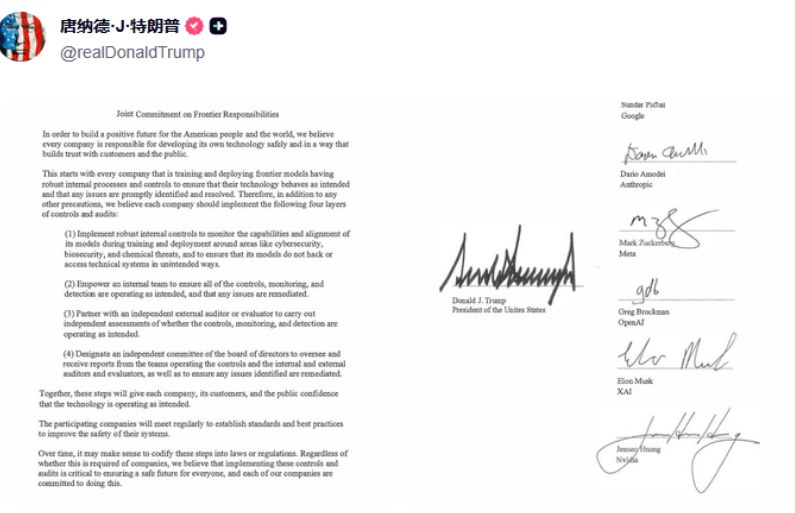
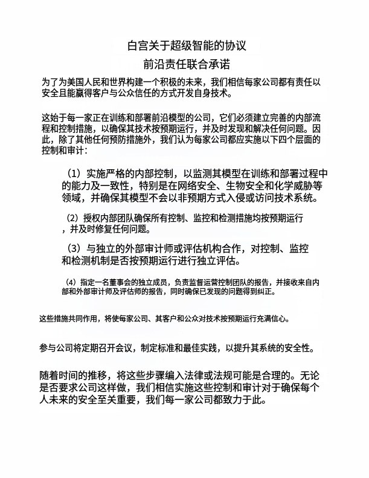
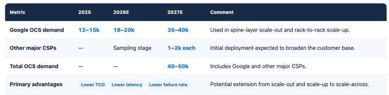
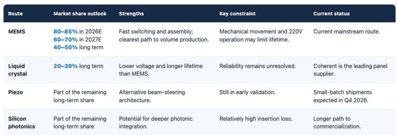
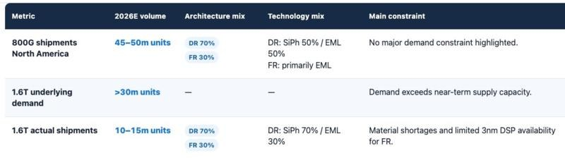
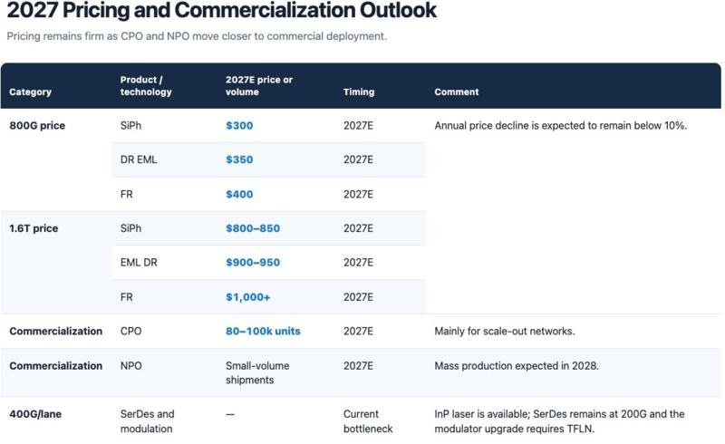

调研纪要 · 2026-09-30 新闻日报
星球 ID: 28855458518111 | 共 194 条帖子 | 精华 48 条
| 查看研究积累
强制同步到研究积累
全部 电子 计算机 房地产 医药生物 其他 机械设备 电力设备 非银金融 基础化工 传媒 通信 汽车 宏观策略 建筑材料 建筑装饰 环保 食品饮料 石油石化 有色金属 国防军工 家用电器 交通运输 轻工制造 商贸零售 美容护理 社会服务
书签
【浙商医药】富达投资增持金斯瑞科技（01548.HK），AI4S行情持续演绎
【浙商医药】富达投资增持金斯瑞科技（01548.HK），AI4S行情持续演绎
[玫瑰]事件：
1. 根据香港交易所9月29日披露的文件，FMC LLC与9月24日增持金斯瑞生物科技，#持股比例从4.96%提升至5.26%；
2. 以FMC LLC增持的价格对应市值为#918亿港币，9月29日收盘金斯瑞科技公司收盘价为944亿港币；
3. FMC LLC为富达集团投资顾问主体，同时#持有Twist（Twist.O) 7.63%的股份（截止2026年6月30日）
[烟花]观点：
1. 行业发展逻辑正在从科学家决策到智能化自主决策验证的新阶段，科学研究的范式可能被重塑，早期药物发现从低频验证的范式转向高频、高通量、多轮快速迭代的新范式；
2. 我们认为从行业发展角度来看，高频迭代短期将会带来验证阶段需求的井喷，但长期来看，高速迭代可能会带来平台能力的提升和泛化。
报告链接：
【浙商医药‖郭双喜】AI制药深度：新时代，新跃迁 ↗
[爆竹]风险提示：技术发展不及预期的风险、政策不确定的风险
🧧【中信传媒】芒果超媒：推进AIGC精品中长剧，内容、IP与商业化协同布局
🧧【中信传媒】芒果超媒：推进AIGC精品中长剧，内容、IP与商业化协同布局
#精品中长剧储备加速落地。招商会公布的28个项目均已推进，首批约30个精品项目计划于2026年四季度至2027年一季度陆续上线；储备中单集约15分钟的中剧占比约70%，另有两部仿真人长剧在制作。《
后西游记 ↗ 》第6-10集计划于国庆期间上线，是观察AI长剧持续接受度、内容质量及用户留存的重要窗口。
#专业团队支撑制作，资产沉淀推动提效。AIGC创新中心现有70余人，其中约70%为制作力量，另与二十余家核心外部伙伴合作。公司判断，部分古装、都市题材AI内容成本有望降至传统真人剧的约1/8—1/10。长篇叙事和审美把控仍依赖专业主创，人物一致性等难点仍待突破，未来随着人物、场景等资产沉淀复用，有望减少重复生成与返工。
#丰富IP储备打开开发空间，AI角色亦有望成长为新IP。公司正讨论围绕《
五福临门 ↗ 》开发AI长剧，并计划系列化开发《
大侦探 ↗ 》案件，丰富的影综漫资源可持续提供开发素材。新AI剧集与角色也有望向账号、品牌合作和综艺舞台延伸，形成长期运营的IP与AI艺人。
#边审边播机制逐步跑通，精品探索获得支持。《
后西游记 ↗ 》在立项、制作阶段持续与主管部门沟通，按制作节奏分批送审、播出，为吸收观众意见及提前规划剧情植入提供空间。我们认为也可以体现主管部门支持具有行业探索意义的精品内容。
#会员增量与广告合作值得关注。《
后西游记 ↗ 》上线后，公司观察到男性、漫剧及亲子用户增量，持续供给有望承接原有女性用户、提升男性用户留存。广告端，该剧已获修正药业冠名，另有中剧完成汽车品牌软植入，更多合作形式仍在探索。
#投资建议：关注AIGC内容从精品项目落地走向稳定供给。公司有望凭借IP储备、专业制作及AI降本能力，带动会员、广告和IP运营收入空间。短期建议关注《
后西游记 ↗ 》后续播出、新项目上线及品牌合作；中长期建议关注验证仿真人长剧质量、产能与实际商业回报。
🌹详询：中信传媒 叶敏婷/林圳杭/卞榛
🍁最近先导基电关注度比较高 看了下 感觉高能环境的逻辑跟先导是比较像的，都是基于铋铟锗等各种小金属深加工，不过高能一年有18亿利润，还有金和铜，现在200来亿市...
🍁最近先导基电关注度比较高 看了下 感觉高能环境的逻辑跟先导是比较像的，都是基于铋铟锗等各种小金属深加工，不过高能一年有18亿利润，还有金和铜，现在200来亿市值 也不错
❗️❗️❗️重视【博硕科技】
❗️❗️❗️重视【博硕科技】
北美大客户code已正式落地，订单价格已沟通完毕，节后催化不断。随市场回调，当下即是最好买点，建议重视，摁手！
OpenAI开发者大会：Dots落地，模型降本与应用生态同步推进
OpenAI开发者大会：Dots落地，模型降本与应用生态同步推进
🌹当地时间9月29日，OpenAI召开DevDay 2026，公布20余项更新。
#用户规模持续扩大。平台周活用户达12亿，ChatGPT Work与Codex合计周使用人数超3,500万。
#发布Dots常驻个人Agent。可全天候推进任务、学习用户偏好；基于GPT‑6 Astra，拥有独立云电脑，可连接超4,000款应用，支持在ChatGPT、Slack及Teams中交互。
#发布GPT‑6.1 Sol。官方称，其编程、电脑使用和专业工作能力接近Astra，标准API输入/输出价格为每百万Token 2/10美元，仅为Astra的1/5。
#调整订阅体系。新增500美元/月Pro档位，提供Plus的25倍用量及Ultrafast，Codex中Token生成速度最高达标准模式的8倍；200美元档重新开放、下调用量，订阅额度可用于16家合作伙伴工具。
#推出Space与Pages。Space是团队与AI共享知识、开展协作的工作空间，Pages是支持人与Agent共同编辑的文档，可在其中写作、研究、生成图表。
#拓展应用生态。开放插件扩展，支持开发者在ChatGPT内构建原生交互界面；Marketplace首批覆盖32家伙伴，符合条件的企业可将部分既有采购承诺用于合作伙伴软件。
风险提示：技术迭代、商业化落地不及预期，数据安全与监管风险
红包收不收，住房贷款贴息思考
红包收不收，住房贷款贴息思考
2026年10月1日起，实施居民购房贷款贴息政策，政策实施期暂定1年。1）新购买首套房，不包括存量贷款置换；2）住房建筑面积不超过120平方米、总价不超过150万元。财政部贴息1个百分点，期限最长5年，可享受贴息的贷款规模最高可达100万元。
1.并非新政策：试点转为全面铺开。实际上全国目前已有20多个城市开展了房贷贴息的政策，受限于试点城市财政影响，不同城市分化较大。本次贴息转为全国层面，范围更广，力度有所提升。也是8.28房地产新政组合的配套工具。
2.对象：首套刚需，三四线中小城市。根据约束条件，一线/强二线绝大部分房源基本被排除。目前一线城市二手房的均价基本企稳（分化严重），二线城市跌回2016年，三线城市跌到2010年之前；同时，三四线城市新房销售疲弱，库存高，去化周期长，急需稳一稳、拖一拖。
3.幅度：5年5万红包。若按照100万贷款测算，每个月的月供少还520元，贴息最多累计减少付息4.73万元。若按照100 万户受益，5 年总贴息约 473亿元、年均约95亿元，占年度全国财政支出仅 0.03%。
4.租不如买？估计难。三四线城市，平均租金回报（2.2%–3%）刚够贴住贴息后的利息，但扛不住首付机会成本+持有费，更扛不住房价持续下跌。贴息只是让"咬牙买"的家庭月供轻一点，没改变资产端亏钱的方向。很难带来显著增量。
目前核心在于经济结构分化显著、就业压力依然较大、居民财富受损严重、防御心理偏强，存量压力问题仍需时间来缓解。
⚡白酒板块大涨快评#筹码&报表出清、政策敏感度高
⚡白酒板块大涨快评#筹码&报表出清、政策敏感度高
[礼物]盘中金徽酒、古井、老窖、迎驾等上涨超过5%，我们认为与昨日地产政策有关#市场对后续内需政策预期增强。
[玫瑰]1、中报验证白酒#加速出清（筹码和报表），不少酒企2026年报表比动销差，27年将环比改善，比如茅台/古井/老窖/五粮液等，#交易难度小且胜率高、对政策敏更感度。
[玫瑰]2、投资建议：短期（半年）交易#政策预期，首推业绩即将转正的#古井/老窖等。节奏上，超额或将出现在#10月中旬到12月中旬。
[玫瑰]3、近期跟踪：双节动销接近尾声，#场景压制仍未解除，多地经销商反馈出货总量有所下滑，但茅台/五粮液/迎驾/金徽酒等#表现最好。
[玫瑰]4、内需叙事增强#如图。
by：zxw团队#求支持
中信证券：开启中国房地产市场的新周期
中信证券：开启中国房地产市场的新周期
当房价已来到合理位置，需求侧提振效果比较显著
我们认为，当房价已经来到了合理位置，需求侧提振的效果就会比较显著。现房销售的改革大大降低了交付风险，并限制了未来的供给增长。需求提振又令月供可能明显低于租金，从而推动房地产市场从量变走向质变，终结超过六年的房价下跌周期。
▍财政部，中国人民银行，金融监管总局强化财政金融政策协同，支持城乡居民刚性住房需求，决定在全国范围内实施居民购房贷款贴息政策，减轻新购买首套住房家庭的商业性个人住房贷款利息负担。
支持使用新发放商业性个人住房贷款购买在120平米以下，价格在150万元以下的房屋，贴息贷款规模上限为100万元。政策自2026年10月1日起实施，实施期限暂定1年，其间经办银行新发放符合条件的首套住房商业性个人住房贷款，财政部门按照贷款本金给予年化1个百分点、期限不超过5年的贴息支持。根据相关部委答记者问，按照目前首套住房商业性个人住房贷款利率水平，相当于优惠了利率的三分之一，贴息期限最长5年。例如，对于一笔长期限的100万元商业性个人住房贷款，考虑到大多数房贷按月付息和还款，贷款余额逐月减少，贴息政策最多可帮助借款人累计减少付息近5万元。
▍政策切实降低了居民的负担，有效鼓舞了市场的需求，其中刚需直接受益，改善性需求则间接受益。
对刚需来说，居民在买房阶段直接受益，120万左右总价的房屋可能享受最高至5万元左右的付息优惠。由于政策既补贴新房，也补贴二手房，改善性需求虽然在新购住房时未必能够享受政策好处，但由于其卖出房屋可能符合贴息的要求，阶梯式改善的可能性也就明显提升了。
▍房价已经来到合理位置，需求侧边际提振效果预期显著。
根据统计局数据，在70大中城市新房/二手房连续39/40个月的房价环比下降之后，存量房业主的浮盈水平已经明显偏低，房价收入比已经回到十分合理的水平，租金回报率已经明显超过存款利率。即使在本轮贴息之前，按照40年周期的房贷计算，房贷负担也已经局部低于租金。本轮贴息之后，我们预计更多区域的房贷负担会低过租金。从国际经验来看，租金超过房贷负担，是房价出现向上拐点的重要标志。
▍从828到929，从供给侧改革到提振需求。
现房销售改革大大降低了住房交付的风险，维护了消费者权益，鼓励提供高质量的产品。购房贷款贴息政策则有效支持了住房市场的需求，有助于促成供求的进一步平衡。当供求两边的政策都达到了质变阶段，我们相信居民的信心也就会随着交易量的放大而逐步修复。我们相信，当前既是房地产从房价下跌周期走向房价回升周期的拐点，也是房地产市场从量大管饱，粗放发展，走向高品质开发，高质量发展的拐点。此外，由于未来房地产市场的品牌溢价可能扩大，产品差异度可能增加，且开发企业的资金链阶段性偏紧，即便房价回暖，我们认为土地价格的上涨幅度也可能十分有限。开发企业可以不再困扰于周期性原材料价格上升和商品价格下降，得以积极打磨产品，阶梯式满足不同需求的需要。
▍风险因素：
受回款速度放缓的影响，大多数发展商可能会在2026年四季度经历一个资金链更紧的阶段；市场需求复苏可能需要一个过程，2027年之前不少城市景气度仍然不明朗的风险。
▍投资策略：
和历史上的需求提振政策相同，我们认为价格信号的反转对于企业盈利修复，估值提升将有决定性作用。但和历史上每一次需求提振政策不同，我们认为全市场的新房开发规模难有明显提升，消化库存防范风险是当前的主旋律，而传统的，以量驱动的房地产产业链逻辑难以成立。当然，随着房价风险的消除，金融体系风险也会下降，内需相关的资产也可能边际受益。
🚩AI 热潮加剧 PCB 供应链压力，材料与设备短缺将持续至 2027 年
🚩AI 热潮加剧 PCB 供应链压力，材料与设备短缺将持续至 2027 年
📈自 2025 年下半年以来，AI 服务器与高速网络需求的快速增长，已导致 PCB、IC 载板以及核心材料供应全面趋紧。
⚠️即使在 2026 年，供应改善的信号仍有限。供应短缺首先从低 CTE 和低 Dk2 玻璃纤维布以及 HVLP4 铜箔等先进材料开始，此后已蔓延至 CCL、高阶 PCB、ABF 载板、制程设备以及耗材。
📅交期开始拉长，甚至部分中低阶材料与通用 CCL 等级也出现涨价迹象。
🔎截至 2026 年第二季度，先进材料、PCB、载板以及特定制程设备的供应仍维持紧绌状态。
🏭PCB 与载板厂商、材料供应商以及设备制造公司皆在扩增产能，新产能预计将于 2027 年至 2029 年陆续上线。
❗然而，随着 AI 需求持续上升以及规格要求提高，客户认证与良率爬坡需时，短期内新增供应难以完全填补供需缺口。
✅因此，PCB 供应链的紧绌状态很可能将持续至少至 2027 年。
🏢台湾 PCB 制造供应链包括臻鼎、欣兴、景硕、华通、华邦、金居、楠梓电以及华星科。
📦主要材料供应商包括联茂、南亚、台光、伊特、台玻、富喆、科定、东台以及上福。
⚙️主要设备供应商包括新高、GPM、上银、永光、大同以及亚金属。
📊根据台湾印刷电路协会（TPCA）统计，2026 年上半年台湾 PCB 材料产业国内外生产总值达新台币 2716 亿元（年增 38.6%）。
📈增长主要受硬板用高频高速 CCL 带动，而玻璃纤维布与铜箔等核心材料供应短缺状况持续。
💹产能紧绌与原物料成本上涨，导致材料供应商逐步调涨价格，进而推升 PCB 材料生产总值。
📋同期，台湾 PCB 设备产业国内外生产总值达新台币 460.8 亿元（年增 27.8%）。
🔧机械钻孔设备与钻头表现特别强劲。
📐随着 PCB 层数与厚度增加，钻孔复杂度上升，带动相关设备、工具与材料使用量提升。
🚀2026 年 AI 服务器与高速网络需求的扩张，正带动台湾 PCB 供应链整体成长，同时加速材料与制程设备的技术进步。
📈此趋势提升了台湾 PCB 产业生产总值今年再度创下新高的可能性。
🔮TPCA 预测，AI 应用扩展以及 AI 眼镜与卫星通讯等新兴市场成长，将成为 2026 年下半年额外增长动能。
💰台湾 PCB 制造产业 2026 年下半年国内外生产总值预计将增至新台币 6118 亿元（年增 24.5%）。
💎台湾 2026 年全年 PCB 制造生产总值预计首度突破新台币 1 兆元，达新台币 1 兆 1365 亿元（年增 24.2%）。
🔗AI 基础设施需求的扩大，正将成长效益扩散至 PCB 制造上游的材料与设备。
🔄这显示 AI 已超越单纯的一次性循环性需求激增，正积极重塑供应链内部的价值分配结构。
✨随着 PCB 技术持续演进，现有机供应商的竞争地位可能发生转变，同时为新进者创造新机会。
🎯台湾 PCB 产业能否强化竞争力，将取决于其能否跟上未来 AI 平台升级速度，并将技术变革转化为新产品价值。
科技大跌的背后原因：
科技大跌的背后原因：
一，季末公募调仓，科技小登沦为老登，规避风格飘逸以及提前部署四季度；
二，主力杀入医药，并反扑地产，主打的就是预判你的预判；
三，科技小登成为散户聚集地，拉升难度极大，主力选择去人少的地方，越拥挤的地方越危险；
四，外围风险、美伊冲突以及AI扰动，资金纷纷选择避险风险更大的科技，尤其实际利率走高压制的科技等风险资产
Meta 在 NPO（近封装光学）方向的市场价值很大，它被普遍认为是未来几年 NPO/CPO 部署的最大客户之一?，多家机构预计整个 NPO/CPO 市场到 2...
Meta 在 NPO（近封装光学）方向的市场价值很大，它被普遍认为是未来几年 NPO/CPO 部署的最大客户之一?，多家机构预计整个 NPO/CPO 市场到 2030 年将突破 390 亿美元，NPO 本身也处于高速放量的起点。
#联特Linktel meta NPO 从0到15%，意味着增加58.5亿美元约400亿人民币。
北京警告若欧洲对中国企业施加限制将采取报复措施
北京警告若欧洲对中国企业施加限制将采取报复措施
中国硬件股将迎最差季度，人工智能涨势瓦解
中国硬件股将迎最差季度，人工智能涨势瓦解
重点提示：
重点提示：
1、重大推荐【华通线缆】未来有望“老树开新花”，“老登”变“小登”。非洲电解铝龙头，超强阿尔法，新兴产业打开成长空间！未来非洲布局将远超市场预期！[福][福][福]
2、【H氧股份】成立肥杭氧电子气体有限公司。中国工业气体龙头，“周期+成长”兼备，电子特气、核聚变、商业航天、量子计算等打开空间[福][福][福]
🔥【国金机械】 博迈科大涨：深海油气 FPSO市场高景气，公司高增长趋势确定性强
🔥【国金机械】 博迈科大涨：深海油气 FPSO市场高景气，公司高增长趋势确定性强
[玫瑰]深海油气FPSO 市场有望持续高景气。根据克拉克森数据，26 年全球预计有14个FPSO新项目授出（含FLNG），SBM Offshore和MODEC两大总包龙头的在手订单均创历史新高。从资源禀赋看，圭亚那Stabroek区块已探明可采油气当量逾110亿桶，后续还有Longtail（2026）、Haimara（2027）、Bluefin（2028）三个FPSO规划。巴西方面，Petrobras正在推进多艘FPSO部署，Búzios区块整体将部署12艘FPSO。苏里南市场GranMorgu项目投资105亿美元，计划2028年投产。马来西亚国家石油公司在52区块发现超10亿桶油当量天然气，计划开发FLNG设施。
[玫瑰]公司卡位优势好、未来2年订单预期积极。公司作为上部模块分包商，深度绑定FPSO双寡头SBM/MODEC100%份额，项目经验丰富。9 月29 日，公司公告拿到 sbm 南美项目约21 亿fpso 上部模块订单，#全年我们预计新签订单50亿+、将创历史新高（已拿到36亿），预计集中在26Q4落地。展望27年单，澳大利亚、西非仍有数个FPSO以及LNG项目落地，公司订单预计积极。
[玫瑰]预计从Q3起业绩迎来拐点、扭亏为盈。上半年公司受项目交付延迟以及资产减值影响，业绩承压。从Q3开始，此前项目减值接近尾声，将带动公司业绩释放。
[礼物]当前公司股价、业绩、订单处于底部，随着新签订单落地和项目交付，股价有望迎来戴维斯双击，建议重点关注！
☎️国金机械满在朋/秦亚男 17356570576
🔥#恒锋工具，机器人传动件供需缺口最大的耗材，下游谐波、丝杠扩产爆单+对日替代+涨价预期，t链核心tier2。2e+业绩，50%毛利率，高度重视[抱拳]
🔥#恒锋工具，机器人传动件供需缺口最大的耗材，下游谐波、丝杠扩产爆单+对日替代+涨价预期，t链核心tier2。2e+业绩，50%毛利率，高度重视[抱拳]
【澄清❗️】宏和科技减持完毕：情绪面影响错杀，基本面会证明一切。
【澄清❗️】宏和科技减持完毕：情绪面影响错杀，基本面会证明一切。
1、自媒体为了博眼球，铺天盖地发“老板高位套现”，事实上老板减持是为了80亿的投产规划顺利进行，这部分投产的资金是来自27Q1港股融资，但是港股融资存在不确定性，所以必须要用老板自己的钱做第二方案。老板是台湾屈指可数的首富，没必要为了一点股份卖公司，现在老板还持有80%的股权。
2、老板已经减持完毕，股价上没有抛压，是好事情。
3、80亿投产规划，1亿米都是特种布，有黄石政府提供厂房，老板提供资金，客户提供保证金订单，订单最远的T布排到2030年了，公司的经营十分稳健。
4、9月份发货再上台阶，T布70+、二代布30+、一代布110+、普通布1300+万米/月。26Q3、26Q4及后续业绩都会持续证明自己。
距离前高1倍以上空间，回调即是买入机会。
宏和科技更新：坚定看好T布产业趋势和公司业绩逐季度释放，当前位置距前高有一倍以上空间。
宏和科技更新：坚定看好T布产业趋势和公司业绩逐季度释放，当前位置距前高有一倍以上空间。
9月份发货量再上台阶，T布、二代布、一代布，发货量均创历史新高，其中T布正式超越日东纺出货量，单月出货量超70万米/月，成为全球T布龙一，单月业绩再创新高[玫瑰]
by lgf
🚀🚀再call【优利德】：布局时机已到，高端VNA超预期+采样示波器双重催化！
🚀🚀再call【优利德】：布局时机已到，高端VNA超预期+采样示波器双重催化！
[红包]本周优利德出现较大幅度回调，主因是科技整体行情疲软叠加上周VNA板块涨幅过大，公司基本面依然强劲。#我们认为VNA作为崭新的AI硬件细分赛道，其爆发性不亚于年初以来的采样示波器，可以看长期，不是简单的短期主题。优利德预期差最大，建议重视：
#高端网分： 公司上半年收购的这个天津VNA团队，已深耕行业超20年，技术对标电科思仪，且已研发67G网分2年以上，#目前67G VNA整机研发完成，已有样机，且预留后续110G以上网分接口，#预计27年推出110G以上VNA仪器。客户端，预计率先在高速连接器领域落地，#订单预计50-100台，27年仅单一客户预计在几个亿级别！#后续有望在PCB和高速铜缆头部客户送测，持续落地批量订单！
#采样示波器：1.6t DCA研发快速推进，产品近期有望落地，且三件套同步推进，具备：#电测+光测+芯片三重优势，预期差大！且业绩处于高增阶段，有坚实的市值底！持续重点推荐，务必重视！市值看200亿起步！展望400亿！
【中泰电子|京东方】玻璃基板&光互联&先进封装进展乐观，重视产业链龙头！
【中泰电子|京东方】玻璃基板&光互联&先进封装进展乐观，重视产业链龙头！
[礼物]先进封装&光互联进展顺利，计划布局先进封装平台延伸下游！
➠玻璃芯载板：产品规格持续提升，24层玻璃芯基板已通过内部验证并送样客户，未来将攻关叠孔、埋容载板等前沿方向。量产良率爬坡迅速，目前良率较7月显著提升，部分环节良率已达显示级水平！量产线计划27Q1完成投决，关注量产进度超预期可能！
➠先进封装：未来公司将在玻璃芯载板基础上向下游先进封装延伸，未来一年内完成封装平台搭建，关注潜在外延机会！
➠MicroLED光通信：会议现场已展出MicroLED发射&传输端Demo，预计年底实现全套解决方案展出，一年内完成产业投资决策。
[礼物]面板涨价加速短期利润释放，供给端格局有望持续改善！
➠LCD：面板大尺寸化持续推进，叠加海外厂商产能退出，供需持续趋紧！京东方、TCL、惠科等面板龙头已于近期对TV面板提出涨价，未来LCD面板价格有望重回上升通道，加速显示主业利润释放！
➠OLED：行业逆风下，公司凭借更高的海外客户占比+高端产品占比有望实现出货量逆势增长；未来公司亦有望通过并购方式推动行业产能集聚，供给端格局有望持续优化！
风险提示：新产品验证进展不及预期
☎派点请支持中泰电子：王芳/杨旭/王峙博
台股玻璃基板相关标的【晶呈科技】高开
台股玻璃基板相关标的【晶呈科技】高开
近期有台湾媒体报道，晶呈科技TGV玻璃基板迎来量产里程碑，公司自研LADY激光改性搭配气态蚀刻的独特工艺，有别于大陆主流湿法腐蚀路线。第二季法说会上披露，旗下GCB大IC玻璃芯载板单月出货量已经达到四位数，正式从样品验证转入量产阶段，已经送样AI大型芯片客户，受保密协议限制不便披露客户名称，同时还有CPO用光导基座产品同步推进验证。
产能方面，台系相关人员乐观预估，2027年底将建置12条产线、2028年底扩至65条、2029年底有望突破百条产线，预估单条产线满载后每月营收可突破1亿新台币
这与25年9月，公司给出的29年达产120条以匹配。
业务层面，TGV产品线今年营收目标预期翻倍增长
【帝尔激光】作为晶呈科技在超快激光设备领域的主要供应商，通过晶呈进入台积电、博通体系。也对接了海外NV、三星，国内BOE、蓝思、三叠纪等玻璃基板产业链主流企业
持续重点推荐
广康生化强烈推荐
广康生化强烈推荐
2硝体越来越稀缺
全球康宽需求2万吨，对应9600吨的2硝体，当前供给方：河南羲和2000吨，中山化工1000吨，其余6600吨是非法的地下工厂产能。
核心催化：国家在严格打击2硝体地下工厂产能，中山化工未来的产能会退出，2硝体涨价
广康生化一期5000吨预计最近两周投产，二期5000吨预计明年投产，未来将替代非法产能
远期利润10亿左右
2硝体稳态利润：当前成本4万/吨，价格9万/吨，税后单吨利润4万/吨，公司1万吨，税后净利润4亿。
主业稳态利润：1亿
募投项目还有6个中间体和农药：预计2028年贡献收入和利润，满产预计25亿收入，20%净利率，5亿利润。
远期10亿利润，给于10X，100亿目标市值
XBBJS【青矩技术】：绝对底部的高股息建筑科技标的
XBBJS【青矩技术】：绝对底部的高股息建筑科技标的
#北交所建筑科技第一股，造价咨询龙头卡位工程投资管控赛道
公司以工程造价咨询为核心，子公司青矩顾问是#近十年唯一连续位列全国造价咨询收入前三的企业，全过程工程咨询收入占比超96%，是北交所乃至A股稀缺的''工程投资管控第一股''。区别于传统施工类建筑标的，公司以轻资产、高毛利（毛利率约47%）的咨询服务模式切入地产与基建链条，用BIM/CIM、三维零代码平台、AI智慧工程审计平台等数字化产品重构造价审核流程，2026年3月获批北交所科技创新公司债券，''科技咨询''属性持续强化，是北交所板块中估值体系有望从#''建筑服务''向''建筑科技''切换的核心标的。
#低估值+高股息，安全垫在北交所板块内极具稀缺性
当前PE（TTM）仅约10.5倍，PEG 0.51，显著低于工程咨询行业约40倍PE的历史估值中枢；2025年度每10股派8元（含税）并转增4股，对应当前股息率约5.46%，在#工程咨询46家可比公司中排名第一，股利支付率56.4%且连续5年稳定分红。在北交所红利风格走强、资金持续抱团''低估值+高股息''小盘标的的背景下，公司同时满足''#破净边缘+5%以上股息+业绩正增长''三重防御属性，下行空间有限。
#在手订单30.19亿续创新高，AI降本增效驱动利润率逆势扩张
2026H1营收3.50亿元同比持平，但扣非归母净利润7199万元、同比+13.05%，经营性现金流净额同比+27.48%，—#AI工具在造价审核环节的渗透率提升正在兑现为毛利率改善。期末在手订单30.19亿元，较年初+2.25%，已覆盖2025年全年收入的3倍以上；战略客户矩阵持续扩容，新入围国家电投、中国中化、中国大唐及商务部对外援助项目咨询库，新疆、内蒙古等固投重点区域收入分别增长近20%、40%，订单蓄水池充足。
#直接受益地产链回暖+城市更新政策，地产β向上时弹性最大
工程造价咨询是地产新开工与建安投资的''先行指标''，公司业务与房地产新开工、存量改造高度绑定：近期发改委《
关于加快推动工程咨询行业高质量发展的意见 ↗ 》、城市更新行动深化、存量资产盘活等政策密集落地，公司在城市体检、老旧小区改造、低碳/节能改造成本测算等环节已有多个标杆案例。一旦地产销售与新开工数据企稳回暖，公司作为地产链前端轻资产服务商，#收入确认节奏将率先修复，而当前估值尚未反映这一预期——''#低估值+高股息打底，地产β回暖向上''的赔率结构在北交所板块内独一无二。
风险提示：地产投资恢复不及预期；AI产品商业化进度慢于预期；应收账款与商誉减值风险。
【兴证医药】荣昌生物更新泰它西普gMG III期48周分析数据
【兴证医药】荣昌生物更新泰它西普gMG III期48周分析数据
近日，荣昌生物在2026年美国神经肌肉电诊断协会年会（AANEM），口头报告泰它西普（BAFF/APRIL）治疗gMG中国III期48周分析数据。研究共纳入114例患者，随机接受泰它西普240mg QW或安慰剂治疗24周，随后进入24周开放标签延长期，安慰剂组转用泰它西普。
第48周，超过94%的患者MG-ADL改善≥5分；
48周治疗期间，【约42%】泰它西普治疗患者曾达到MSE（MG-ADL评分为0分或1分），较前24周的23.7%进一步提升。
达到MSE后，86.7%的MSE状态在下一次月度评估中继续维持；持续泰它西普组及安慰剂转泰它西普组分别有83%/85%的时间维持MSE状态。
基线MG-ADL 6-8分、9-10分、11+分患者达到MSE比例分别为51.2%、51.7%、20.5%。
泰它西普gMG适应症已于2025年5月在中国获批；海外Vor Bio主导的全球III期已于2026年9月完成入组，主要终点为24周MG-ADL较基线变化，预计2027年上半年披露顶线数据。
#同类竞品gMG数据：
Nipocalimab（强生，FcRn单抗）30mg/kg Q2W联用SoC，24周双盲+24开放标签，第48周MSE比例为【33.8%】；
资料来源：荣昌生物公告，AANEM大会；
注：仅为公开资料整理，不构成投资建议
联系人：孙宋暄15121161179/杨希成/黄翰漾/孙媛媛
[红包]浙商机械 邱世梁|王华君【工程机械】工程机械被低估，周期反转向上，海外市占率提升，国内更新周期向上，持续推荐！
[红包]浙商机械 邱世梁|王华君【工程机械】工程机械被低估，周期反转向上，海外市占率提升，国内更新周期向上，持续推荐！
按照以人民币计价的出口额计算，8月我国工程机械出口额412亿元，同比增长12.5%；1-8月出口额3216亿元，同比增长16%。
8月挖掘机总销量19716台，同比增长19%，其中国内销量7986台，同比增长4%，出口量11730台，同比增长33%。
1-8月挖掘机总销量191557台，同比增长24%，其中国内销量94619台，同比增长17%，出口量96938台，同比增长32%。
【工程机械】被低估，重点推荐：恒立液压、三一重工、徐工机械、中联重科、山推股份、潍柴动力、杭叉集团等。
风险提示：利率波动风险；汇率波动风险等。
☎【浙商机械 邱世梁/王华君18610723118/徐琛奇13601980561/蒋逸18158576706】
🏠 [高盛销售简报]：中国房地产：定向宽松：在我看来，这意义重大，因为这是中央政府首次掏出“真金白银”支持消化住房库存。买入贝壳
🏠 [高盛销售简报]：中国房地产：定向宽松：在我看来，这意义重大，因为这是中央政府首次掏出“真金白银”支持消化住房库存。买入贝壳
📰 宏观新闻——定向宽松房地产政策：昨日A股收盘后，中国中央政府公布了住房贷款补贴及银行贷款政策调整措施，以支持增长动能减弱的经济。
💡 个人观点：我个人认为这意义重大，因为这是政府首次真正拿出一些“真金白银”来支持房地产需求。此前的工具更多侧重于杠杆方面（即按揭成数、利率等）。
📝 资格要求：资格要求仍然相当严格，目标似乎主要是低线城市（补贴面向房价不超过150万元人民币、面积不超过120平方米的住房）。
📈 市场表现：房地产开发商股票昨日表现良好，尽管相关官方政策是在昨日A股收盘后才发布在政府网站上。今天，我们应留意可能出现的“买预期、卖现实”资金流。
⭐ 投资偏好：我在该板块最看好的标的仍是美国上市的贝壳（BEKE US，房地产交易代理商）。
💰 住房贷款补贴：为符合条件的首套房贷购房者提供1个百分点的年度利息补贴，适用于房价不超过150万元人民币、面积不超过120平方米的住房。符合条件的借款人每户最多可就100万元人民币的贷款本金享受补贴，补贴期限最长为五年。
🏘️ 补充说明：售价不超过150万元人民币的房子通常位于低线城市。由于居民购房能力和人口结构等因素，低线城市往往积压着最多的未售住房。因此，看到中央政府愿意拿出一些“真金白银”来帮助消化低线城市的住房库存，令我倍感欣慰。
📊 影响评估：补贴可更直接地支持住房需求，并可能在短期内提振住房销售；不过，鉴于资格要求相对严格，我们预计其对整体增长的拉动作用有限。我们估算，年度新增按揭贷款发放总额约为人民币5万亿元，其中约50%可能符合资格标准，这意味着每年补贴成本为人民币250亿元，补贴期限最长为五年（其中90%由中央政府承担）。由于该计划目前安排实施一年，也可能使部分首套房购房需求提前释放。
《广发海外电子通信》
《广发海外电子通信》
☄CPO加速，然个股影响分化
👉我们认为 Nvidia CPO Scale-out交换机进展快于预期，但 NPO 方面受 AWS T4 慢于预期影响，我们调整OE出货预测至 2027E/2028E 约 650万/4,200 万颗。
☀Nvidia Scale-out CPO：Nvidia 8月14日宣布后，Spectrum-X CPO交换机已进入量产，台积电扩充CPO测试/检测产能支持 (新增Insertion 2/3设备)。FAU等关键零组件进展亦顺利，受益多次插拔良率改善。系统端，我们认为主要零组件供应商已进驻现场，9月初起进行洁净室级系统整合。我们预计Nvidia CPO交换机出货量 4Q26/1Q27/2Q27/2027年分别达15k/16k/30k/100k台。
☀Nvidia与AWS Scale-up NPO：基于 NVL576 的Scale-up CPO/NPO预计 2H27 开始导入。每个NVSwitch Tray配置两块Switch Board，每块搭载4颗ASIC，并配备 4颗3.2T OE/ASIC。我们维持 CPO (QM5 + 4颗OE) 与NPO (QM5 + 4颗插槽式OE) 并行开发的看法；同时我们对于NVL576推出时全面采用NPO的判断与市场预期基本一致；下一关注重点为 Feynman，供应链调研显示Feynman同样同步开发CPO与NPO版本，封装端能见度来看 CPO方案 (QM6 + 6颗6.4T OE) 仍按计划推进；AWS方面，近期 T4 Tape-out能见度有限，我们预计 T4 推出时间延后至 1Q28，OE用量 2H27E/2028E 预计为 0/1,200 万颗。计入ASIC及AMD需求，我们预计全球Scale-up OE需求将在 2027E/2028E达约650万/4,200万颗。
☀个股观点
Likes：1) Lumentum: CPO进展加速支撑估值，CPO/NPO预计CY27/CY28贡献 12%/26%收入; 2) 波若威及贸联: CPO Shuffle Box价值量约为NPO 8倍，预计 1Q27起加速量产; 3) Semtech: NPO的 TIA/Driver供给偏紧。
Dislikes：大立光: 我们预计CPO/NPO业务贡献 CY27/CY28 EPS NT$20/NT$97 (假设2H27开始出货)，对应隐含 CY28约20x P/E，估值不算便宜；同时，现有供应商良率持续改善、且更多新进入者，后续市占率存在风险。
[爱心]【东吴汽车黄细里团队】momenta观点重申
[爱心]【东吴汽车黄细里团队】momenta观点重申
[烟花]海外智驾合作实现新突破！底部位置，坚定看好！
————————
#momenta成为Stellantis集团全球非美市场核心智驾供应商
近期momenta与神龙科技大成全球战略合作，托 Momenta R7世界模型，双方将联合开发高阶智能辅助驾驶系统，搭载于标致、Jeep 全新量产车型，落地中国、欧洲及全球其他市场，助力 Stellantis集团旗下主流品牌加速全球智能化转型。[太阳]此事具有重大意义：预示着momenta的智驾出海进入规模化量产阶段。Stellantis集团每年非美国全球新车销量400万辆+，未来5年有望实现高速NOA到城市NOA的标配。神龙科技是 Stellantis 的全球高级技术平台，将承载S集团全球非美国市场的电动化/智能化输出窗口。S集团每年非美国市场【标致】每年新车销量 100 万辆，【Jeep】 每年新车销量约40 万辆。momenta基于神龙合作成为S集团全球非美国市场的智驾核心供应商，将有望2027年开始贡献海外智驾收入贡献。
#未来3-5年是海外智驾L2+渗透率提升的红利期，momenta成为核心受益者
2020-2026年中国实现了L2+智驾渗透率大幅提升周期，海外非美市场未来3-5年将开启复制中国L2+普及周期。目前海外非美市场每年新车销量约3000万辆，但海外非美市场高速NOA渗透率低于5%，城市NOA渗透率低于1%；中国乘用车城市NOA渗透率2026年分别突破20%（分母是总乘用车），突破40%（分母是新能源乘用车），若假设2030年海外非美市场对标2026年中国渗透率，海外非美市场城市NOA新车销量2030年有望达600万辆，成长空间非常可观。[太阳]momenta已经实现海外多家车企合作：奔驰、宝马、丰田、Stellantis、本田等，海外智驾业务2027-2030年将有望持续高增长。
#我们观点：底部位置，坚定看好momenta，维持“买入“评级！
我们认为目前市场对于momenta的价值处于显著低估状态：1）物理AI虽然很热，但是对于L4智驾是物理AI核心落地应用的拐点还处在黎明前黑暗，对于L4智驾规模化能够带来的商业模式变化也处于质疑阶段。但我们认为世界模型突破将有望带来L4智驾规模化的拐点，2027年是重要时间窗口。2）海外智驾L2+渗透率红利期目前处在订单陆续落地阶段，2027-2030年将进入业绩兑现阶段。3）momenta物理AI核心玩家，具备算力-算法-数据的全栈自研闭环能力，L2+和L4均有完善布局且未来5年将实现业绩兑现共振阶段。
风险提示：L4智驾规模化不及预期；L2+智驾出海不及预期等
[握手]黄细里/孟璐/郭雨蒙/孙仁昊/童明祺/刘斯杰
摩根大通——中国房地产——决策层研究稳楼市政策；上海发布"828"政策细则
摩根大通——中国房地产——决策层研究稳楼市政策；上海发布"828"政策细则
9月28日，房地产政策端出现两项关键进展。其一，国务院常务会议（总理李强主持）明确提出"研究出台稳定房地产市场、促进就业增收等政策措施"，但未披露具体举措。其二，继北京之后，上海于同日发布"828"政策的地方实施细则，整体方向与北京相似但存在细微差异（如定金上限北京为1%、上海为3%），而现房销售按揭放款须于竣工备案后方可发放的核心约束整体维持偏紧基调。
国务院"稳楼市"研究：消费提振导向而非单纯刺激
摩根大通认为，在一线城市房价初现企稳迹象的背景下，决策层推出"大规模刺激"的紧迫性有限。若后续出台支持政策，其终极目标更偏向通过稳定房价以提振内需消费——房价下行是抑制居民消费的关键掣肘之一，因此政策取向将聚焦"促价格企稳"而非"刺激销量反弹"。
两大潜在政策方向
1. 房贷利率补贴：存在约100个基点的利率补贴空间（有望从当前3.05%降至2.05%），但预计设上限。以上海已实施的补贴方案为例，单套补贴上限为5万元人民币（按套而非按年计）。摩根大通测算，若对所有首套新房销售进行补贴，年度所需资金规模约为440亿元人民币。
2. 土地供应管控：在需求端提振难度较大的情况下，供给侧成为政策着力点。可能的方向是优化及更严格执行地方土地供应调控——当前规则要求库存去化周期超36个月的城市暂停供地，18—36个月的城市控制供地。此外，近期"828"政策旨在逐步取消预售制度，其本身已将在高能级城市实现一定程度的供应收缩。
其他可能政策工具：交易税费下调；住房公积金贷款进一步宽松；一线城市（北京、上海已松动，深圳大概率跟进）购房限制进一步放宽；城中村改造现金补偿。
上海"828"细则与北京的差异化对比
• 定金上限：北京允许开发商收取最高1%的定金，上海允许最高3%（仍低于此前5%的预期）。
• 过渡安排：上海明确，8月28日后拿地但土地出让公告发布于该日期之前的地块，可沿用旧预售规则至2027年底，但资金监管账户须执行新规。
• 开发商融资：上海版新增鼓励开发商通过股权、债券、ABS及REITs融资的条款（北京版无此条），摩根大通认为这仅因上交所位于上海，且原文"828"政策已包含此表述，不构成增量信息。
• 土地价款支付：两城市均要求30日内支付不低于50%的土地出让金，但余额缴纳期限北京规定为2年内，上海表述为"1+1年"（正常1年，可延长1年），实质差异不大。
投资影响与策略
短期而言，市场或受政策预期提振维持一定热度（至少延续至国庆假期，符合市场猜测），但若最终政策力度不及预期，板块可能再度跑输大盘。摩根大通偏好标的为华润万象生活（CR Mixc）、华润置地（CR Land）及贝壳（KE Holdings，由Daniel Chen覆盖），建议在反弹中卖出困境房企（如万科）。
主要风险
• 政策实际落地力度与范围不及预期，板块估值再度承压。
• 预售制退出的过渡期内，开发商资金链与交付风险上升。
• 土地供应管控执行力度因地方财政压力而打折扣。
• 一线城市需求端放松幅度有限，销售复苏持续性存疑。
摩根大通——中国电池与材料：铜箔供应紧张随涨价缓解；十月产量展望
摩根大通——中国电池与材料：铜箔供应紧张随涨价缓解；十月产量展望
一、核心论点与宁德时代（CATL）近况
宁德时代A/H股9月迄今分别回调18%（vs. 沪深300指数-6%），主因市场担忧需求放缓、竞争加剧及减产风险。摩根大通在9月2日的产量展望中曾提示铜箔供应紧张为短期制约，此后投资者对进一步减产的关注度持续升温。ZE Consulting于9月15日盘后发布月中更新，将CATL 9月产量预期下调12%，最新更新中再砍3%，累计下调幅度达14%，致其9月产量环比增速由+9%下修至-5%。经渠道核验，CATL与铜箔供应商的定价谈判已于9月下旬落定，加工费上调约1,000–2,000元/吨（仅相当于电池成本的0.1–0.2%），供应瓶颈已基本解除。ZE Consulting预计CATL 10月产量将环比反弹6%，恢复至8月水平；原材料采购量亦将从10月中旬起加速，进一步支撑生产动能。基于当前趋势，摩根大通估算CATL 2026全年产量将突破1.1TWh、销量接近1.0TWh（同比增长约50%）。CATL仍是摩根大通中国电池产业链的首选标的（Top Pick）。
二、二线厂商追赶态势与市场份额再平衡
3Q26行业前六电池制造商（比亚迪、CATL、国轩、亿纬、中航锂电、瑞浦）合计产量同比增长62%，其中CATL增速66%，其余五家合计增速59%，差距由2Q26的38个百分点显著收窄至7个百分点。10月排产延续该趋势：亿纬（+11% m/m）与中航锂电（+19% m/m）环比增幅领先，CATL亦恢复+6%。摩根大通认为，差距收敛主要反映二线产能爬坡及CATL 9月临时性供应扰动，而非结构性竞争力丧失；但市场份额正常化的担忧确实对近期投资者情绪及CATL股价构成压制。
三、十月产量整体展望与需求驱动力
1–10月主要电池制造商产量预计同比增长约55%，增速呈逐季加速：1Q26 +40% → 2Q26 +60% → 3Q26 +62%。核心需求支撑包括：
• 储能（ESS）需求强劲：据ICCSino数据，中国厂商8M26储能电池出货同比增长95%；
• 电动车出口高增：8M26中国电动车出口同比激增近130%，同期欧洲电动车销量增长逾40%；
• 中国商用车电动化提速：8M26商用车销量同比+45%，带电量同比+70%，重卡为关键增量；
• 单车带电量跃升：8M26中国乘用车平均电池容量同比提升9kWh（约+21%），部分对冲了国内乘用车零售的疲软（CPCA预计9M26国内零售同比-12%）。
四、锂价与产业链价格传导
• 锂盐供应与库存：ZE Consulting预计10月中国碳酸锂产量环比微降约1%，因新增产能及津巴布韦矿石到港被检修减产抵消。现货及期货价格分别软至13.2万元/吨、11.9万元/吨，远期曲线陷入backwardation。9月24日当周库存数据出现分化，旧样本结束连续4个月去库后小幅回补，市场对新样本去库持续性存疑。
• 2027年锂价展望：市场焦点转向储能需求增长的可持续性，短期锂价料继续承压。
• 电池价值链选择性涨价：3Q26至今，碳酸锂/氢氧化锂价格分别下跌10%/14%，正极材料跌8–11%；而铜箔因供需偏紧加工费上涨4–10%（6μm涨幅大于5μm），电解液价格上涨12–18%。EV电池价格持稳，储能电池8月环比+2.7%，主要反映9月1日起实施的2%消费税传导。
五、关键数据节点与估值比较
• 全球新能源车渗透率：8M26中国达65%（同比+3%），欧洲EU-5达39%（+53% y/y），美国仅7%（-45% y/y）。
• 中国电池产量：9月前六家合计预计同比+57%、环比持平（较月初预期-7%），10月预期同比+55%、环比+5%。
• CATL对理想汽车出货量：图表显示其供货份额及绝对量维持高位。
• 估值表要点：CATL-A/H对应26/27年P/E约20x/16x，EV/EBITDA约15x/12x，股息率约1.5%/2.0%，ROE维持25%+，在产业链中估值溢价具备基本面支撑。
六、策略结论
铜箔供应扰动属短期噪音，非需求坍塌。随着加工费谈判落地，CATL 10月排产反弹将验证“瓶颈解除→产量修复”逻辑。二线厂商扩产带来的份额再平衡是中期变量，但CATL在技术、客户结构及海外布局上的护城河未受动摇。储能与出口的高增长足以对冲国内乘用车销售波动，单车带电量提升进一步放大电池需求。锂价短期弱势不构成板块核心矛盾，产业链利润正从上游向具备定价权的电池龙头及结构性紧缺材料（铜箔、电解液）转移。维持CATL Overweight评级，建议逢低布局。
摩根大通——硬件与网络设备行业：2026年美国全明星大会要点总结
摩根大通——硬件与网络设备行业：2026年美国全明星大会要点总结
一、Cisco（CSCO | 评级：增持 | 收盘价$106.70）
• FY27营收增长逻辑：预期同比+15%，由三大引擎驱动：超大规模云厂商需求、前期提价落地、核心业务（网络双位数增长，安全/可观测性下半年升至高个位数，服务改善至持平至低个位数）。管理层强调，下半年增速放缓主要系可见度与出货节奏所致，而非基本面驱动因素走弱；1Q27收入可见度改善，尽管下半年基数走高，但增长韧性仍在。
• 超大规模订单与需求可见度：订单与收入间的缺口源于云厂商提前6–9个月下单，而Cisco预订口径仅计入90天内发货订单，长周期承诺计入积压订单，报告订单显著低估真实需求能见度。FY26超大规模订单中，Silicon One系统占60%、光器件占40%，FY27该结构预计无重大变化。
• Silicon One：超越“第二供应商”叙事：对云厂商的核心价值不止于作为博通替代，更在于可编程性、系统级设计、机架空间/功耗效率及供应链控制。Cisco已深耕设计导入超5年，否认份额提升仅受益于供应受限环境。目标到FY29将Silicon One渗透至全系列高性能网络设备，届时对台积电的采购规模将提升议价能力与路线图能见度。
• Scale-Across机遇与产品组合广度：凭借深缓冲路由器、Silicon One及Acacia光学的组合，Cisco在Scale-Across（横向扩展网络）中占据独特位置，P200设计导入与Acacia活动已开始兑现。该机遇的核心逻辑在于每GPU需承载的带宽/内容量大幅提升，且要求极低丢包率。
• 企业市场：设备老化与安全刚需双轮驱动：约$400亿园区交换机临近最后支持日（Catalyst 4000于CY26末，6000系列次年），整体网络设备存量更新机遇达$1000亿。竞争将集中于设备层，而Cisco瞄准大型企业架构级变革（网络+安全+可观测性+软件）。
• 安全与可观测性：拐点初现：该板块此前显著落后于增长目标（主因市场复杂性及Splunk向云订阅转型），但新版产品组合增长已改善，管理层预计FY27末将实现高个位数增长，确认已“渡过拐点”。
• 供应链：紧平衡但不构成FY27增长约束：通过提升库存、提前采购承诺、长期协议及前瞻性硅片规划，Cisco确认FY27指引未受供应限制，光学（尤其激光器）为最紧缺环节，但已有缓冲应对需求微超。硬件占比提升（企业侧亦如此）导致毛利率“温和”承压，但软件与服务收入确认滞后亦是主因，并非仅超大规模客户结构问题。
二、Coherent（COHR | 评级：增持 | 收盘价$295.83）
• 光器件行业双引擎：数据中心持续扩张 + Scale-Up网络从铜缆向光互联转换。后者连接数约为Scale-Out的10倍，是独立于Capex总量的增量机遇。各超大规模厂商采用节奏为关键变量。
• PhotonLink：架构无关的光互联平台：支持CPO、NPO及芯片间光连接，差异化源于核心光子构件内部集成能力。已推进超25个客户项目，CPO性能/功耗更优但牺牲可维护性，NPO保留可插拔灵活性，公司技术中立且两者内容价值相近。PhotonLink收入于C4Q起量，毛利率高于公司均值。
• InP与VCSEL互补覆盖全场景：InP主导长距，VCSEL阵列覆盖短距集成、NPO及芯片间应用。Coherent年产能超10亿VCSEL阵列，Scale-Up将采用InP/VCSEL混合方案，Scale-Out仍以InP为主。
• FY27增长将超越FY26：9月季度指引隐含同比>50% pro forma增长，预计FY27内首次实现单季$30亿营收。增长由现有可插拔TRx及新增PhotonLink/OCS/多轨平台叠加驱动，而非替代现有动能。
• 增长瓶颈在供应而非需求：需求超出当前制造产能，正进行24个月内InP产能翻两倍的扩产（已同比翻倍），但新增产能已被全部预订。扩产节奏受厂房建设、设备与人员培训等物理限制。
• 利润率扩张三大支柱：① 供需偏紧下的持续提价；② 高毛利新品（PhotonLink/OCS/多轨）占比提升；③ 结构性降本——向6英寸InP晶圆迁移，单晶圆产出提升4倍+，成本降至3英寸的一半以下。毛利率从FY24的34%升至指引40.5%，目标>42%并进一步扩张。
• 长期协议（LTA）降低产能风险：LTA多含“照付不议”条款，定价支撑毛利目标。客户可出资支持产能建设（如Nvidia），Coherent借此构建专用产能，目标回收期18个月，大幅降低自有资本风险。
• 西方光子供应链定位：关键光子元件主要于美欧制造，组装/测试为价值链中低差异化环节，核心IP与毛利集中于激光器、隔离器、TEC等。垂直整合优势契合西方客户对供应链韧性的需求，中国营收占比仅约10%。
• 热管理材料与激光技术延展：AI计算密度提升催生热材料机遇，自研Thermadite材料替代铜冷板，热传导性能显著优化，可提升GPU利用率/速率。远期亦布局能源融合等激光应用。
摩根大通——宇树科技-A（688836）：从演示走向部署——智能机器人时代的价值重估；首次覆盖予以“减持”评级
摩根大通——宇树科技-A（688836）：从演示走向部署——智能机器人时代的价值重估；首次覆盖予以“减持”评级
一、投资论点与估值结论
摩根大通首次覆盖宇树科技（Unitree Robotics-A），给予“减持”（Underweight）评级，设定2027年12月目标价人民币300元，较2026年9月28日收盘价（459.65元）存在约35%的下行空间。当前股价对应约46倍2027年预期市销率（P/S），估值隐含了完美的执行能力与持续的市场主导地位；而目标价基于30倍2027年预期P/S，参考了Agility Robotics等全球同行的近期私募融资估值。
二、行业前景：商业化拐点临近，但价值链条正在迁移
• 长期看好人形机器人产业，预计未来2–4年技术成熟与 adoption 扩大将推动行业迎来商业化拐点。
• 然而，产业价值正从“身体”（硬件/运动控制）快速向“大脑”（智能、数据、软件）转移。宇树作为硬件平台先行者，虽有望在行业整合后存活，但若无法在智能层捕获价值，将面临被降级为纯硬件供应商的风险。
三、竞争加剧与定价压力：市场份额与利润率双杀
• 市场正涌入大量新进入者（至少46家机器人公司据报正在港股/A股IPO排队），竞争急剧升温。
• 宇树人形机器人平均售价（ASP）已从2023年的59.3万元骤降至2025年的16.6万元，预计2026年还将再降35%，2028年可能跌破10万元。
• 预计宇树全球市场份额将从2025年的35%萎缩至2028年的15%，中国市场份额同期从35%降至15%。
• 毛利率预计每年收缩2–3个百分点，净利率虽暂维持在22%左右，但定价权削弱与产品组合下移将压制盈利质量。
四、监管逆风：美国FCC限制构成实质性增长阻力
• 美国FCC近期出台新规，限制外国生产的先进机器人设备（含人形/四足机器人）进入美国市场，要求广泛披露与附条件审批。
• 2025年宇树海外收入占比达43%，其中美国约占海外收入的三分之一。该政策将直接制约其国际化扩张，增加地缘合规不确定性。
五、财务预测与商业模式审视
• 预计2025–2028年收入CAGR约46%，2028年营收达52.7亿元；但增长严重依赖降价走量，且应用场景高度集中于科研与教育（占比74%），工业与商业部署仍处早期。
• 盈利端：预计2025–2028年调整后净利润CAGR约61%，2028年达11.6亿元，净利率稳定在22%。但这一预测假设公司不会激进投入具身AI大模型研发，而是保持硬件优先的谨慎策略。
• 现金流与资产负债表健康：2023年起经营现金流转正，2025年末净现金14.2亿元，IPO募资约60亿元进一步夯实资金实力。然而，在行业高波动期，扎实的财务基础未必能支撑稀缺性溢价。
六、关键下行驱动因素
1. 估值难以为继：稀缺性溢价随IPO供给放量而消退，ASP通缩、竞争与监管压力将推动P/S倍数压缩。
2. 毛利率正常化风险：当前高毛利（约60%）部分源于早期产品组合，企业级部署带来的服务成本上升将侵蚀真实利润。
3. 技术路线滞后：在具身智能“大脑”与数据层缺乏领先投入，运动控制优势随供应链成熟而护城河变浅。
4. 地缘政治：美国国防部1260H清单及FCC禁令限制其最大海外增量市场。
七、关键上行风险（需触发条件）
• 若行业向“硬件-软件深度耦合”演进，宇树庞大的装机量与开发者生态可能使其成为物理AI数据网关，从而重获平台溢价。
• 企业级需求加速转化（试点→重复订单），或地缘政治缓和恢复非美市场增长，可能部分对冲估值压力。
八、总结
宇树科技是中国旗舰级人形机器人硬件平台，短期面临“估值 scrutiny（审视）、竞争、定价、监管”四重压力。当前46倍P/S已透支完美预期，而30倍P/S目标价更接近合理风险回报区间。投资者应等待可重复的 enterprise 订单、利润率韧性及智能层变现能力的实证，再评估其平台长期价值。短期内，股价更可能反映从“稀缺叙事”向“商业证明”的 painful transition（痛苦过渡）。
【芯原股份】今日小作文传q3 miss以及管理层等不实传闻，经和公司确认，目前经营一切正常，管理层一切正常，港股按节奏推进中[抱拳][Rose]
【芯原股份】今日小作文传q3 miss以及管理层等不实传闻，经和公司确认，目前经营一切正常，管理层一切正常，港股按节奏推进中[抱拳][Rose]
公司逻辑已得到产业上司公司客户背书，确定性无疑，预计q3收入环比明显加速，且此后逐季度环比大幅增长，此前国产每波小作文错杀都是买点，底部区间持续看好[抱拳][Rose]
【东吴电子陈海进】DeepSeek开源昇腾基础组件，重视强call核心标的#杰华特
【东吴电子陈海进】DeepSeek开源昇腾基础组件，重视强call核心标的#杰华特
[红包]事件：Deepseek今日官宣正式开源面向华为昇腾算力平台的基础设施组件，涵盖 TileLang 高级语言编译工具、计算库、分布式通信库。所有组件与此前面向英伟达平台的开源组件一一对应。目前DeepSeek 训练中用到的每一个 TileLang 算子，#在昇腾上都有对应的高性能实现。双方共同推进基于昇腾950的128卡超节点方案，满足超低时延推理和前沿基座模型的大规模训练的需求。
📮国模+国算深度耦合，消除“软件生态墙”
本次开源是国产算力与国产大模型的深度耦合，系统性拆除“软件生态墙”。此前昇腾硬件虽具备竞争力，但受制于CUDA生态的迁移成本，大量开发者难以将训练任务迁移过来。这批组件的开源，是从工具链和核心库层面，为昇腾硬件铺设了一条更易通行的“软件高速公路”。#从底层生态直接提升昇腾应用能力。
📮国产GPU电源核心标的，杰华特全面发力
杰华特26H1 Drmos已在大算力客户率先放量。在其加单的强力催化下，杰华特多项电源和DrMOS产品加速放量，国产化份额有望持续提升。国产化需求+客户放量带动公司26H2及27年营收强势增长。
持续强call Drmos国产化大趋势，#看好公司卡位优势加速转化为业绩！
风险提示：行业竞争加剧、宏观经济波动导致需求不及预期
🎁东吴电子：陈海进/谢文嘉
❣️雷曼光电（300162）以PM驱动玻璃基技术重新定义Micro LED先进封装，推动产业从PCB向玻璃基板跨越！
❣️雷曼光电（300162）以PM驱动玻璃基技术重新定义Micro LED先进封装，推动产业从PCB向玻璃基板跨越！
🍁封装重构：12μm精度突破PCB极限
★传统PCB基板线宽线距极限约50μm，微缩后良率与成本承压。雷曼采用PM（无源矩阵）驱动+玻璃基板，线宽线距降至12μm（约PCB的1/4），平整度更高、热膨胀系数与芯片匹配，大幅提升巨量转移与激光键合良率。PM架构无需复杂TFT背板，可复用现有产线，把先进封装从“装得上”推进到“量得产”。
✨降本兑现：135寸巨幕降至16.9999万
公司通过“PM玻璃基+COB+PSE像素引擎”组合，雷曼在保障画质前提下压缩模组成本。135英寸Micro LED家庭巨幕从数十万元下探至16.9999万元，打开商用会议、家庭巨幕、虚拟拍摄、车载透明显示等千亿级场景。2025年国际COB显示业务同比+49%，家用显示板块占比升至37%，降本拉动需求已获验证。
🌷产业化拐点：2026年加速中试线建设
2023年雷曼发布全球首款PM驱动玻璃基Micro LED显示屏，2026年加速建设第四代玻璃基超高清面板中试线并完成小批量试产，重点攻克玻璃易碎、维修难等痛点。公司与南科大签约攻关TGV（玻璃通孔）及基于Micro LED的CPO光通信，为下一代高密度封装铺路，产业化入场券已握在手中。
🤟投资逻辑与预期差
市场仍按“COB显示厂”给予周期股定价，未充分计入玻璃基先进封装方案商的估值重塑潜力。短期看COB海外业务（同比+70%）与家用巨幕放量；中期看中试线良率爬坡后的小规模量产；长期看PM向AM驱动进阶、TGV及CPO光互连的跨域空间。需警惕玻璃基量产进度不及预期、三星/英特尔等大厂竞争、行业价格战及汇率波动风险。
雷曼光电已将“PCB→玻璃基”的封装代差焊入专利池与中试产线，随着Micro LED走向消费级市场，这家被低估的玻璃基封装黑马有望迎来估值修正。
近期板块观点，国际复材、福莱特、再升科技、精工科技、万凯新材交流要点，供参考。如需详情请联系我们[抱拳]
近期板块观点，国际复材、福莱特、再升科技、精工科技、万凯新材交流要点，供参考。如需详情请联系我们[抱拳]
[太阳]祝您国庆快乐，阖家幸福！
[太阳]建材新材料板块观点：推荐优质玻纤洁净室、出海建材建筑、高股息等标的。
自上而下标的推荐排序：【亚翔集成/中国巨石/圣晖集成】（国内外洁净室、电子布需求高增长，电子布涨价）、【华新建材/科达制造/精工钢构】（海外建材建筑需求高景气）、【东方雨虹/三棵树/兔宝宝/安徽建工】（左侧布局地产链，兔宝宝、安徽建工高股息）。
自下而上标的推荐排序：【鸿路钢构】（主业业绩拐点，机器人应用标的）、【利柏特】（核电模块化进展顺利）、【国机精工/沃尔德/四方达】（金刚石散热、钻针新材料）。
[太阳]2609国际复材：二代布龙头
1、特种布二、三季度出货量差异不大。二代出货量目前70万米/月，年底增至200万米，一代目前月产60万米，两个窑炉投产后，下月底实现150万米/月。
2、国内大客户二代布需求旺盛，新增产能能消化掉。外资客户送样合格，目前供货量不大。
3、织布机现有1200台。扩产规划2000台，今年到12月底到货336台，明年七八百台，后年八九百台。里面六七百台是津田驹织机。国产织布机安装调试完不行，良率不好影响效率和品质。
4、今年一代价格涨百分之几，价值低，单价20-30元，还没普通产品赚钱。二代从六月开始陆续涨价，累计涨10%-15%。二代均价不到100。
5、普通布行业库存很低，E布和E纱库存不到两周。短期仍紧缺，预计还能涨价。
[太阳]2609福莱特：光伏玻璃龙头
1、行业价格端供需平衡但需求偏弱，光伏玻璃价格大幅上涨可能性低，预计磨底一段时间。
2、光伏玻璃行业市场化程度相对较高。头部企业牵头去产能没必要，大家认知一致。
3、现在价格下公司差不多盈亏线，有时微利有时微亏，二三线企业对比公司一般有10到15个点毛利差。公司现金流正，二三线亏现金流。
4、公司总产能约3万吨，其中1.6万吨在产。行业在产7万多吨，总产能15万吨。行业40多家企业已退出20家，剩下20家里有七八家老玩家，其他只剩一座窑炉，再回来概率小。
5、可转债下修和还钱都有考虑。底部下修转股效果不明显，边走边看。后面资本开支不大，没强融资诉求，还钱可接受。
[太阳]2609再升科技：石英纤维、商业航天多领域拓展
1、滤纸产品50%到60%用于面板厂洁净厂房，30%左右用于半导体相关，剩下杂项。面板厂厂区面积大，单个项目采购量更多。
2、超细纤维棉航空航天收入整体1000多万级别，大飞机较多。一架C919用几百平，金额大概60到80万左右，支线飞机量少。SPACEX供货几百万级别。
3、石英纤维五六月份有一个小批量送样检测，实验室状态稳定。立项时准备做英伟达方向（通过台湾生产Q布公司），也想代替高硅氧纤维给SpaceX。目前送样客户是Q布方向产业链，下游是南京一家设备公司。
[太阳]2609精工科技：碳纤维装备、生产一体化
1、2026年1月原丝线首次正式投产并一次性开车成功，产能5000吨。碳化线3月生产。第二条原丝线11月启动，已完成所有准备，建设只要6个月，争取明年5月投运，做T800到T1000。后面6条线缓一缓，做多品种小批量差异化。
2、国际订单需求大，沙特订单谈了几年了，股权结构调整到位，7月邀请沙特基本到访，约11月上海落实。
3、第一条线13个月建成，前7个月爬坡，实现T700稳定生产，良品率95%以上。
[太阳]2609万凯新材：行业底部向上
1、行业反内卷一直在进行，从去年7月到现在，行业开工率没超过80%。原本说到今年年底如果价格好可能解散，现在不会，因瓶片处于上游原材料压力大的情况。
2、行业3到6月价差最高拉到1800，平均利润从零变到六七百。三季度加工费回到500，基本没利润，三季度利润大部分的是二季度的订单。
3、去年三四季度投了灵心巧手，当时估值5亿，投了5000万，现在估值240亿。
4、全年业绩目标10到12亿。明年哪怕PET只有50元每吨利润，400万吨销量有2亿利润；非洲贡献2亿多，乙二醇两三百元每吨，草酸等；最差明年业绩四五亿，如果PET弹性好可能更高，到10亿。明年灵心巧手可能上市，天然气有结果，行业格局变好。
5、可转债让投资者自己选是否转股。量较大，强赎对股价有打击，利息不高，现金足，可能还钱或借银行。
[红包]【HYCM】【汇量科技】更新：持续关注十一后AI infra上线情况～
[红包]【HYCM】【汇量科技】更新：持续关注十一后AI infra上线情况～
[礼物]9.29日晚上，我们最新就公司新AI infra及IAP产品内测情况组织买量侧的ZJ交流，最新交流笔记欢迎联系👉孟婕～
[礼物] 此前我们就公司新AI infra及IAP产品内测情况组织公司侧的ZJ交流，连续深度会议保持前瞻研究！
1️⃣ 买量侧交流要点：
目前使用的IAP产品建立在原有infra上，旧架构底层适配IAA产品场景，数据传输、特征运用不符合IAP业务需求，单日仅能上线10套离线模型；新架构将打散原有数据底座，可复用IAA业务的特征训练模型，单日可上线100套离线模型，模型迭代效率提升10倍。
目前内部已用50%流量开展暗测，测试阶段IAP产品广告消耗实现周度环比10%-15%的增长，尚未全量切流。
公司当前核心考核指标为流水（新架构上线后目标日均900万、峰值1200万美金）。
2️⃣此前ZJ交流要点：
新一代AI Infra内测显示预测精度提升5%-10%、同等流量下ECPM提升10%以上、广告主预算提升10%以上；Q4为验证爬坡期（训练成本较高、利润率或阶段性承压），2027年将完整贡献增量收益。
流水增速：Q4E恢复至IAA+8%-9%/IAP+20%；7月日均消耗约780-800万，新架构上线后看800-900万区间，预计Q4日均流水保底860万（IAA约660万＋IAP约200万）。
[礼物] 整体观点：我们延续此前判断，核心关注IAP 在更多中重度游戏场景跑通、打开更高价值预算空间。短期跟踪【新架构国庆后上线】➡️【D28产品启动】➡️【主流品类单款日消耗能否突破】的验证链条，而非线性外推。Q4上线后预计广告主以测试投放为主，若效果表现不错预算有望在2027Q1-Q2大幅提升，IAP仍有较大提升空间，建议重点关注10月全量上线后数据效果表现。
🍁🍁🍁hcdx 振华股份：金属铬全球第一，SOFC卡口逻辑获订单验证
🍁🍁🍁hcdx 振华股份：金属铬全球第一，SOFC卡口逻辑获订单验证
🍁#金属铬销量登顶龙一。2026H1金属铬销量1.17万吨，同比+115%，以销售当量计已成全球第一大金属铬生产商。26Q2金属铬均价8.09万元/吨，同比+11%。
🍁#SOFC订单进入交付验证。6月首批订单7月底交付，8月新单量级相当，客户指引年底至明年初数倍增长。BE连接体铬占比85%~95%，1GW对应金属铬约0.8万吨；BE向5GW扩张对应约4万吨增量，约占全球年产量40%。#旌冶设计产能已扩至3万吨，力争2027年全线达产。
🍁#供给端“停报+关停”。 9月23日振华全线停报并调价（重铬酸钠+1000、金属铬+4000元/吨等），龙二银河环保关停约6万吨重铬酸钠，内蒙古20万吨新项目叫停。未来两年国内新增铬盐（金属铬上游）产能仅剩振华重庆10万吨，供给格局实质性改善。
☀ BE放量+供给刚性双击，振华是SOFC上游卡位最好、弹性最大的标的。Q4旺季，量价共振值得关注。
🍁🍁🍁hcdx 荣旗科技：业绩拐点向上，多业务共振打开成长天花板
🍁🍁🍁hcdx 荣旗科技：业绩拐点向上，多业务共振打开成长天花板
🍁下半年进入收入兑现期，全年业绩有望明显提速。 公司订单端前期已经积累较多项目，三、四季度随着验收节奏加快，收入确认有望明显放量。2026年预计实现收入约6亿元，净利率约10%，对应利润约6000万元，下半年收入利润均较上半年显著增长，Q3开始进入业绩释放阶段。
🍁Meta+苹果继续贡献消费电子核心增量。 Meta智能眼镜组装设备今年预计新增订单约2亿元，苹果VC散热检测预计贡献约2亿元。公司过去在果链AOI领域积累较深，目前能力已经从传统检测向智能眼镜、散热等新品类延伸，伴随AI终端硬件持续创新，消费电子业务仍有持续扩品类空间。
🍁新业务逐步进入兑现阶段。 公司依托原有AOI能力切入半导体后道检测，目前已完成2-3款标机研发，同时布局TGV等潜在方向。随着产品从研发走向客户验证，新业务有望成为后续估值提升的重要抓手。
🍁MLCC先行放量，固态设备保留更大弹性。 C客户当前在手订单4亿+，项目推进正常，后续将持续贡献收入。与此同时，公司等静压设备在MLCC领域已经取得明显突破，今年新接MLCC订单规模已超过固态；若2027年固态电池进一步放量，则有望形成第二重增长弹性。
☀公司的核心变化，是从单一消费电子检测设备逐步走向跨行业精密检测+自动化平台。 Meta、苹果贡献当期业绩，半导体、MLCC进入新一轮放量阶段，固态及其他AI硬件方向提供远期空间。随着更多新行业验证落地，公司成长边界和估值中枢都有进一步提升空间。
中国经济双速发展导致股市与人民币汇率差距不断扩大
中国经济双速发展导致股市与人民币汇率差距不断扩大
数据中心建设瓶颈-交付周期
数据中心建设瓶颈-交付周期
新建高压输电线路:11年
电网连接排队:5.5年
电力变压器:2.5年
数据中心建设:1.5年
GPU/服务器采购:0.5年
继北京、上海之后，广州发布现房销售政策细则，核心内容包括：
继北京、上海之后，广州发布现房销售政策细则，核心内容包括：
1、新老划断时间放宽：828前拿地但未取得工规证项目，及828后拿地但出让公告已发布的项目，均可在严格资金监管的前提下，按老政策预售；
2、现房销售定金比例5%；
3、828后取得预售证的，按揭竣备后发放；
4、土地出让金首付50%，最长分期两年支付；
5、支持项目分期分栋开发和办理工规、预售、竣备等
6、支持项目办理不动产预登记，销售已交清土地出让价款对应部分房屋
前4条与京沪区别不大，第5、6条算是比起京沪更宽松的点
[庆祝]建议领导重点关注国产CPU的产业弹性
[庆祝]建议领导重点关注国产CPU的产业弹性
[礼物]agent迭代带来CPU需求：9月以来，国内Agent产品密集迭代：字节发布飞书8.0 for Agent，支持智能体进入群聊协作，并升级豆包工作；腾讯WorkBuddy上线开放平台，引入超百家生态伙伴；阿里千问办公推出“企业上下文”，帮助智能体调用企业数据、参与业务流程。9月28日，Manus发布2.0及个人智能体应用Cue，并表示正筹备国内版本。大厂布局正从对话助手转向可协作、可执行的智能体。#参考Meta旗下muse发布后INTEL、AMD大涨-我们认为agent迭代对CPU需求改善的叙事确定性较高。
[礼物]产业叙事加强cpu重估：海外大厂正重新评估AI基础设施的CPU配置。AMD指出，传统聊天式AI通常由1颗CPU服务4至8颗GPU，而Agent需要任务编排、工具调用和数据处理，#部分部署正向1:1的CPU/GPU比例演进。英伟达亦推出面向Agent负载的Vera CPU。我们认为，CPU需求提升更可能体现为GPU集群之外新增独立CPU算力层，而非简单增加单台服务器的CPU数量。
[礼物]CPU有望成为弹性最大的环节：我们预计，国产Agent近期有望迎来模型迭代、行业场景落地及信创适配等多重催化。相较传统推理，Agent执行链路涉及任务拆解、工具调用、检索及多轮交互，带来更高频的CPU调度与内存访问需求。随着多Agent并发和私有化部署推进，#国产服务器CPU有望受益于算力架构重配，需求弹性值得关注。
[红包]投资建议：建议领导重点关注国产CPU板块的投资机会，#重点关注海光信息、龙芯中科、中国长城、禾盛新材（参股上海熠知电子）。
【国金计算机&金属】#光智科技：6英寸磷化铟获头部客户订单_集团高纯铟与高纯红磷保供
【国金计算机&金属】#光智科技：6英寸磷化铟获头部客户订单_集团高纯铟与高纯红磷保供
【1】#6英寸获全球头部客户订单_海外光通信龙头已批量出货
——订单：公司9月16日披露的投资者关系活动记录表显示，先锐科技磷化铟衬底已向国内外光通信芯片及器件厂商批量交付，国内覆盖头部光芯片企业，海外已向光通信龙头批量出货；其中，#6英寸磷化铟衬底已获得某全球头部客户订单，批量交付与客户认证同步推进。
——整合：根据投资协议，公司以增资方式取得先锐科技50.08%股权，增资总金额3.01亿元，承接先导科技集团全部磷化铟衬底资产。8月25日公告确认已完成股权交割及工商变更登记。
【2】#集团高纯铟与高纯红磷保供_布局大尺寸衬底升级
——供给：据公司披露，先导科技集团具备8N级高纯铟提纯及量产能力，可制备6.5N级以上高纯电子级红磷，为磷化铟业务提供原料保供基础；先锐同时具备核心设备自研自产能力。
——需求：公司表示，国内客户正由2、3英寸向4英寸过渡，海外客户正由4英寸向6英寸过渡，衬底扩产与客户认证周期较长；先锐已具备6英寸衬底批量供货能力。
——出口管理：自2025年2月4日起，磷化铟被纳入出口管制，相关出口须向国务院商务主管部门申请许可。
【3】#锗材料向器件及整机延伸_红外收入与毛利率提升
——产业链：据半年报，公司已研制13N超高纯锗单晶，形成从晶体材料、芯片、光学器件到探测器、机芯及整机的红外产业链；新设内蒙古光智矿业拟开展锗提纯，产品规划覆盖二氧化锗、四氯化锗及区熔锗锭等。
——经营：26H1红外光学产品收入10.61亿元，同比增长17.69%，毛利率32.67%，同比提升4.25个百分点；红外探测器及机芯模组合计占公司收入比重由7.49%升至29.13%。公司整体扣非归母净利润3,295.45万元，同比增长181.65%。
联系人：郑元昊/孙恺祈/吴晋恺/刘高畅
Liontown（LTR-AU）作出Kathleen Valley扩建最终投资决策，锂精矿产能拟提升至78万吨/年
Liontown（LTR-AU）作出Kathleen Valley扩建最终投资决策，锂精矿产能拟提升至78万吨/年
📍扩建决策与产能：公司董事会批准Kathleen Valley扩建最终投资决定（FID），计划将锂精矿产能由当前约50万吨/年自FY30起提升至稳态平均约78万吨/年（SC5.4），FY34峰值超过80万吨/年，较当前产能提升约56%。扩建后矿石年处理能力由280万吨提升至420万吨
📍扩建方案：项目核心包括加速开发Kathleen's Corner地下矿、选厂去瓶颈及非生产设施升级。矿山端将通过Kathleen's Corner地下矿与Mount Mann双矿体协同，提高年采矿能力至FY30约410万吨；选厂端将新增球磨机、升级磁选及尾矿系统，并提升膏体充填系统
📍项目经济性：公司预计扩建后FY30-FY34平均单位运营成本降至840-920澳元/吨，较FY27指引中值下降约23%；预计增量现金流回收期约2.5年。按增量产能计算，项目资本强度约1,619澳元/吨，在近期锂矿棕地扩建项目中处于较低水平
📍成本定位与资源基础：公司表示，扩建后Kathleen Valley将成为全球前十大锂生产项目之一，并凭借规模效应进入硬岩锂矿较低成本区间。项目资源基础包括约1.47亿吨资源量（品位1.33%）及0.688亿吨储量（品位1.32%），其中地下矿储量约0.685亿吨
📍建设进度与资本开支：扩建资本开支约3.89亿澳元，计划FY27-FY29分阶段投入，其中矿山开发1.45亿澳元、选矿及非生产设施2.44亿澳元。公司已提前采购长周期设备并启动前期工程，目标1QFY28产出首批增量矿石，并于2QFY29末完成扩建
📍FY27指引：FY27锂精矿产量指引维持39-44万吨，单位运营成本维持1,050-1,250澳元/吨。由于纳入扩建资本，FY27资本开支指引由3.2-3.7亿澳元上调至4.35-4.95亿澳元，其中新增扩建资本约1.15-1.25亿澳元
📍市场与销售策略：公司认为2026-2027年锂市场供需处于紧平衡状态，2026年预计供应缺口约5万吨LCE，2027年预计接近平衡；长期来看，新建锂项目开发周期较长，棕地扩建将成为满足中期需求的重要来源。扩建新增产量尚未签订长期包销协议，将结合现货销售及与锂价指数挂钩的包销安排灵活销售
Anthropic亲自"盖章"智谱GLM-5.3：
Anthropic亲自"盖章"智谱GLM-5.3：
其端到端漏洞利用能力已接近 Claude Mythos Preview, 并被美国NIST/CAISI评为当前「「网络安全能力最强」」的开源权重模型
美光买方预期
美光买方预期
对于MU来说，目前反馈是他相当看好。他预计与Street的竞争将是节拍，由DRAM ASP增长20%+QoQ和NAND ASP推动，且HBM4的12高组合（截至5月至Q已出货>10亿美元，增长速度是HBM3E的2倍），DC SSD收入预计再次超过50亿美元，为GM在指导的~86%提供进一步上涨空间。
在F1Q27指南中，他预计管理层将远高于华尔街共识，这基于客户需求信号自上次印刷以来“进一步增强”，管理层升级后的2027年框架——现在比26年更“紧密”——同时管理层已将HBM TAM（管理层提升至27年轻松突破1亿美元）支持（相比之下，Harlan自己的模型在2027年27年/28年混合加息时为1.6亿美元/282亿美元）。Harlan预计，更大的结构性催化剂是10-K中的SCA披露：基本情况是比特生产覆盖率已提升至35%+（上季度为~20% DRAM/~33% NAND），潜在水平已达到50%+这些协议的底价锁定了通用汽车“远高于”MU之前62%峰值的市场——鉴于市场历史性周期性记忆视角，这一耐久性仍被低估。最后，2026年12月9日CHIPS法案周年纪念是一个资本回报的转折点;此后，MU承诺100%返还多余现金（主要回购），仅8月至Q月的自由现金流就达到240亿美元+，累计自由现金流到2027年年底前有望接近2亿美元。我已编辑的买方调查结果：
英伟达CPO放量快于预期
英伟达CPO放量快于预期
Alicia Xia在周二的一份投资者报告中表示，“为支持这一放量，台积电(TSM.US)已扩充CPO测试/检测产能，尤其是增加了Insertion 2/3设备，”“FAU等关键组件进展同样良好，这得益于多插拔良率的改善。在系统层面，我们相信主要组件供应商已就位，使得自9月初起即可实现洁净室级的系统集成。我们现预计英伟达的CPO交换机出货量为4Q26/1Q27/2Q27/2027分别达15k/16k/30k/100k。”
据广发数据，Lumentum来自CPO及近封装光学(NPO)的估算收入将在2027至2028年间实现同比的显著加速。2027年，Lumentum预计将产生4.27亿美元的CPO激光器收入和5.01亿美元的NPO激光器收入。到2028年，这一预测将扩大至CPO为7.50亿美元、NPO为25.5亿美元。
Xia指出，“基于NVL576的规模化CPO/NPO系统预计将于2H27E开始采用，每个NVSwitch托盘配两块交换板，每块板搭载四颗ASIC，并配对四颗3.2T光学引擎(OE)/ASIC，”
“我们重申我们的观点，即CPO(QM5 + 4颗OE)与NPO(QM5 + 4颗OE，采用插座方式)正在并行推进；鉴于NPO的成熟度，我们对NVL576发布时实现全面NPO采用的观点与市场普遍预期一致。下一个需要关注的是Feynman，我们的供应链调研显示，它同样正在以CPO和NPO两种变体进行开发;封装侧的可见度表明，CPO(QM6，配六颗6.4T OE)仍按计划推进。”
【天风军工】俄罗斯再提军费预算，国防物料采购需求溢出加速
【天风军工】俄罗斯再提军费预算，国防物料采购需求溢出加速
--------------
[爆竹]俄罗斯预计将于10月1日前向议会提交预算草案，#将2027年国防预算端较原规划的13.5万亿、#上调27%至17.1万亿卢布、#未来三年国防预算合计约50万亿卢布。作为参考，2026年国防预算计划是12.1万亿卢布，但实际金额已属于机密不对外公布。
[福]#俄罗斯多方面财政政策配合军费大幅提升：
1） 将2026年财政赤字预测从GDP的1.6%直接提高到3.2%；
2）2026年预算总支出提高到48.6万亿卢布，同比增长13.2%，占GDP的20.9%；
3）计划在2027年提高税收以弥补赤字，针对金属和矿业公司的新暴利税预计每年可带来约2000亿卢布收入；
4）2027年国家债务占比将从2026年的19.9%升至21.7%，2027年总借款额将增长43%，达到7.7万亿卢布。
[庆祝]综上所述我们认为：俄罗斯国防开支的大幅加码以及未来三年的大额军费预算，#证明海外国防军工企业面对的并非短期结束的周期高峰订单、而在财政层面存在较长期的需求可见度。而如欧洲等地区在地缘局势紧张度加剧情况下，国防开支有望持续保持全球第一的高增速。#欧洲、俄乌等地的军费连锁增长、带来巨额的国防物料采购需求、本土产能羸弱且恢复不及的情况下、国防订单向本土以外的产能溢出已是定局。
[礼物]根据我们长期产业调研更新，海外在红外光电探测器、无人机零部件、含能材料、激光雷达、芳纶纤维等多个领域都存对我国的依赖，同时海外军品需求对民品产能造成挤压，中游锻铸等订单也向我国溢出。#而海外冲突的加剧与国防开支的大幅增长或将助推这种趋势进一步向我国产能倾斜：
[烟花]#【相关标的】：
红外产业链：睿创微纳、光智科技
硝化棉：北化股份
镜头：力鼎光电、福光股份、中润光学
军品产能挤压：航宇科技、中航重机、航亚科技
[太阳][太阳]【长江电新】机器人：节前再call机器人板块，重视“金九银十”配置机会
[太阳][太阳]【长江电新】机器人：节前再call机器人板块，重视“金九银十”配置机会
#灵巧手良率逐步提升带动本体10月产能迅速爬坡：本体产能爬坡打消了供应商生产累库问题，10月将迎来本体的量产拐点，预计到11月左右提升至周产1k+，本体起量将支撑供应商订单景气。
#本体爬坡倒逼10月供应商产能迅速扩张：目前供应商均处于供不应求状态，国内+海外基地同步扩产，自动化改造同步进行，10月是关键窗口，有望见证单周产量持续放量。
#强调板块的“金九银十”机会：26H1交易的是预期，T的指引迟迟没有兑现到供应商订单消耗了市场对板块的信心，但从7月开始，弗里蒙特的量产线建设是这轮产业的明确拐点，8-9月的订单更是景气。10月更是供应商和本体产能的重要爬坡窗口，量产迈出第一步，数据飞轮将持续填补需求场景，强调板块的“金九银十”机会。
#T链方兴未艾，订单&产能携手并进，国产景气同样可观，坚定看好此轮机器人行情
1）轻量化龙头【福赛科技】，在手料号20+，ASP直逼1w+，后续价值量有望继续提升，主业稳健增长；
2）旋转环节谐波减速器龙头【斯菱智驱】，谐波全型号在手，轴承产品持续推进，泰国基地26Q3达产匹配客户新需求；
3）总成龙头【三花智控+拓普集团】，此外新晋Tier1【新泉股份】，配套新泉合作【凯迪股份】，26Q3有望完成产线布置+产品出货。
4）丝杠厂商【北特科技+浙江荣泰】，大小丝杠核心供应商，订单指引匹配客户量产节奏
5）设备厂商【田中精机】，手部电机绕线设备对接，后续有望订单落地
6）国产本体起量，推荐【上纬新材+宇树科技】等
【华泰必选 | 牛肉跟踪】商务部公告自巴西进口的牛肉10月1日零点起加征55%关税
【华泰必选 | 牛肉跟踪】商务部公告自巴西进口的牛肉10月1日零点起加征55%关税
[太阳]商务部公告：国内从2026年开始对进口牛肉采取配额制，超出部分加征55%关税。#商务部公告自巴西进口的牛肉10月1日零点起加征55%关税，此前公告自澳大利亚进口的牛肉6月20日零点起加征55%关税；我们判断26Q4开始进口牛肉的量将明显收缩，#预计将成为国内牛肉价格的重要催化点。
[太阳]进口配额：26 年 1-8 月全国牛肉进口配额使用率已达 75%，#其中巴西于8月耗尽配额；巴西以外的部分，1-8月进口86万吨，同比-10%，主要受贸易环境制约、不同国别产品结构差异的影响，#进口供给端的约束预计将进一步夯实下半年的牛价景气度。
[太阳]肉牛价格：截至9月21日，育肥公牛周度均价30.01元/kg，年同比+15.6%；犊牛周度均价42.24元/kg，年同比+30.2%；终端牛肉批发价周度均值71.59元/kg，年同比+9.1%。国内能繁母牛产能去化叠加进口配额硬约束，供给端收缩逻辑持续验证，#牛肉价格上行周期的支撑进一步夯实。
[太阳]原奶价格：主产区原奶价格于5月底触底，截至9月17日，#主产区原奶价格已回升至3.08元/kg（vs7/8月均价3.05/3.06元/kg），散奶价格率先反弹，合同奶价逐步企稳回升；当前主要乳制品企业的双节备货&动销有序进行，我们预计同比可实现平稳增长。
[太阳]标的推荐上：奶肉共振逻辑得到持续验证，利好上游牧业龙头优然牧业/现代牧业，同步建议关注牛肉上涨的受益标的紫燕食品/光明肉业。
【CT建筑建材】王涛17502182970
【CT建筑建材】王涛17502182970
🔶 玻璃基板（建筑建材当前主线）：
1）核心标的：#旗滨集团、凯盛科技； 弹性品种：#力诺药包 （传闻送样台积电）。
目前处于试验线/中试线阶段，单品价格高，量产预计28年。旗滨年产60万片对应3-4亿利润；凯盛中试线后明年量产，量约10万片。
2）短期为科技高切低+新技术预期炒作，后续催化看下游大厂布局及试验产品成熟度。
【华鑫汽车&机器人】继续强call 光洋股份：T机器人【轴承和减速器双赛道】核心供应商，国庆期间有望再审厂（新项目），短期看185e（+92%空间），远期看37...
【华鑫汽车&机器人】继续强call 光洋股份：T机器人【轴承和减速器双赛道】核心供应商，国庆期间有望再审厂（新项目），短期看185e（+92%空间），远期看370e（+285%空间）
[玫瑰]#核心结论：光洋是唯一通过T机器人全身轴承验证的国产上市公司，交叉滚子唯一国产量产厂家，减速器上游核心供应商，#轴承和减速器赛道卡位最好的公司之一
1、#务必重视【机器人轴承】关键卡位，#光洋是T链国产唯一具备全系列轴承的唯一上市公司。滚针、深沟球、四点接触、交叉滚子等，单台机器人用量超过1000个，ASP有望超过1W元。
2、最难的环节是#交叉滚子轴承，是所有类型减速器的核心零部件。#光洋是国产唯一批量供应商，最新一轮审厂后一共拿到9款❗️，当前单个价格最高在90美金（非标品），预计100万台批量生产价格在30-40美金，当前仅交叉滚子轴承ASP 800美金。加上其他轴承，#当前公司轴承ASP超过已超过1000美金。
3、行星减速器：出货多家国产厂商，T下一代机器人有望用2根以上行星，#公司正在突破行星总成环节。
4、谐波减速器零部件：钢轮、柔轮、交叉滚子、柔性轴承4个零部件约占谐波60%价值量，公司1️⃣通过某Tier 1进入T有望#在节后得到确认。2️⃣通过浙江某减速器厂家已经切入。
5、#传统主业高速成长： 汽车业务底盘悬架、稳定杆等新业务ASP有望从1k上升到5K，27年盈利有望来到2e，FPC 27年收入14e，盈利7kw，合计2.7e，相比26年1.3-1.5e，#翻倍增长。
[玫瑰][玫瑰]#估值：短期看185e，远期目标市值超过370e
1️⃣27年2.5e利润，给予50e市值；#当前机器人轴承产品6k ASP，给予50%份额，15%净利率，100w台，4.5e利润，给予135e市值，#合计185e目标市值。
2️⃣远期看，公司仅轴承领域ASP有望达到1w，50%份额，目标市值超过225e。叠加减速器领域布局（行星+谐波），ASP 7k，30%份额，目标市值95e，合计320e。传统业务50e市值，#合计目标市值超过370e。
德祥新云算力（00199.HK）：收购26台已交付高性能服务器及人民币6.5亿元客户合约
德祥新云算力（00199.HK）：收购26台已交付高性能服务器及人民币6.5亿元客户合约
🎯事件：2026年9月28日盘后，德祥新云算力公告收购26台已交付使用的高性能服务器，附带人民币6.5亿元客户合约。（9月25日“德祥地产”正式更名为“德祥新云算力”）
[太阳]从“拿地建AIDC”升级为“持卡运营Neocloud”
公司此前通过南通小洋口地块、洋口港1GW绿电智算备忘录完成算力底座布局；本次收购补上最关键的“已交付GPU+已签客户+已产生收入”环节。标的已购入并接收26台高性能服务器（24台服务器+2台一体机，总值4.88亿，合计配卡336张），并和上海一家AI基础设施公司签下两份算力调度服务合同，总额约6.49亿元（含税），覆盖大模型训练、推理及MaaS。这意味着德祥不再只讲土建和电力故事，而是直接进入GPU算力商业化兑现期。
[太阳]合同现金流清晰，年化收入锚已立
按公告及后续披露，正常履约后月度服务费合计不低于1081.6万元，对应年化合同额不低于1.29亿元，EBITDA%高达96%，毛利率高达36%；首份合同已交付并收款，第二份已收按金、待开票起量，意味着完全落地。
名义年利率2.55%，用低息资金撬已签约算力资产，财务结构偏“轻首付、重运营”。若按服务合同满跑测算，仅本轮收购标的年化合同收入已达近1.3亿元，而收购对价仅约0.84亿元，合同总额/收购对价约7.8倍，给市场提供可跟踪的回款、上架率、续约率指标。
[庆祝]估值重估：从地产残值切换到全球算力Neocloud运营
公司9月29日盘中市值约30亿港元、股价约2.75港元，主要反映地产/壳价值，未充分定价“GPU已到货+合同已签+绿电AIDC在建”三重价值。
‼️结论：期待9/30半年报业绩亮眼，对标润泽、CoreWeave等GW级或万卡级云算力标的，券商研报明确目标价17.03港币，数倍增长空间。
🧲新恒汇：半导体封装材料平台龙头
🧲新恒汇：半导体封装材料平台龙头
#智能卡
智能卡业务 5.5亿，20%净利率，1.1亿利润，业务稳定，20亿市值。
#刻蚀引线框架❗️
日本和中国台湾主导市场，国产加速替代，公司当前处于加速放量阶段，目前产能供不应求，25年收入2.9亿，预估26年6~7亿，27年会做到500万条/月，6月及以后均是涨完价的订单，每条平均单价约25-30元，15~18亿亿，净利率20%，3.0~3.6亿净利润，高速成长和国产替代，120~150亿市值。
#ABF载板❗️❗️
淄博新材，公司持股+董事长合计持股20%， FC CSP/BGA封装形式，ABF载板，投资了35亿，客户和新恒汇高度重叠，目前已经通过国内头部封测厂的验证，今年年底量产线通线，明年稳定供货，200万平米的年产能，40-50亿产值，净利润有望达10-15亿，可看400亿市值。
➡市值怎么看？
①27年主业市值140~170亿，ABF载板市值为考虑，如果考虑20%股权，则市值应该220~250亿左右；②中期看，淄博芯材股权翻入上市主体，看500亿以上；③远期，公司可能会持续布局新的封装材料，对标鼎龙（前道），打造半导体后道封装材料平台！
By SHZ
MiniMax双王炸齐发！M3.1 Flash真香实测吊打GPT-6 Astra，H3增强版1秒1毛钱反超Seedance 2.0
MiniMax双王炸齐发！M3.1 Flash真香实测吊打GPT-6 Astra，H3增强版1秒1毛钱反超Seedance 2.0
重点关注：
【掌趣科技】： 全资子公司参股NS 美元基金，其间接持有 MiniMax 约 72.32 万股,国内领先的移动终端游戏开发商、发行商和运营商. M3.1 Flash实测52分钟从零写出完整FPS游戏、代码自检修bug一气呵成，游戏开发范式革命进入实证阶段，AI降本增效重构游戏产能.
[庆祝]【天风医药】恩华药业：首单BD 落地，中枢神经管线价值迈入"全球定价"
[庆祝]【天风医药】恩华药业：首单BD 落地，中枢神经管线价值迈入"全球定价"
9月29日，公司公告与 Somnivera, Inc. 签署《
独占许可协议 ↗ 》：公司将一款自主研发用于治疗睡眠障碍的1类创新药在除中国大陆及港澳台地区以外的全球范围内开发、生产和商业化的独家权利授予 Somnivera，公司保留中国全部权益。首付款1050万美元，公司有权获得最高5.07亿美元的开发、注册及商业化里程碑付款，以及按许可产品净销售额一位数至低双位数百分比计算的分层特许权使用费；公司将通过全资子公司香港恩华医药有限公司获得 Somnivera 15% 的股权。
[玫瑰]公司历史首单BD，管线迈入全球定价
恩华药业在镇静催眠领域深耕多年，力月西（咪达唑仑）、恩诺欣（扎来普隆胶囊）、氯硝西泮等品种已形成集群，在研管线储备丰富，NLH35700、NH130、NH600001 等后续管线资产具备同类出海的想象空间。公司长期以"自主创新 + 国内商业化"的内生模式为主，此前对外合作多以引进形式（如拥有国内独家商业化权益的安泰坦氘丁苯那嗪片、奥沙西泮片等），本次是首次将自研资产出海授权。创新管线的兑现方式正从"国内商业化兑现"迈向"全球价值兑现"。
欢迎联系天风医药杨松/李臻
AMD拟82亿美元收购World Labs，关注物理AI产业机遇【东北计算机】
AMD拟82亿美元收购World Labs，关注物理AI产业机遇【东北计算机】
①事件：9月29日，AMD宣布拟以约82亿美元全股票收购李飞飞联合创办的World Labs，预计年底前完成，尚需监管批准等条件。交易完成后，李飞飞将出任AMD执行副总裁兼首席科学家。
②世界模型与算力协同深化，关注物理AI产业机遇。李飞飞披露，双方自2025年起已围绕AMD GPU开展模型训练与推理优化；AMD表示，World Labs将帮助其理解机器人、仿真等新型计算需求，指导未来硬件、软件与系统研发。我们认为，模型与算力协同有望提升物理AI研发部署效率，带动仿真、合成数据及工业智能化需求。
③相关方向：关注在仿真与数字孪生、合成数据、工业智能化，以及机器人感知与边缘计算等物理AI相关环节具备技术或业务布局的公司。
美的公司口径更新：全年收入预期从+中个位数→+中低个位数，利润由于并表亏损也有下修，具体数据不清楚，#经营下修但分红仍提升。
美的公司口径更新：全年收入预期从+中个位数→+中低个位数，利润由于并表亏损也有下修，具体数据不清楚，#经营下修但分红仍提升。
➤Q3指引：收入-中低，经营利润-中（剔除汇兑之类的），归母+20%。
1️⃣实际经营：降费降级（华凌卖的多）+需求不足+空调Q3冷年开盘取消，#内销压力大、外销OBM表现好。
#我们预计：Q3内销-高单、内销剔除冷年开盘取消的实际收入持平；#外销+双位数，OBM+20%+（全年指引+15%，H1达成），OEM+个位数（H1下滑，H2恢复增长）。
2️⃣归母增长好于经营性的原因是，#长鑫收益实在太多，公司用teka、科陆之类的各种减值已经压不住长鑫的收益。26Q2长鑫预计贡献很少，Q3贡献100亿（占25Q3归母8成+），Q3公司减值50亿抵扣，剩下50亿仍占25Q3的4成+。
➤取消空调冷年开盘影响范围：26Q3和27Q1。
➤Q4预判
1️⃣#我们预计收入增速好于Q3。内销：我们会预计空调出货和零售增速一致了，但内销消费降级/景气压力仍在，影响收入利润，但美的起码冰箱还在抢份额，冰洗有α。#9月安装卡-3%、空调行业景气度确实边际走弱。外销：持续拓市场，我们维持OBM高双位数预期；代工H2好于H1，我们估计恢复增长。
2️⃣利润有不确定性。Q4美的医疗要并表一个意大利公司，并表后美的医疗规模100-200亿，但并购标的亏损，估计也影响Q4业绩。
3️⃣#全年：公司口径收入+中低、利润考虑并表承压、我们预计不考虑医疗并表影响估计26年归母470亿（假设Q4+中个，其中长鑫贡献100亿+）。
➤股东回报是投资者核心关注点，公司有2400亿现金蓄水池，即便利润承压，#股东回报绝对值稳中有升、维持未来3年把100%利润分给投资者的指引。#我们认为经营预期下调分红预期不一定下调、公司有能力维持源于分红绝对值、但看最后公司更精确的指引。
【中泰机械】鸿富诚：石墨烯TIM国内龙头，有望持续受益于Rubin放量
【中泰机械】鸿富诚：石墨烯TIM国内龙头，有望持续受益于Rubin放量
#功耗跃升、石墨烯为芯片散热关键材料。AI芯片TDP→Rubin 2300W；TIM材料沿“硅脂→相变→石墨烯垫片”迭代。石墨烯能够解决高功率大尺寸芯片翘曲与界面空隙问题，液冷工况下可避免“泵出”、热阻漂移等；#为当前唯一通过头部客户老化验证、可规模化量产的高导热TIM方案。
#价值量通胀。石墨烯垫片相比相变片贵约10倍、相比硅脂贵约50倍；单GPU/CPU对应石墨烯垫片价值量约140/80元，#27年Rubin10万柜对应15亿元空间。AI服务器TIM 2026年约5.65亿美元、2032年看15.41亿美元，CAGR 18.2%。
#格局未定、关注国产先发。石墨烯导热垫片刚起量、格局未定。#鸿富诚是大陆首家进入NV石墨烯垫片白名单的企业、凭量产良率与约1年完整老化验证周期取得先发、高端客户认证周期长达1-3年构成壁垒。其量产石墨烯垫片导热系数达130W/(m·K)、热阻低于0.06℃·cm²/W；#碳基导热垫片收入 从2023年约0.36亿元增至2025年约2.52亿元，2026H1营收4.35亿元（yoy+66%）、综合毛利率68%。
⚠️风险提示：下游需求不及预期等。
——————————
欢迎交流｜【中泰机械】王子杰 杨培梁
【国金电子】博硕科技在投资者调研公告中提及与泰瑞达战略合作事项
【国金电子】博硕科技在投资者调研公告中提及与泰瑞达战略合作事项
AI服务器及相关基础设施布局：当前AI服务器组装主要以人工为主，L6-L10环节涉及大量精密工序，未来产线自动化升级需求较大，公司正积极探索自动化装备在AI服务器及相关基础设施领域的机会。
泰瑞达战略合作：已与泰瑞达签署合作备忘录以建立长期战略合作关系。双方合作主要围绕组装自动化、测试自动化、物理AI、OV等方向开展。目前双方正紧密合作，积极响应#北美大客户自动化设备需求，后续将持续开展深度合作，共同探索自动化设备落地解决方案并#积极拓展其他业务机会。
泰瑞达为博硕提供标准化部件（机械臂、机械手、检测仪器等），博硕落地整套自动化设备交付北美大客户，组装及检测均按客户要求来研发非标设备，博硕直接与nv对接需求（不通过组装厂，nv组装及检测设备采购的商业模式已发生产业端重大改变），近期公司将有实质性业务进展。
此外，市场关注较少的物理AI及OV（Omniverse）是NV开发的工业设施数字孪生应用，其作用是在现实世界部署物理AI之前，通过构建高保真虚拟工业环境，对自动化工作流进行测试、优化和验证，也是公司与泰瑞达合作的重要一项。
继续坚定看好博硕科技，#目标市值400e（翻倍以上空间），市场回调带来绝佳买点，建议领导重视。
[礼物]联系人：国金电子 樊志远/周焕博/戴宗廷18912808988
🔥【天风轻纺】恒丰纸业：本轮hnb绝对核心标的
🔥【天风轻纺】恒丰纸业：本轮hnb绝对核心标的
✊我们此前选为9月金股，月中明确提示行情启动；当前继续看好未来空间，首轮目标70-100亿；再次重申三大核心看点：
1，中烟配套稀缺国企自带估值溢价
市场对hnb放开及潜力共识高，虽或对渗透节奏有所分歧，但恒丰基因明确；未来国内hnb机会明确围绕中烟系配套，经过此前产业变化，国企身份重要性不言而喻，有望核心受益产业需求扩容；稀缺性估值溢价及渠道卡位明确，且是高频耗材，本轮hnb绝对核心标的！
2，hnb用纸及烟标均可再造一个恒丰
业绩及市值空间直接打开；传统卷烟及hnb用纸有明确牌照准入，恒丰在传统卷烟市占极高且同时作为菲莫等核心供应商，业内唯一全系列交付hnb用纸；我们乐观预期国内hnb用纸公司市占及盈利，未来有望再造当前业绩体量；
此外烟标业务年底投产，该赛道不但容量十倍增于用纸，且大部分是民企竞争分散；恒丰不但已在供应商名录常年对接各地中烟内，且在烟草体系内信任度显著高于民企；未来有望加速达产推动产业整合。
3、公司当前低估值小市值具备较大市值弹性，建议积极关注！此外产业链关注中烟香港、思摩尔、华宝国际、华宝股份等。
----------------
欢迎交流 | 天风轻纺
孙海洋/张彤/吴立
【HF大制造】联得装备推荐：预期差较大的折叠屏&先进封装铲子股，UTG玻璃+Mirco LED设备
【HF大制造】联得装备推荐：预期差较大的折叠屏&先进封装铲子股，UTG玻璃+Mirco LED设备
【苹果&京东方&联得装备】
1、深度绑定京东方等龙头，8.6代OLED线+折叠屏UTG开启新一轮设备支出。
#高世代OLED线持续扩产： 公司中前端设备产品持续突破，后道贴合设备市场市占率超过80%。2025年BOE开启8.6代线模组段招标，联得装备中标了价值量大的3D盖板贴合设备和邦定设备，价值量约2.01亿元，是国内份额最高企业。京东方、维信诺等龙头持续投入，8.6代OLED线进入扩产周期。
#苹果折叠屏高毛利订单： 折叠屏柔性面板贴合设备目前为苹果一供，目前接近20条线。根据目前的贴片效率测算，苹果出货1000万部折叠屏对应4-5亿贴合设备需求，未来其他折叠屏品牌也可能大批量使用UTG技术，叠加苹果直板机应用3D玻璃，进一步打开市场空间。
2、潜在：
a）# 玻璃基封装载板（TGV）：需激光钻孔、镀膜、电镀、贴合、检测等设备。联得在前道涂覆、后道精密贴合 / 检测有技术积累，有望切入后段；
b）光互连Micro LED：联得已布局Micro LED核心贴合类设备，能力向光通信、AR等领域迁移，具备先发优势。
c）钙钛矿玻璃基板：2025年公司研发的涂布三件套设备是国内少数能支持2.4米宽幅量产的新型设备，并已出货到客户端进入调试验证阶段，有望对接满足光伏钙钛矿玻璃基板需求。
【新曲线】公司在半导体设备、横向拓展（键合类设备）等方面均取得积极进展。
【空间】公司今年苹果高毛利产品放量/8.6代线/半导体设备均放量；明年苹果业务继续放量的确定性较高，半导体设备放量+Mirco LED等新方向卡位核心，弹性较大。
🚀🚀再call【优利德】：布局时机已到，高端VNA超预期+采样示波器双重催化！
🚀🚀再call【优利德】：布局时机已到，高端VNA超预期+采样示波器双重催化！
[红包]本周优利德出现较大幅度回调，主因是科技整体行情疲软叠加上周VNA板块涨幅过大，公司基本面依然强劲。#我们认为VNA作为崭新的AI硬件细分赛道，其爆发性不亚于年初以来的采样示波器，可以看长期，不是简单的短期主题。优利德预期差最大，建议重视：
#高端网分： 公司上半年收购的这个天津VNA团队，已深耕行业超20年，技术对标电科思仪，且已研发67G网分2年以上，#目前67G VNA整机研发完成，已有样机，且预留后续110G以上网分接口，#预计27年推出110G以上VNA仪器。客户端，预计率先在高速连接器领域落地，#订单预计50-100台，27年仅单一客户预计在几个亿级别！#后续有望在PCB和高速铜缆头部客户送测，持续落地批量订单！
#采样示波器：1.6t DCA研发快速推进，产品近期有望落地，且三件套同步推进，具备：#电测+光测+芯片三重优势，预期差大！且业绩处于高增阶段，有坚实的市值底！持续重点推荐，务必重视！市值看200亿起步！展望400亿！
by ztjx xxh
#中控技术 上调回购股份价格上限！继续坚定推荐[拳头]20260930
#中控技术 上调回购股份价格上限！继续坚定推荐[拳头]20260930
#调整内容 回购由不超过68.53元/股调整为不超过133.50元/股，拟回购金额区间为5亿-10亿元(此前仅完成回购3.3亿元)。
#本次上调 充分反应了公告自身发展的信心和对价值的认可，且为了继续推进本次回购方案。
#工业AI 结合近期公司对AI原生架构的调整，以及"AI+制造"政策的推进，继续坚定看好中控以及工业AI的产业趋势！
戈碧迦：定增扩产彰显产业布局决心，双稀缺业务卡位有望极大增厚业绩弹性🚀
戈碧迦：定增扩产彰显产业布局决心，双稀缺业务卡位有望极大增厚业绩弹性🚀
❗️#公司于9月29日定增受理： 预计募集资金总额不超过4e，#其中3.1e用于高温特种功能玻璃生产线建设项目、0.9e用于补充流动资金。此次定增加码产能建设，充分彰显公司对产业布局的决心。
1️⃣#玻璃载板：全球供给极为稀缺、头部公司审厂通过
三星、美光、海力士三家27年年初总需求接近150w片/月，但海外产能供给受限，国内能做的企业更是稀缺。#头部公司近期已完成审厂且马上进行送样、公司有望取得可观份额，业绩弹性可期！
2️⃣#特种电子纱：对标日东纺、国产首发在即🚀
高端电子布涨价持续的核心因素在于特种电子纱，#旭化成等海外龙头甚至因缺货缩短审核时间，27年特种电子纱仍将处于涨价周期。#公司26H1已开启大规模送样、国内多家头部客户已导入、海外龙头正在试样验证、预计27H1完成技术审核，一旦通过即可直接启动大规模供货，建议重点关注！
风险提示：产业进展不及预期等
【高争民爆】‼️节前资金面因素导致回调，重视中长期黄金底部机会
【高争民爆】‼️节前资金面因素导致回调，重视中长期黄金底部机会
#中长期无比坚定看多。近日受加息预期、市场回调、节前资金止盈等多方面因素影响，公司连续回调。但我们判断其实公司基本面并无变化，短期超跌，加上昨美联储加息预期又有松动，看好公司企稳修复，结合我们近期西南产业调研来看，我们是看到颇多中长期层面利好的增量变化的，所以对于当前170亿市值的高争我们坚定推荐，维持目标市值，年内看300亿，明年年底看500亿，3年看1000亿
#西藏铜矿首推+雅下水电首推标的、重视公司作为西藏稀缺的优质上市平台+大基建和矿业大发展的利益代表、是西藏铜矿近年拐点性向上增长+大水电铁路基建爆发性增长的两大β的最核心受益标的。空间测算：西藏地矿权益资源量包括铜961万吨、金84吨、碳酸锂当量58万吨，权益部分巨龙/多龙/金龙/紫隆/拉果权益远景利润分别为36亿/50亿/40亿/11亿/8亿，仅此部分超145亿，另有合计持有采矿权3 宗及探矿权71宗，以及全资控股注册资本近百亿的聚源地矿；民爆业务按十五五3倍产能及利润拓展空间，预计2030年前利润6亿。中长期目标市值看1000亿+
汇量科技：AI infra预计10月上线，看好业绩估值双击
汇量科技：AI infra预计10月上线，看好业绩估值双击
[玫瑰]AI Infra预计10月上线，短期催化明确。
新平台从算力、数据、模型训练到实时决策全面升级，支持GPU及更复杂模型，有望提升模型迭代效率和广告ROI。
[烟花]参考Applovin和unity，广告平台算法升级后收入往往明显提速：
1）AppLovin AXON 2.0：2023Q2上线，2023Q3 Software Platform收入同比+65%、环比+24%，公司明确表示增长由AXON 2.0及广告主加大投放驱动。
2）Unity Vector：2025Q2 Unity Ad Network收入环比+15%；此后Vector持续放量，2026Q1 Strategic Grow收入同比+49%，2026Q2进一步同比+63%。
[玫瑰]IAA基本盘稳健，IAP提供第二增长曲线。
目前IAA规模仍高于IAP，但两块业务均在增长。公司正重点拓展IAP及混合变现，新增客户案例显示更多IAP游戏公司开始尝试或扩大在Mintegral投放，有望打开更大的游戏广告预算池。
[玫瑰]公司仍处于较快成长，参考Applovin双击路径。
2026H1收入同比+23%、Mintegral收入+24%、调整后净利润+40%，且新AI Infra尚未贡献主要增量。参考AppLovin算法升级后收入加速等有明显空间。
芒果超媒（300413.SZ）：AIGC剧集储备丰富，AI商业化布局持续深化
芒果超媒（300413.SZ）：AIGC剧集储备丰富，AI商业化布局持续深化
1、国内首部AIGC长剧《
后西游记 ↗ 》后五集将于国庆上线，AI内容商业化持续验证。由公司出品、芒果TV AIGC创新内容中心制作、伯璟文化承制，Seedance 2.0、Seedance 2.5 提供AI技术支持的神话题材季播剧《
后西游记 ↗ 》第一季“花果山篇”于8月31日在芒果TV上线，6-10集预计将于国庆期间上线；该剧改编自明末清初同名神魔小说，是广电21条发布后全国首部“边审边播、边改边播”落地剧集。此外，由芒果伯璟创制、芒果灵创技术支持的AI学术纪录片《
台湾岛纪 ↗ 》于9月17日至24日在湖南卫视、芒果TV同步播出，后续也有多部精品AI剧储备将陆续上线。我们认为近期多部AI剧集上线具备多重意义，结合此前安徽卫视7月播出的首部上星AI短剧《
桃花潭记 ↗ 》，标志着AI长剧正由网络端逐步迈入卫视大屏场景，创造广告赞助、会员付费等更丰富的收入变现模式；神话题材场景与AI生成能力天然适配，AIGC正逐步重构内容制作流程，为内容成本管控提供新范式；“边审边播”机制与AI剧的高速迭代特征结合，有望形成从观众反馈共创到内容迭代闭环的IP运营链路。
2、综艺剧集表现优秀，微短剧与优质内容储备充足。据云合数据，上半年芒果TV综艺节目累计有效播放量稳居行业首位，独播上新综艺有效播放榜单前十占五，《
乘风2026 ↗ 》《
大侦探第十一季 ↗ 》《
你好，星期六2026 ↗ 》包揽前三。影视剧中，《
太平年 ↗ 》《
玉茗茶骨 ↗ 》《
良陈美锦 ↗ 》《
耀眼 ↗ 》4部剧市占率均超10%，大芒计划累计上线微短剧2647部，同比增长124.51%，短剧频道日均DAU同比增长104%。公司暑期上线《
耀眼 ↗ 》《
炽夏 ↗ 》《
野狗骨头 ↗ 》等头部剧集，形成接力排播矩阵，后续储备有《
咸鱼飞升 ↗ 》《
玉簟秋 ↗ 》《
美顺与长生 ↗ 》《
云雀叫天录（暂名） ↗ 》《
何不同舟渡 ↗ 》等近百部剧集。
3、全业务AI布局效果显著，内容创作与平台运营双向赋能。公司基于芒果大模型自主研发的"芒果灵创"内容创作平台，深度融合多年影视制作经验与生成式AI技术，聚合40余种全模态模型与80余项特色功能，累计服务专业用户超4万，内容生成总量171万次，支撑业务项目3900余个，有效压缩制作周期、降低制作成本。AI智能体"芒小果"首次走出APP，常驻超100万用户手机桌面，并联动重点IP《
耀眼 ↗ 》上线"角色智能体"，布局AI to C智能陪伴赛道。
风险提示：会员数增长不及预期、节目排播不及预期、广告市场复苏不及预期、内容成本上行、市场竞争加剧、AI生成内容版权及合规风险。
【广发地产】929全国购房补贴点评：超预期的政策，有诚意的转折，控供给+稳需求，促拐点意图明确
【广发地产】929全国购房补贴点评：超预期的政策，有诚意的转折，控供给+稳需求，促拐点意图明确
⭕️首先政策是否超预期？是超预期的，贴息能落地，非常了不起。
1️⃣这是15年棚改货币化政策后，第一次动用中央财政资源，补贴居民购房能力，真金白银下场“稳需求”。
2️⃣贴息政策有巨大的升级空间。很多人觉得150w以下这个限制了效果。但我们国家的政策，#都是有延展性的。政策效果好，市场呼声高，进篮子的政策就会反复使用。
3️⃣新房+二手房一起补贴，#这点非常重要。代表中央的意图是#整体“提振需求”+“稳定价格”，而不是简单的，通过刺激新房销售，缓解财政压力。
⭕️财政资金需求测算：
1️⃣全国新房+二手房市场，25年总规模约为14万亿，其中新房7.3万亿，二手房约6.6万亿，26年预估全年新房+二手房成交金额约13.5万亿，其中新房6.4万亿，二手房7.1万亿。
2️⃣成交结构数据：根据贝壳成交明细计算，
🏠二手房150w以下的套数占比为64%；其中一线、二线、三四线城市分别为40%、67%、68%；金额占比为38%，其中一线、二线、三四线城市分别为14%、44%、50%。
🏯根据克尔瑞数据计算，全国新房150w以下的面积占比为56%，其中一线、二线、三四线城市分别为14%、48%、76%；金额占比为22%，其中一线、二线、三四线城市金额占比分别为3%、21%、47%。
3️⃣ 全国新房、二手房销售均价为1.0万元/平和1.1万元/平，根据均价计算，120平米以下基本可以被150w以下的金额覆盖。根据中国指数研究院计算，40城市150w同时120平米以下的成交面积占比为44%，与我们一二线城市合并计算，仅考虑150w以下的占比52%差额为15%。
‼️#最终结果，符合政策要求的总面积占比为62%*85%=53%，预计覆盖面积规模为7.4亿平米；总金额占比为32%*85%=27%，预计规模为3.7万亿。
4️⃣财政贴息成本测算：
由于本轮政策，要求仅补贴，首套及首次贷款购房者，在低总价区间占比较高。25年全国贷款购房比例在80%左右，四大行首套贷款比例普遍在90%-97%之间，我们按照总交易金额和占比中80%的购房者符合首套、首贷的要求。
‼️则预计单年度符合要求的购房行为的交易额为3万亿(3.7万亿*80%），平均首付比例30%计算，则信贷发生金额为2.1万亿，贴息100bp的财政代价为210亿，#累计5年贴息的财政总代价约为1000亿元。
⭕️政策影响分析：
1️⃣ 需求可能会因此提前，集中释放。
[烟花]和其他消费补贴类政策带来的需求潮汐一样，由于限制了一年的时间，且不限制财政金额补贴上限。因此部分28、29年的需求，也有极大可能在27年集中释放（一年1w块钱，税后收入，也不是小数目）。#从而造就短期供需快速改善的契机。
2️⃣短期租售比均衡，激发租房群体购房行为转化。[烟花]目前全国平均租金回报率为2.4%，贴息到2.05%对于很多租房群体，存在转化居住购买行为的可能性。
3️⃣.全国价格短期是否会上涨？
[烟花]目前核心城市新房住宅库存去化周期为21.3个月，二手房库存去化周期为15.3个月，新房+二手房平均库存去化周期为17.1个月
[烟花]若政策带动成交量，能够实现70%以上的增长，将库存去化周期控制在10个月以内，则有机会实现二线核心城市价格企稳。
[烟花]一线城市，上海、北京等地，即便没有贴息政策，短期库存去化周期也符合价格企稳的要求。
4️⃣是否会带动产业链整体好转？
叠加828政策对于供给侧的限制，短期更明朗的机会还是在于#稳定市场价格，而非带动实物工作量的提升。
【广发地产】929全国购房补贴点评【极端简单版】：超预期的政策，有诚意的转折，控供给+稳需求，促拐点意图明确
【广发地产】929全国购房补贴点评【极端简单版】：超预期的政策，有诚意的转折，控供给+稳需求，促拐点意图明确
[烟花]首先政策是否超预期？是超预期的，贴息能落地，非常了不起。15年以来，中央第一次真金白银下场“稳需求”。新房+二手房一起补贴，意图明确，就是为了稳定价格。
[烟花]财政资金需求测算：14万亿（新房+二手房交易总额）*27%（全国150w以下、120平米以下房屋交易金额占比）*80%（首套首贷比例）*70%（贷款金额）=2.1万亿；单年代价210亿，总财政代价约1000亿。
[烟花]能否带动需求增长？可以，1年限时优惠+租售比平衡
[烟花]能否带动价格增长？一线城市不需要，其他城市成交增长70%可以实现价格企稳，比较难。
[烟花]能否带动产业链？828还是会控制开发量，影响实物工作量。
[烟花]哪些企业受益，150w以下货值排序：中海宏洋（83%）、龙湖集团（58%）、新城控股（79%）、保利发展（52%）、万科A（47%）、绿城中国（40%）、华润置地（38%）、中国金茂（37%）。
[烟花]投资建议：虽然没像24年那样公开说“止跌回稳”，但828+929=“控供给”+“促需求”的政策格局已经形成，建议与“大势在一起”。
[烟花]如需完整版点评，可回复微信
【国泰海通医药】益丰药房：发布新一轮股票激励计划，26-27年利润增速目标分别约为10%、15%
【国泰海通医药】益丰药房：发布新一轮股票激励计划，26-27年利润增速目标分别约为10%、15%
[玫瑰]昨日益丰药房发布2026年限制性股票激励计划，本激励计划拟向激励对象授予的限制性股票总量为1,020.11万股，约占本激励计划公告时公司股本总额的0.84%。
[玫瑰]本计划授予的激励对象总人数为357人，包括公司公告本激励计划时在公司（含分公司及控股子公司）任职的部分高级管理人员、核心管理人员以及核心业务（技术）人员。
[玫瑰]激励考核目标：考核目标分为2026-2027两个会计年度，分别为：1）2025年归母净利润为基数，26年净利润增速较25年增长不低于10%；2）以25年净利润为基数，27年归母净利润较25年增长不低于26.5%。按目标值估算，26、27年利润增速分别约为10%与15%，归母净利润绝对值约为18.46亿元、21.23亿元，按9.29日收盘市值（279亿）测算，27年利润目标对应PE约为13X。
[玫瑰]此外公司公告增聘俞雷先生为公司副总裁，俞雷先生此前曾任叮当快药科技集团公司CEO。
[太阳]联系人：余文心/周航/张澄
【国泰海通计算机】协创数据：发布2026年限制性股票激励计划，2028年净利润考核目标较2025年增长700%
【国泰海通计算机】协创数据：发布2026年限制性股票激励计划，2028年净利润考核目标较2025年增长700%
[玫瑰]公司发布2026年限制性股票激励计划（草案），拟授予第二类限制性股票489.36万股，占公司股本总额的1.00%；其中首次授予391.49万股、预留97.87万股，首次授予价格124.82元/股，激励对象92人，覆盖董事、高级管理人员及核心业务/技术人员。
[玫瑰]业绩考核目标高增，彰显公司对AI算力业务持续放量的信心。公司层面考核以2025年营收122.36亿元、归母净利润11.64亿元为基数，2026-2028年营收增长率目标值分别为130%、340%、700%，归母净利润增长率目标值分别为225%、340%、700%，分设触发值、中间值、目标值三档，营收或净利润增速达成其一即可。
[玫瑰]2026H1公司已实现营业收入125.23亿元，同比增长153.29%；归母净利润18.38亿元，同比增长325.51%，为全年目标达成奠定基础。本次激励预计首次授予权益费用总额5.96亿元，2026-2029年分期摊销。
国泰海通计算机杨林团队
【东财王翩翩|宏润建设】‼️重视黄金底部机会
【东财王翩翩|宏润建设】‼️重视黄金底部机会
#这并非是大股东减持或一个增量的新的利空变化。昨晚公告预披露拟以集中竞价方式出售2024年期已回购股份（24M2-M5之间回购，按昨收盘价计约1.1亿元，占总股本1.01%），这是执行2024年回购库存股预先约定的处置方案。2024年的回购结果公告原文是“本次回购的全部股份将在公司披露回购股份结果暨股份变动公告的十二个月后根据相关规则予以出售，并在三年内出售完毕”，所以选择此时公告拟出售，完全是出于时间程序上的考量。拟定卖出窗口期：2026.10.29–2027.04.28（6个月），法定处置截止2027年5月9日，到期未售股份将注销
#这场跨度三年的回购-出售大幅增值、成功夯实公司未来运营运作实力。测算公司2024年回购成本约4.01元/股，当前股价8.96元，涨幅高达123%。公司出售回购股份的资金用于补充流动资金，总股本无变化。公司中报在手现金高达32亿元，主业回款现金流情况相比同业优秀，风控良好，此前已布局具身智能等未来产业，当前位置提示重视公司转型机会
#积极推进科技转型、当前位置看2倍空间。公司Q3加速科技转型，近期参投深蓝航天股权并中标酒泉发射工位EPC大单，机器人产品落地戈壁无人区重点项目并已布局雅下水电周边市场，超高功率圆柱电池项目顺利接单投产，整体看宏润是市场少有的高度战略眼光、投资决策灵活、说到做到的公司，并以自身高端盾构制造的优势，深度介入科技业务的具体制造销售而非单纯财务投资。我们测算按2028年公司产能爬坡后业绩看目标市值在300亿以上，当前位置看200%空间
⭕盘后碳化硅、HVDC海外迎来密集产业催化！
⭕盘后碳化硅、HVDC海外迎来密集产业催化！
1、英飞凌与伊顿达成合作，SiC固态变压器SST拿到IEC认证，落地AI数据中心800VDC架构，SST大量消耗高压碳化硅器件，打通算力中心电网直连路径 。
2、台达发布适配Vera Rubin新平台HVDC机柜方案，800V高压直流从原型样机走向项目落地；产业口径26Q4迎来小批量订单，27年大规模放量。
3、瀚天天成拿到近亿美元海外SiC外延增购大单，海外AI电源拉动高压碳化硅需求持续上行，Wolfspeed高端8寸衬底正式商用供货 。
HVDC是新一代AI算力供电主线，而SST固态变压器进一步放大碳化硅增量需求，预期差在于订单落地节奏。
👉建议关注：
HVDC：中恒电气、欣锐科技、通合科技
碳化硅：天岳先进、露笑科技
[红包]浙商机械 邱世梁|王华君【具身智能】特斯拉量产进程加速，26年Optimus有望下线约5万台，持续推荐！
[红包]浙商机械 邱世梁|王华君【具身智能】特斯拉量产进程加速，26年Optimus有望下线约5万台，持续推荐！
一、海外：特斯拉新一轮审厂启动，Optimus量产加速。
特斯拉Optimus产量已在近几个月提高了约十倍，8月机器人周产量达数百台。据观点网，#2026年Optimus有望下线约5万台，应用于特斯拉内部超级工厂。
9月17日，特斯拉团队开启新一轮机器人审厂工作，#有望向供应链企业下达相关订单。
二、国内：中国厂商包揽全球人形机器人收入前五，产业化进展领先
据弗若斯特沙利文，26H1全球人形机器人收入排名前五的厂商：优必选（收入市占率16.5%）、智元（16.1%）、宇树（15.3%）、银河通用（5.5%）、乐聚（4%），#五家企业合计市场份额超50%。
#26H1中国人形机器人出货占比超97%。其中智元上半年出货量8400个全球第一，占全球出货量的44%；宇树出货量5900个，占全球的31%。#两家企业全球市占率达75%。
国际巨头特斯拉量产在即，国内巨头扩产频繁，人形机器人产业化进展加速。
🚀【具身智能】重视：
1、确定性强的零部件供应商：恒立液压、三花智控、拓普集团、浙江荣泰、汇川技术、双环传动、绿的谐波、五洲新春、金沃股份、奥比中光、中大力德、雷迪克等
2、整机及应用场景：杭叉集团、中力股份、杰克科技、咸亨国际、杭州柯林、新时达、横河精密、中坚科技、优必选、安徽合力等
3、新技术或低估值转型标的：涛涛车业、上海沿浦、华翔股份、峰岹科技、安培龙、柯力传感、汉威科技、福莱新材、日盈电子等
风险提示：AI发展不及预期等
🔗浙商机械【具身智能】60多篇深度报告合集：
浙商机械【人形机器人】系列深度 ↗
浙商机械 邱世梁/王华君18610723118/蒋逸18158576706/秦乐恒15221680140
【东北商业航天&AI电力】BE大增，看好SOFC产业链价值❗
【东北商业航天&AI电力】BE大增，看好SOFC产业链价值❗
🔥 #Q2业绩超预期+佩洛希家族大笔买入： 1）BE Q2营收10.65亿美元，同比增长165.5%，毛利率33.4%，环比提升668个基点，全年指引上修至39~42亿美元，业绩超预期；2）佩洛西家族于2025 年7月24日及28日合计买入1.5万股BE股票及200份行权价100美元、2027年6月到期的看涨期权。
📈 #纳入标普500指数： 标普道琼斯指数公司于9月 21 日开盘前将BE纳入标普500指数，被动型基金与 ETF 的强制再平衡将带来确定性的配置买盘。
💰 #千亿级AI电源订单： 去年10月Brookfield Asset Management（BAM）与BE达成最高50亿美元战略合作，BE正式成为BAM全球人工智能工厂的首选现场电力供应商，而今年BE宣布与BAM的AI电力项目融资合作规模大幅扩大至250亿美元，较去年10月首次扩大了5倍。BE 将成为 Brookfield 全球“AI 工厂”的首选现场电力供应商，锁定长单与产能消化。据Bain&Company测算，美国到 2030 年发电容量缺口约 30–55 GW，硬件堆完终需电力兜底，#买BE就是买AI硬件的供电未来。
⚡ #GPT-6催生瞬时功率需求： GPT-6 级别训练集群规模达10万颗GPU，单州部署已致电网超负荷；AI训练集群需要采用高密度服务器部署，单机柜功率从传统的5kW-15kW提升至30kW甚至100kW以上，数据中心级负荷波动可达数十甚至数百兆瓦，对瞬时供电/负荷跟随能力要求极高，这或将利好SOFC这类可快速部署的北美onsite电源方案，相对弱化对存储与通用硬件的边际拉动预期。
—————————————————
❗❗标的推荐
①#春晖智控 —拟收购春晖仪表，绑定BE十余年
🐯温度传感器：春晖仪表（拟收购关联公司）和SOFC龙头BE深度绑定15年，BE出货量占比70%以上，目前冈崎严重缺货，仅有春晖能提供产能。
空间怎么算？
💰量价：根据BE公司官网介绍，每个Server（330kW）含7个Hotbox，每个Hotbox含54支热电偶（TC）。根据公司披露2025年温度传感器103.5元/个（未含涨价预期）。
💰空间测算：公开信息显示BE系统报价约2000美元/kW，对应250亿美元订单，新增功率1250万kW=12.5GW，对应330kW口径Server 37,878台。每台Server对应378支TC，总需求为1,432万支。春晖历史供应比例70%（约1000万支），按公司25年未涨价预测营收增量约10亿元。
☎东北商业航天&AI电力：王一鸣/谢佶圆
【盘前0930】国庆节快乐[庆祝]
【盘前0930】国庆节快乐[庆祝]
1、隔夜美股小幅调整，原油价格略有回落，适度缓解了市场的紧张情绪，但是美债收益率依旧走高，压制市场情绪。资金抱团，费城半导体回到本轮修复的前高附近。目前影响全球风险偏好的因素主要是美债利率，尤其是对新兴市场国家的影响会更大，最近港股的冲击其实比A股更大，港股创新药ETF和恒生生物科技ETF 持续有超预期催化，才能更有韧性，昨天也逆市走强。目前美债加速上行，已经脱离基本面因素，更多是资金的自我循环，新债旧账一起算，叠加9月天量发行规模的冲击。目前看10月供给端会有回落，美伊冲突谈判重启还有希望，宏观环境边际改善的机会还在。
2、昨天A股成交仅1.42万亿，这是去年7月以来的新低，大幅缩量可以理解，除了休假，周一开门黑已经跌完了，假期避险的意义就不大。指数没有继续发酵恐慌，盘中挣扎了好几次，日内K线都走成了锯齿状，这个位置分歧还是比较大的。资金上，昨天两融余额大幅减少到2.58万亿，这已经是今年7月底和4月底的水平了，目前这个位置除非真的就确认进入大级别熊市，否则哪怕是震荡行情判断，也应该相对积极点，找到一些未来能够看到变化的行业。昨天加速下跌后指数结构都不太好，创业板指盘中回落倒是出现大级别的底部钝化，目前这个位置，如果没新的大利空冲击，还是先看筑底。
3、今天是节前最后一个交易日，认真交易的活人也不多，应该能够平稳收官。昨天盘后货币和财政的组合拳政策公布，市场重点关心房贷贴息和PSL贷款下调25BP并增加科技和支农再贷款额度，实际评价分歧挺大，但信号意义更明确，对四季度稳增长政策不应该一味悲观。不过昨天午后地产在小作文带动下成为唯一亮点，前面已经发酵十几天，今天大概率会兑现，反而关注酒ETF这种内需政策的预期升温。
4、虽然假期的时候外围宏观还可能继续极限施压，但整体对A股的向下冲击是有限的，这个震荡结构目前看还比较有韧性，只不过需要找个好介入的时间。过节反正需要留点仓位，今天小跌就看捞，继续修复也无所谓，做做宽基或者指增，创业板50ETF，科创100ETF，科创综指ETF，还有增强效果很不错的科创50增强ETF，反正节后还有别的方向搞。
（仅供内部参考，不做投资建议，基金投资需谨慎）
✨联发科靠谷歌大单转型 AI，交付上限押在英特尔先进封装上
✨联发科靠谷歌大单转型 AI，交付上限押在英特尔先进封装上
ℹ️联发科（MediaTek）正在把增长引擎转向云端定制芯片。摩根士丹利预测，到 2028 年联发科的 AI ASIC 与子系统营收将从 2027 年的 135 亿美元攀升至 540 亿美元，占总销售额的比重达到 72%，并将目标价上调至 6,188 新台币。
ℹ️其中，谷歌 TPU 业务贡献 515 亿美元，第二家云服务商客户通过英伟达 NVLink Fusion 平台采购 10 万套子系统带来 25 亿美元。
ℹ️高附加值的芯片与封装设计服务让 AI ASIC 营业利润率达到 20% 到 25%，明显高于手机芯片 15% 到 20% 的盈利水平。
ℹ️谷歌大单的利润防线建立在成本转嫁与双代工分工上。2028 年联发科经手的谷歌 TPU 出货量预计达到 300 万颗，其中英特尔 EMIB-T 封装承担 250 万颗，台积电 CoWoS-L 承担 50 万颗，化解了此前市场对英特尔载板产能瓶颈的担忧。
ℹ️在定价上，2 纳米 TPU 在 EMIB-T 与 CoWoS 方案下的平均售价分别为 13,000 美元和 20,000 美元。
ℹ️面对额外 3 层光罩带来的成本上升，谷歌选择全额吸收，让联发科 2 纳米 TPU 的毛利率维持在 35%。
ℹ️这套增长模型能否按期兑现，取决于英特尔先进封装的良率爬坡。
ℹ️2028 年全球 2.5D 封装产能预计从 2026 年的 14.2 万片 / 月增至 37.4 万片 / 月，英特尔计划将 EMIB-T 产能扩至 4.5 万片 / 月，以 10% 到 15% 的市占率承接联发科的 AI 加速器需求。
ℹ️如果英特尔 EMIB-T 封装良率滞后或出现更广泛的 ABF 载板短缺，出货量就会被压制，迫使客户把订单移回台积电 CoWoS 产线；此外，第二家云端客户在 2026 年第 4 季度的供应商选定决策一旦推迟，也会直接扰乱增量业绩的落地节奏。
📈布鲁姆能源今天上涨近 11%。
📈布鲁姆能源今天上涨近 11%。
🔌公用事业公司往往需要数年时间，才能批准电网接入、扩建输电网络，并建设足以支持大型 AI 数据中心的发电容量。AI 公司无法承受如此漫长的等待，因为每一座延迟投运的数据中心，都会让昂贵的 GPU 闲置，并使运营商无法获得云业务收入。布鲁姆能源提供了一种替代方案：安装燃料电池系统，直接在数据中心现场发电。布鲁姆能源表示，这些系统可在约 90 天内部署，而传统公用事业设施升级可能需要数年。这种速度使布鲁姆能源不只是一家清洁能源公司，实际上也使其成为一家缩短供电等待时间的公司。
💡今天就能用上的一兆瓦电力，即使更贵，也可能比数年后才能获得的廉价电力更有价值。布鲁姆能源并不是唯一有望受益于这一趋势的公司。GE Vernova 可以提供为大型 AI 园区供电所需的天然气轮机和电网设备，卡特彼勒和康明斯则可提供能够快速部署的发电机和分布式电力系统。
🔋随着数据中心采用更多微电网、备用发电设备和现场能源管理系统，Generac 可能受益。伊顿、Powell Industries 和 nVent 并不发电，但它们提供开关设备、配电设备、电气连接和控制设备，让电力能够在数据中心内安全输送。电力进入设施后，维谛技术将受益，因为更高的机架密度需要越来越先进的电源管理和液冷技术。
🔋Fluence 可能受益于大型电池系统需求，这些系统用于稳定现场发电、管理峰值需求并提供备用电力。Oklo 和 NuScale 则通过小型核反应堆提供更长期的业务机会，这些反应堆最终可能直接为大型数据中心园区持续供电，但相关项目面临长得多的建设和监管审批周期。完整的价值链涵盖了为 AI 每新增一兆瓦电量提供发电、储能、配电、管理和冷却的公司。
[红包]【OpenAI DevDay 2026速评】25项更新密集落地，持续执行Agent与协作平台成为重点
[红包]【OpenAI DevDay 2026速评】25项更新密集落地，持续执行Agent与协作平台成为重点
[太阳]【事项】OpenAI发布及预告25项产品与功能更新，重点转向持续执行、人机协作和Agent商业化。当地时间9月29日，OpenAI举办DevDay 2026。
[太阳]【Dots】7×24小时Agent，嵌入工作与生活的长期事务助理
- Dots由GPT-6 Astra驱动，拥有独立云电脑和浏览器，可通过插件生态连接超过4000个应用，用户离开对话、关闭电脑后，仍可按需唤醒、跟进变化并推进云端任务。#相较于通用Agent，#Dots更突出持续积累个人偏好和跨任务协调，#用户可以交给它长期目标，#由其保留项目上下文、发现新问题、调用后台Agent并行处理，#再主动汇报结果或请用户决策，#减少每次重新交代背景、逐步指挥的需要。
- 使用上，#Dots在云端执行工作，PC和手机均为交互入口，#首次创建在PC桌面应用或电脑浏览器完成，#之后可在手机App中发消息、语音沟通、查看结果和调整优先级，并通过Slack、Teams延续同一个Dot的上下文。
- 首个Dot纳入Pro及Business Premium原套餐，不额外收取订阅费；与Dot的对话不占ChatGPT对话额度，但其调用Work、Codex执行任务仍受相应额度约束。
[太阳]【GPT-6.1 Sol】强化编程、电脑操作与专业工作，缓存价格减半。
- Coding能力方面，相比GPT-6 Sol，新模型在DeepSWE 1.1中的超过GPT-6 Sol最佳表现6.4 pcts；Agent能力方面，在中等推理强度下，GPT-6.1 Sol AutomationBench得分GPT-6 Sol同档位提高4.8 pcts，较Opus 5.5高2.2 pcts，单任务成本约为Opus 5.5的三分之一。专业工作能力方面，GPT-6.1 Sol在Terminal-Bench Science 0.1科学任务测试中，最高推理强度下成绩超过GPT-6 Sol的两倍，单任务成本仅为5.47美元，较Opus 5.5的23.21美元低约76%。
- 定价方面，API标准短上下文每百万Token输入/输出仍为2/10美元，与GPT-6 Sol持平；#缓存输入由0.20降至0.10美元，#下降50%。
[太阳]【Space&Pages】AI深度嵌入办公协作场景，推出新型文档产品。
- Space：#团队共享知识与成果的工作空间，集中组织页面、文件、Sites等内容，供成员及ChatGPT、Codex、Dots基于同一份资料协作；
- Page：#本次推出的新型文档，#支持直接编辑、多人实时协作、评论，以及在页面内研究、生成图表、图片和可视化内容。用户还可指定信息来源和更新规则，让Agent根据邮件、Slack或其他连接工具中的变化维护项目计划、待办事项和研究资料，#更契合Agent时代办公环境，#减少复制粘贴和版本分散。
- Space与Pages纳入Pro、Business和Enterprise套餐；多人及Agent同时编辑的协作幻灯片仍待后续上线，移动端创建、编辑也尚未全面开放。
[太阳]其他更新：
- Decisions API：将Luna能力聚焦于用户预设问题和有限答案，接收文本或图片后直接用于内容分类、请求分流或选择Agent下一步行动，适合高频决策环节，#印证我们此前观点，#属于类JEV模型加入Agent流程的应用落地。
- Codex上云：新增可复用开发环境，让Codex准备并测试依赖后保存，后续任务在独立云端工作区执行，电脑休眠后仍能继续，并可从手机、网页或桌面查看和接续，重点是降低重复配置成本、支持团队共用环境。
- Ultrafast&套餐变化：首先支持Astra，#Codex中的Token生成速度最高为标准模式8倍；#API输入/输出价格由每百万Token 10/50美元升至60/300美元，Codex订阅内额度则按标准模式8倍消耗。#在100/200美元月费档位之外新增月费500美元套餐，提供Plus基准25倍额度并开放Ultrafast。
- 生态扩展：插件扩展允许开发者在ChatGPT内增加侧栏应用、编辑器和交互面板，MCP Events支持外部事件触发自动化，Sign in with ChatGPT让Plus、Pro用户在参与合作的第三方工具中使用原有Work/Codex额度，并设置单应用上限。
[太阳]我们的观点：结合Muse的演进方向，#我们认为Agent自主性正迈入新阶段，#随着Agent深度嵌入工作生活，#持续按照人类偏好自主执行任务，#全球Token消耗有望迈上新台阶。#OpenAI本次商业化进程同步加速，Dots等新产品优先向Pro等付费用户开放，并推出Ultrafast与500美元/月套餐，通过更强能力、更快速度和更高额度提升付费价值，推动用户向高阶套餐转化，#模型厂商的远期商业价值得到进一步验证。
【中信证券前瞻】OpenAI DevDay 2026速评：25项发布聚焦智能体与平台化，媒体报道ARR接近700亿美元
【中信证券前瞻】OpenAI DevDay 2026速评：25项发布聚焦智能体与平台化，媒体报道ARR接近700亿美元
【事件概览】
9月29日，OpenAI召开DevDay 2026，共发布25项更新，覆盖五大板块：
1、AI工作方式：推出常驻智能体dots（基于GPT-6 Astra，自带云端电脑，连接4000余款应用7×24小时执行任务），发布GPT-6.1 Sol（接近Astra智能，token价格仅为其1/5）及Ultrafast高速档；
2、开发者工具：Codex支持云端运行，Agents API新增电脑操作能力，与亚马逊推出Bedrock Managed Agents；
3、插件生态：开放插件扩展与MCP事件触发；
4、人机协作：推出ChatGPT Space、Pages协作文档及协作幻灯片；
5、商业化：新增Pro 500档位及OpenAI Marketplace。
【影响分析】
我们认为本次大会主线是从对话工具走向"智能体+平台"：
1、智能体全面落地，dots与Agents API均具备电脑操作能力，常驻运行将抬升单用户推理算力消耗；
2、ChatGPT向办公协作入口延伸，Space、Pages、协作幻灯片及Slack/Teams中@ChatGPT直接切入团队协作场景，插件扩展则将旗下产品合计约12亿周活用户开放为开发者分发渠道；
3、变现分层更细，6.1 Sol主打性价比，Ultrafast、Pro 500面向高付费用户，Pro 200档新用户用量由Plus的20倍降至10倍；Sign in with ChatGPT与Marketplace扩大了订阅额度及企业承诺额度的使用范围。
【收入进展】
据Axios 9月29日援引知情人士报道，OpenAI年化经常性收入（ARR）已接近700亿美元，较三季度初增长超过70%。其中企业端收入同期增长超过100%，三季度C端收入的新增部分已超过2025年全年的新增部分，OpenAI尚未公开确认。企业端增速领先，与本次大会集中发布Codex、Agents API、团队协作等企业及开发者产品的方向一致。
【投资观点】
OpenAI正由模型公司向智能体平台公司演进，产品覆盖C端订阅、开发者API与企业工作流，并通过与亚马逊合作的Bedrock Managed Agents将智能体能力延伸至AWS生态，商业化路径进一步清晰。我们认为常驻智能体普及将带动推理算力需求持续增长，利好云厂商及算力产业链。Marketplace首批纳入Adobe、Figma、Salesforce、ServiceNow等32家软件厂商，显示OpenAI与应用层以合作分发为主；同时协作办公产品上线，关注办公软件竞争。
欢迎联系中信证券前瞻团队！
【浙商AI战队冯翠婷】Anthropic：路透社报道anthropic招股书，或成史上最大IPO，检验AI定价🔥
【浙商AI战队冯翠婷】Anthropic：路透社报道anthropic招股书，或成史上最大IPO，检验AI定价🔥
📌事件：美东9月28日，路透社报道经其审阅的Anthropic IPO招股书，或成史上最大IPO。
💡核心看点：
⭐收入：FY2025营收45.9亿美元、同比增长1088%；FT披露26Q2单季收入已达115亿美元。
⭐亏损：账面巨亏主体是非现金项。FY2025营业亏损80.6亿（24年29.8亿），净亏损约420亿中约340亿为可转换工具公允价值变动的非现金会计费用；算力与基础设施投入73.3亿、占总开支126.5亿逾半；期末现金+短投202.8亿 vs 未来数年算力承诺5180亿。
⭐风险章节史无前例：261页正文80页讲风险（业务介绍仅48页），对照SpaceX仅38/277页；罕见自警“先进AI或对人类构成灾难性/生存性风险”，模型或现自保行为（拒绝关闭、隐瞒操纵信息、类似敲诈）；安全研究员Hubinger估计十年内AI致死概率>10%；安全叙事与竞争节奏的矛盾突出，7月样本周仅1%算力投入安全，而招股书自认“持续且相互衔接的发布节奏是保持前沿所必需”：上周发布新版Opus，恰在Dario发表近4000字降速长文10天后。
⭐治理：上市后普通股股东的实际话语权将受到大幅限制。七位联合创始人将通过一个名为"Founder LLC"的新实体，持有关键事项上50.1%的表决权。
⚠️风险提示：招股书流传版本未经SEC生效、财务数据未经审计，最终以EDGAR公开版为准；上市时间表取决于市场环境与审核进度，存在推迟风险。
☎️详询浙商AI战队冯翠婷17317141123、张泓源13303232316，Q3派点求支持。
【国联民生海外｜美股】SpaceX：星舰首次入轨，剑指星辰大海
【国联民生海外｜美股】SpaceX：星舰首次入轨，剑指星辰大海
事件：9月28日，SpaceX Starship Flight 14成功完成首次轨道飞行，并部署26颗Starlink V3卫星。
1短期看，本次星舰突破带来的技术提升有助于starlink业务进一步发展。SpaceX依托#低成本、高频发射能力部署卫星资源，支持Starlink卫星服务。本次首次入轨即直接部署26颗V3卫星（单颗V3预计可增加约1Tbps网络容量，合计约26Tbps），相当于Falcon 9单次发射V2 Mini#网络容量的约10倍。
2长期看，星舰仍是SpaceX向更大规模空间基础设施扩张的底层运力基础。星舰#低成本+大规模航天运力，是星链及远期轨道基础设施扩张的重要前提。这与我们前期判断#“可回收火箭推动商业航天跨越成本效益临界点”一致。我们认为商业航天的长期价值在于由一次性工程向常态化运输能力转变的经济性突破。
我们认为本次入轨成功对于SPCX链的长期估值逻辑形成重要支撑。建议关注全球商业航天核心龙头【SPCX】。
风险提示：规划不及预期；火箭发射成本下降速度不及预期；行业竞争加剧等。
欢迎联系国联民生海外团队孔蓉/樊程安吉/赵志远
【中邮化工】韩国OCI退出TDI行业，落后产能加速出清
【中邮化工】韩国OCI退出TDI行业，落后产能加速出清
[礼物]9月29日，韩国OCI公司发布公告，公司董事会已决定终止TDI制造及销售业务，计划自2026年12月18日起正式停止相关业务。OCI TDI业务2025年销售额约为1,179.47亿韩元，约占公司2025年合并销售额的5.87%。公司表示，此次业务调整主要出于整理边缘业务、改善盈利能力的考虑，并希望通过优化业务组合进一步提升企业及股东价值。根据公告，本次决定已经OCI董事会于9月29日正式批准，具体停止日期后续仍可能根据实际推进情况进行调整。
[礼物]2023年以来，中国TDI企业产能份额和竞争力快速提升，亚太地区多套中小规模装置盈利能力承压。根据隆众资讯等数据显示，本次宣布退出的OCI公司TDI产能为5万吨。亚洲地区除韩国OCI外，另有多套小产能装置，包括日本MCNS的5万吨/年装置、印度GNFC的6.7万吨装置、伊朗Karoon的4万吨装置。上述中小产能合计达20.7万吨，约占全球总产能的5.6%。
[礼物]另据市场信息，上海巴斯夫9月23日TDI装置发生运行事故后，目前仍处于停车状态，具体重启时间有待相关行政部门审批。截至9月29日，TDI市场价较9月22日上涨约600元/吨。
[庆祝]建议关注：万华化学、沧州大化。
[太阳]欢迎联系中邮化工团队交流：刘海荣/费晨洪。
领导好，更新排产情况，9月龙头和部分二线企业排产有所下修，10月环比有所恢复，整体行业10月排产增长5%，同比保持40- 50%，景气仍较强。板块近期回落，估值...
领导好，更新排产情况，9月龙头和部分二线企业排产有所下修，10月环比有所恢复，整体行业10月排产增长5%，同比保持40- 50%，景气仍较强。板块近期回落，估值跌至龙头 27 年 10-15x，市场对于明年需求过于担忧，预计27Q1预期有望修复，全年20-25%增长确定性高，且大部分环节处于盈利上升通道，重点推荐电池及材料龙头。
#电池
C：10 月排产 112GWh，环比 +6%，同比 +53%。
B：10 月排产 38.5GWh，环比 +4%，同比 +43%。
E：10 月排产 23GWh，环比 +5%，同比 +77%。
G：10 月排产 18.5GWh，环比 +6%，同比 +54%。
Z：10 月排产 19GWh，环比 +9%，同比 +61%。
#材料
正极1：铁锂10 月排产 2.2 万吨，环比 +10%，同比 +120%；三元10 月排产 0.84 万吨，环比 +8%，同比 +50%。
铁锂1：10 月排产 5.2 万吨，环比 +13%，同比 +160%。
隔膜1：10 月排产 15.2 亿平，环比 +1%，同比 +38%。
隔膜2：10 月排产 5.0 亿平，环比持平，同比 +19%。
铜箔1：10 月排产 1.3 万吨，环比持平，同比 +73%。
铝箔1：10 月排产 2.6 万吨，环比持平，同比 +24%。
持续更新....
Meta Muse专题：消费场景渗透，资源叙事更新与生态价值重估【中泰传媒互联网】
Meta Muse专题：消费场景渗透，资源叙事更新与生态价值重估【中泰传媒互联网】
🌸要点1：产品定位
1️⃣核心特性：高执行能力、零学习成本、强安全授权设计。
2️⃣生态延展：扩展连接器与硬件生态，走向个人超级智能。
3️⃣产品新意：Meta生态系统+精准发布策略形成分发优势，组织执行能力和授权边界打造工程价值。
🌸要点2：商业化测算
1️⃣收入结构：规模上，广告>佣金>订阅；回收周期上，佣金>广告>订阅。
2️⃣资源结构：非LLM基建类（CPU、DRAM）成本占比上升，CPU共享成关键。
3️⃣产业影响：短期挤压依赖消费者惰性的行业；长期价值在需求分配与履约能力间重分配。
🌸投资建议：关注腾讯控股、阿里巴巴。伴随用户交付数据、偏好及服务权限，产品黏性和转换成本提升。
风险提示：全球宏观经济波动、用户增长不及预期、行业竞争加剧。
报告链接：
Meta Muse专题：消费场景渗透，资源叙事更新与生态价值重估【中泰传媒互联网】 ↗
🌷派点请支持中泰传媒互联网：康雅雯、晏诗雨
长盈通签订保偏光纤大单，关注保偏光纤订单与需求释放
长盈通签订保偏光纤大单，关注保偏光纤订单与需求释放
事件：长盈通公告签订AI保偏光纤项目订单，订单金额1.47亿元，后续实际价格将根据框架协议约定计算。我们认为，保偏光纤仍处于数通放量早期，本次订单体现高端器件级保偏光纤的客户导入和供货能力验证；随着NPO、CPO出货量增长，后续订单及收入有望逐步兑现。
核心观点：
1、保偏光纤是高端特种光纤，产品单价值量高（20-30元/米），其核心门槛在预制棒应力结构、细径化、几何一致性，以及下游型号的长期可靠性验证。传统需求为光纤陀螺、惯导、水声传感等高可靠场景，新增弹性来自硅光、NPO/CPO等高密度光互连场景。结合此次订单金额，我们认为订单下游或主要面向NPO、CPO等光互连场景。
2、格局上，国内目前具备PCVD产能的光棒厂商集中在头部企业与特种光纤公司，海外光纤公司康宁、藤仓、古河等产能紧缺，国内厂商迎来切入机会。
3、长盈通深耕光纤陀螺用保偏纤和光纤环，过去在特种领域积累优势，实现“纤、胶、环、模块、设备”一体化。9月光博会上公司发布六大器件级保偏光纤系列，覆盖从通用偏振器件、FAU多芯阵列，到CPO/NPO内部高密度布线、全保偏耦合器和铌酸锂波导芯片耦合等场景。本次订单首先验证公司具备器件级保偏纤的产品与工艺能力，后续份额及放量节奏值得持续跟踪。
4、业绩弹性值得重视，公司2025年保偏光纤收入3,855万元、毛利率80.2%。若1.47亿元订单最终以相近的产品结构和毛利率完成交付，对应毛利估算约1.18亿元。
5、建议重点关注保偏光纤放量机遇：长盈通、长飞光纤、亨通光电、烽火通信。
🌹震裕科技：估值具备安全边际，机器人+卫星双重共振有望催化【中泰电新】
🌹震裕科技：估值具备安全边际，机器人+卫星双重共振有望催化【中泰电新】
主业增长显著。公司为行业龙头宁德亿纬的核心供应商之一，深度受益于下游需求爆发，26H1归母净利润4.2亿，同比翻倍，净利率相比前几年显著修复，进入三四季度排产旺季，三季度业绩有望继续同环比大增，全年有望10亿+。
当前市场对于锂电存在分歧，核心原因是季度性累库节奏边际定价明年需求不好，但当前股价也大幅反应估值*业绩，已调整的较为充分。从节奏来看，储能需求节奏延期到明年（可跟踪的像青海/辽宁/河北/新疆核心省份）需求将集中释放，我们认为空头情绪压制主导，基本面未同步转弱，存在预期修复弹性。
公司合作国内头部AI卫星企业国星宇航，卡位优势显著。国星宇航是中国AI卫星及太空算力赛道的头部民营商业航天企业，公司与国星宇航创始人成立合资公司"震裕星算"，将其精密制造和自动化能力延伸至卫星整星制造领域，10月"震裕号"卫星即将发射，公司首条自动化产线Q4投产，商业航天的蓝图已有实质进展。
机器人部件国内外同步推进。公司依托其在精密模具和自动化生产领域的技术积累，正从机器人滚柱丝杠向价值量更高的模组延伸。公司已在国内市场取得突破，向核心机器人公司供应超千套线性执行器，海外方面，为满足海外客户需求的泰国机器人零部件工厂即将完工，公司有望成为全球人形机器人硬件供应链的关键一环。
当前市值仅反映明年主业估值，机器人+商业航天近期进展有望催化，欢迎沟通公司近况。
风险提示：需求不及预期，竞争加剧。
美的集团2026Q3及全年最新业绩指引更新
美的集团2026Q3及全年最新业绩指引更新
整体来看，在内需压力加大及成本扰动仍较大情况下，同时渠道改革取消开盘影响下，公司体现出较强阿尔法能力，经营业绩利润率基本相对较稳定，并保持全年回购和DPS分红额不低于去年。
1.2026Q3业绩指引：经营口径下（剔除长鑫及商誉减值等），收入中低个位数下滑，利润中个位数左右下滑。收入下降原因：1）7月份取消开盘导致发货放缓，收入确认放慢，对现金流也有影响；2）行业内销持续恶化，没有出现预期中低基数下行业改善的情况；3）因此导致家用空调内销和工业技术板块大幅下降。经营利润下降原因：1）原材料成本在Q3环比没有好转，但汇率因素有好转，因为2025Q3起人民币升值，汇兑方向同比一致，因此Q3汇兑损益较前两个季度影响会小很多；2）均价和规模收缩导致盈利能力下降，行业需求连续三个季度双位数下滑，规模效应减弱，外加行业虽然没有降价，但结构往下走，导致ASP降低。此外，2026Q3长鑫上市，会有一次性公允价值损益的调增，公司即使做了一些平滑（对冲性商誉减值），但因为规模过大，因此Q3归母净利润会有20%及以上的增长。
2.2026Q3分业务指引：空调内销和工业技术收入大幅下降，冰洗内销考虑行业情况可能也不会太好，外销OBM保持双位数增长，但外销整体预计还是有个位数增长。
3.2026全年业绩指引：收入预计实现低个位数增长，业绩还是有压力，经营性利润实现增长的可能性较低。
4.股东回报指引：①回购：今年回购额应该不比去年低，截至目前：1）65-130亿已经回购了90亿元+；2）去年延续到今年的15-30亿回购，今年做了15亿元；3）H股股权激励回购60万股，也有几亿元；合计已经超过110亿元，而且还剩30亿元额度可以用。②分红：DPS绝对额不会下降；今年不建议看分红比例，因为归母有长鑫扰动，而经营利润又可能有向下波动。
🔥【浙商医药|郭双喜】荣昌生物持续更新第27弹——泰它西普更新全身型重症肌无力（gMG）持续48周“最小症状表达”（MSE）数据，显示其对MG患者深度、持久的治...
🔥【浙商医药|郭双喜】荣昌生物持续更新第27弹——泰它西普更新全身型重症肌无力（gMG）持续48周“最小症状表达”（MSE）数据，显示其对MG患者深度、持久的治疗应答
[礼物]事件：2026美国神经肌肉与电诊断医学协会（AANEM）年会荣昌生物更新泰它西普针对gMG适应症48周事后分析的MSE结果
1️⃣MSE统一定义为重症肌无力日常活动量表（MG-ADL）总分0–1分，该指标表示患者症状已降至极低水平，属于更深层疗效的探索性/事后分析指标；
2️⃣缓解深度：基线MG-ADL评分为6-8分、9-10分、更严重的≥11分的患者MSE分别达到了51.2%、51.7%、20.5%；
3️⃣缓解持续性：已达到MSE的患者，86.7%的患者在下一次月度评估仍维持MSE；达到MSE后的剩余随访期内，最初接受泰它西普治疗患者和从安慰剂转用泰它西普患者分别有83%和85%的时间保持MSE；
4️⃣治疗时间趋势：从第24周到第48周，患者的MG-ADL应答持续改善，随着时间的推移达到了越来越严格的应答阈值，并在第48周时MG-ADL改善幅度最高可达13分；
5️⃣MSE整体达成率：在48周研究期间，接受泰它西普治疗的患者在任意时间点达到MSE的概率约为42%。
[太阳]Insight:
1️⃣泰它西普此前已经公布过的48周MG-ADL Responders(≥3 point )高达96.2%，QMG 显著应答( ≥5point )高达94.2%两大缓解指标已经在一众竞品中展现出了“Best-in-class”竞争力；
2️⃣从此次发布的48周事后分析MSE指标来看：泰它西普针对gMG患者在深度缓解方面同样展现出“Best-in-class”竞争力
泰它西普 42%（48周） VS 艾加莫德 40%（4周）VS 艾加莫德 45.5%（10周） VS 其他C5/FcRn/CD19竞品20%~30%；
3️⃣泰它西普表现出了对MG患者长期、深度的缓解且安全性总体耐受性良好，未发现新的安全性问题，与之前该研究报告中提到的安全性数据一致；
4️⃣泰它西普治疗MG的国内开发进展：gMG适应症已于2025年5月获批上市，治疗眼肌型重症肌无力（oMG）的Ⅲ期临床研究已完成患者入组，预计2027年上半年读出数据；
5️⃣泰它西普治疗MG的海外开发进展：gMG全球Ⅲ期临床研究（UPSTREAM MG）已完成患者入组，该研究24周主要终点的顶线结果预计于2027年上半年公布。同时，合作伙伴Vor Bio计划启动其治疗oMG的全球Ⅲ期注册性临床研究（UPSTREAM oMG），首例患者入组给药预计在2027年上半年完成；
风险提示：研发不及预期风险；国内和海外市场竞争加剧风险等。
[玫瑰]联系人：浙商医药郭双喜/赵丹13651318727
【国泰海通医药】恩华药业：首笔CNS创新药对外授权newco交易落地，好欣晴完成近3亿元新一轮融资
【国泰海通医药】恩华药业：首笔CNS创新药对外授权newco交易落地，好欣晴完成近3亿元新一轮融资
[玫瑰]9.29日恩华药业与Somnivera签订独占许可协议，授予Somnivera在除中国大陆、香港特别行政区、澳门特别行政区及台湾地区以外的全球范围内开发、生产和商业化一款处于临床阶段的在研药物的独家权利。该药物处于临床阶段，主要用于治疗睡眠障碍。
[玫瑰]交易对价：Somnivera将向恩华支付首付款项合计1050万美元，恩华有权获得最高5.07亿美元的里程碑付款，以及按净销售额的一位数至低双位数百分比计算的分层特许权使用费。如果Somnivera就该在研药物达成特定再许可交易，恩华药业将有权获得再许可收入分成，同时恩华将通过其全资子公司获得Somnivera公司15%的股权。
[玫瑰]对手方：Somnivera于2026年8月25日在美国特拉华州注册成立，创始投资者包括多家顶级VC机构 Population Health Partners、ARCH Venture Partners和F-Prime Capital。
[玫瑰]此外，恩华昨日公告参股公司好欣晴完成新一轮近3亿元人民币融资，本轮投资方包括爱美客、中信建投资本等，融资将用于加强 AI 产品研发与应用、完善心理健康服务体系，并加快国际业务拓展。业务涵盖互联网医院、线下心理诊所及医院、政企心理健康服务、数字化与 AI 科技及临床相关研究。本轮融资后恩华持股比例为18.05%。
[太阳]联系人：余文心、张澄
【申万电子|兆易创新】再度上调DRAM采购额，领衔3D DRAM新趋势20260929
【申万电子|兆易创新】再度上调DRAM采购额，领衔3D DRAM新趋势20260929
#大幅上调长鑫采购金额
2026年全年采购金额原预计57.11亿元，本次增加21.43亿元至78.54亿元，上修37.5%。2026M1-8采购35.96亿元，上修后26M9-M12及27M1-4预计采购额分别为42.58/44.11亿元，环比持续提升。
#3D-DRAM走向定制化、单GB价值量有望显著提高
3D DRAM使DRAM从标准器件走向定制化，使用TSV、混合键合等先进3D封装技术，并且定制设计需要NRE费用，单GB价值量显著高于标准DRAM，成为新的业绩增长点。
#兆易领衔3D-DRAM量产应用
小米玄戒O100为行业首颗 6nm 3D 晶圆级堆叠的 AI 加速芯片，使用3D DRAM和逻辑芯片混合键合、垂直堆叠，预计27年量产上市。兆易创新公告披露定制化存储新产品是27年采购金额增长原因之一。
风险提示：研发量产进度不及预期等。
✨申万电子：杨海晏/袁航13671776221/彭丙国19821288382等
⛵️中谷物流：Q3 红海运价涨 180%，利润增 200%
⛵️中谷物流：Q3 红海运价涨 180%，利润增 200%
📈红海运价涨近180%。Q3 红海航线集运运价1万美元/FEU，同比上涨180%。若红海和霍尔木兹海峡通行继续受阻，#Q4红海航线运价有望维持高位。
🚢中谷加码红海航线。2026Q3有6-7艘2000TEU船运营红海航线，毛利近 5亿；#9月和11月有望增加2艘4650TEU集装箱船，Q4毛利有望更高。
💰预计Q3净利润10亿，增长200%。租船4.5亿，红海航线3.5亿，卖船 2 亿，内贸+补贴盈亏平衡，理财收益和汇兑损失对冲。
[Gift]造船布局红海和东南亚航线。2026年投资73亿元订造18艘船，2027-29年交付后投入红海和东南亚航线。#若按当前租金计算、净利润12亿元，若按当前运价计算、净利润40亿元。
[红包]未来净利润中枢40亿元、市值中枢500亿元。租船净利润有望逐渐攀升到20亿元；现有外贸自营（红海7艘+东南亚1艘）净利润有望维持8亿左右，考虑运价回落；18艘新造船自营净利润保守 7亿、乐观40亿，中性（出租）12亿。分红比例不低于60%，造船计划明确后有望上升。#按照5%-6%的合理股息率要求，市值中枢有望到500亿元。
松原安全回购股份提振信心，底部推荐关注！【国信汽车】
松原安全回购股份提振信心，底部推荐关注！【国信汽车】
[玫瑰]事件：9.29晚公司发布回购股份的提示性公告。
回购目的：#基于对公司未来发展前景的信心，#综合考虑经营情况、财务状况等因素，实控人胡铲明先生提议公司回购公司部分股份，用于维护公司价值及股东权益所必需。
金额：不低于人民币5,000万元(含)且不超过人民币10,000万元(含)
时间：自董事会审议通过回购方案之日起3个月内。
[礼物]再次重申松原长期逻辑：
公司主业汽车安全带+安全气囊，投l市场大（被动安全系统全球1500-2000亿市场空间），格局好（全球CR3约80%，奥托立夫30%+、均胜23%、采埃孚24%，松原直接pk外资），替代广阔（松原当前全球份额不到2%），好公司（盈利能力远超竞争对手，30%毛利率，友商15%）。
竞争优势：重视研发&质量&客户、战略定力强等优势（老板及小老板上下一心all in被动安全）以及产业链垂直一体化（持续提升自制比例）。
[玫瑰]短期来看，公司今年受行业需求压力、汇兑等因素业绩波动，但上半年利空逐步出清，下半年及明年随客户新项目放量以及自制率提升业绩有望继续兑现，目前市值60e当下位置具备性价比，持续推荐！
青达环保
青达环保
①公司深入布局氢能，22年成立“青达低碳绿氢研究院”，目前已具备制氢、固态储氢、氢检测服务、氢提纯等技术，氢能产业作为超长时储能的终极解决方案之一，十五五期间大有可为。
②公司主业三大增量，均是高利润率产品：❗️备件业务保持快速增长，25年3亿、26年预计5亿左右，备件利润率预计25%以上，贡献较大利润增量；❗️海外市场业务迎来放量，25年10月中标越南1.8亿订单，预计26年确认收入，在手还有数个跟踪海外订单，海外订单利润率远高于国内；❗️除渣机AI+改造，存量80亿改造市场需求，去年订单3kw，今年预计1亿+。
我们维持对公司今年2.5-3亿的业绩预期，当前pe仅10倍出头。定增出现转机，股东利益即将理顺，前段时间被市场错杀，维持重点推荐！
🌊GHDX 10月金股：东方电缆（9.28）
🌊GHDX 10月金股：东方电缆（9.28）
#500kV海缆进入确收高峰、Q3业绩有望释放
Q3广东海风进入并网冲刺期：9月24日，中广核阳江帆石项目（2GW）全容量投运；同日，华电阳江三山岛六项目（500MW）完成全部风机吊装；9月28日，青洲五七完成首批并网。公司500kV海缆有望密集确收，Q3业绩有望达到4.5-5亿元，再创单季度业绩新高。
全年来看，公司业绩有望达到14-15亿元，对应当前PE 20x，估值仍处于历史低位。公司年内有望落地多个海外订单，有望进一步带动估值修复。
#广东海风持续加速
近期，广东第一批竞配项目（23年竞配，8GW省管）进一步加速：9月24日，汕尾红海湾三、四集中送出工程EPC招标；9月8日，汕尾红海湾五导管架招标；8月末，湛江徐闻东二开工。我们认为，南方海域JS问题已经全面缓解，广东目前有19.2GW省管项目储备（已竞配），“十五五”期间年均装机有望达4GW以上，对应每年80亿元的海缆市场空间。公司凭借广东区位优势，订单、交付有望持续旺盛。
#深远海逐步推进、海风装机预期有望上修
近期，一批深远海项目启动前期招标：9月22日，国华山东半岛南某项目（4GW）启动前期专题研究招标；同日，华能河北BH项目（2GW）启动前期技术服务招标；9月17日，中国电建北黄海某项目（1.2GW）第一阶段前期工作开标。
我们认为，这批项目的启动验证了深远海三年行动方案或已落地，27年起我国深远海开发有望加速。结合此前“十五五”海风累计并网100GW、新增开工100GW的规划，我们认为，27年国内海风有望迎招标高峰，28-30年有望迎装机高峰。
-------------------
【GHDX】邱迪、王刚、谭甘露、吴亦辰
【先导基电】更正9.30
【先导基电】更正9.30
#铋/稼/铪/锗稀散金属潜力大
1️⃣铋板块：从高纯铋到化合物到下游高端器件， 26H1铋收入9.96亿元占公司收入87%，存货51亿元其中原材料35亿元（25年铋存货33亿元占总存货70%）
近期，市场传言日本Ferrotec的Micro-TEC大幅提价，我们初步产业了解分歧较大(有反馈暂未提价)。但公司保持高的铋库存，而铋材料受出口管制，未来铋产业链维持高价或涨价，都将给公司带来显著利润弹性
2️⃣稼板块：主要为高纯镓、砷化镓衬底，是国内少数几家能稳定量产7/8N高纯稼的供应商，由于稼出口管制海外供应会越来越紧
3️⃣铪板块：主要为高纯四氯化铪，系半导体前驱体，全球能稳定供应存储芯片高纯四氯化铪厂商仅几家，公司是其中之一
4️⃣锗板块：主要包括锗衬底、锗烷、高纯锗材料，原料集团内供故优势更突出。锗全球供应极紧，锗价持续上涨近期加速，今年来涨幅已超一倍，业内分析该品种后续弹性可能很大！
注：铋板块在安徽万导，稼铪锗均在先导微电子（8月对其增资20亿控股50.63%）；子公司凯世通主营为离子注入机，后续再分析
#集团倾力培育公司SOFC新曲线
1️⃣公司与集团100%控股的广东固能设立元朔基电（公司持股65%），布局SOFC电解质片、金属连接体、电气柜、超级电容等核心部件
➠核心产品涵盖SOFC约【70%】bom（电解质路线），以全解决方案贴紧下游迭代&扩张
➠大股东以如此低价与公司合资（而不是收购固能），算是对上市公司的极大让利
➠考虑到同业竞争限制，集团其余相关业务未来大概率直接/间接转到该子公司
2️⃣集团在SOFC领域前瞻&深度布局（电解质膜、连接件、回收都是第一梯队），合资后SOFC多数配套业务即纳入先导基电，27年有望带来可观的盈利贡献。
#SOFC行业与公司有多重认知差
➠伴随SOFC领跑企业在效率、成本、寿命上的技术突破让全球看到、相信，SOFC产业的重要性和高度会被重新定义和定价
➠公司在SOFC赛道占尽天时地利人和（产品面最宽、扩张最坚决、上游布局前瞻），其独特性、稀缺性，将被市场重新定价
➠市场对空间的估算主要是结合今年订单估算27年利润。但该产业正处在从非主流向很可能行的转变、渗透率预期急剧增长的阶段；再这样技术驱动的新产业，一旦看到其确定性，定价锚至少应是28年
综上，我们认为，不论是对SOFC产业还是公司微观经营潜力&高度，都有重大认知差，重视！
By ZSDX
==风险提示：请注意风险提示及正式报告的投资建议
【产业催化】IOVA单日大涨31%！CAR-T之后TIL治疗商业化实锤，实体瘤万亿赛道开启！
【产业催化】IOVA单日大涨31%！CAR-T之后TIL治疗商业化实锤，实体瘤万亿赛道开启！
美股生物创新药再传利好，全球TIL细胞治疗标杆IOVA单日暴力大涨31%！核心催化为上调全年营收指引，主力产品放量超预期，正式验证TIL疗法商业化跑通。
市场共识：CAR-T仅擅长血液瘤，对占癌症市场90%的实体瘤束手无策，存在天然天花板。而TIL是CAR-T之后下一代细胞免疫核心方向，专攻肺癌、黑色素瘤、宫颈癌等实体瘤，其中，头颈鳞癌、胆管癌、结直肠癌、乳腺癌等实体瘤也在推进临床验证，目前全球公认最优技术路径，赛道空间数倍于传统CAR-T，替代空间巨大。
海外产业已经进入业绩兑现期，国内管线密集进入二期临床，接下来将迎来数据披露、申报上市密集催化，A股对标标的存在巨大预期差。
核心标的梳理：
君实生物：参股国内TIL龙头沙砾生物，核心管线对标海外IOVA。
义翘神州：提供TIL核心蛋白试剂，叠加AI生物、DNA合成双线共振。
泰林生物：细胞治疗设备卖铲人，全程受益TIL产业化扩容。
海外IOVA已经用业绩证明TIL商业化逻辑成立，打开赛道天花板；国内管线陆续进入关键临床、申报节点，催化密集。CAR-T当年的行情大家记忆犹新，而TIL瞄准体量更大的实体瘤市场，想象空间更高。
中国的“迷你刺激计划”被认为能够确保 GDP目标的实现，但除此之外不会有更多惊喜
中国的“迷你刺激计划”被认为能够确保 GDP目标的实现，但除此之外不会有更多惊喜
摩根大通——中国房地产与银行：房贷补贴政策出台，姿态积极但力度低于预期
摩根大通——中国房地产与银行：房贷补贴政策出台，姿态积极但力度低于预期
主要观点
房贷补贴政策细节公布，整体力度温和且限制较多
政府公布了新的房贷补贴政策，这是自2024年9月以来首次全国性楼市支持政策。政策规定仅限首套房、建筑面积小于120平方米、房价低于150万元人民币的购房者享受100个基点的利率补贴（有效利率从3.05%降至2.05%），补贴期限5年，单户最高补贴5万元。由于标准较严，预计全国仅46%的成交量和31%的成交值符合资格，对头部上市房企的直接利好有限（预计不足10%的销售符合条件）。
政策方向正面但非转折点，短期可能引发获利回吐
尽管政策方向积极，显示出政府稳定楼市的决心，但由于节省的利息成本（约占总房款的3.3%）可能不足以显著改变购房者的决策，因此不被视为游戏改变者。中国房地产板块近期已上涨12%，主要受市场投机驱动，鉴于政策力度低于市场预期，预计短期内会出现获利回吐现象。
贝壳找房为主要受益者，优选华润系，回避困境房企
在房地产行业中，贝壳找房（KE Holdings）被视为关键受益者。其他偏好标的包括华润万象生活（CR Mixc）和华润置地（CR Land），建议逢低买入。对于万科等陷入困境的房企，建议在反弹时卖出。对于银行板块，政策对贷款增长有边际正面影响，但对资产质量影响有限，邮储银行（PSBC）因房贷占比高且在下沉市场 exposure 较大，可能是主要受益者。
野村——中国：新一轮支持措施不足以提振增长
野村——中国：新一轮支持措施不足以提振增长
主要观点
新一轮政策宽松力度有限，难以有效解决增长障碍
尽管中国人民银行（PBoC）、财政部和国家金融监督管理总局推出了一揽子政策 easing 措施，包括降低抵押补充贷款（PSL）利率、扩大再贷款额度及推出房贷利息补贴，但野村认为这些措施规模较小，且未能有效触及当前经济增长的核心痛点，预计影响有限。
房贷利息补贴政策对楼市提振作用微弱
新推出的房贷利息补贴计划主要针对低价首套房（面积≤120平米，总价≤150万人民币），预计每年仅能节省200-300亿元的利息支出。由于目标群体主要集中在人口流出、房价预期仍下跌的低线城市，该政策难以扭转房地产行业的下行趋势。
结构性货币政策工具（SMPI）的使用偏向基础设施，但信贷需求疲软制约效果
央行将PSL利率下调25个基点至1.5%，并将支持范围扩大至“六网”建设（水利、新型电网等）。同时提高科技创新和农业小微企业的再贷款额度。然而，由于SMPI额度是上限而非承诺，且在“先贷后借”机制下，基础货币创造取决于实际贷款需求，因此在私人信贷需求疲软的背景下，流动性注入效果受限。
解决经济疲软需更深层次的结构性改革
报告指出，要真正结束房地产低迷，北京需要清理与房地产行业相关的巨额不良债务，并推进公共财政和社会保障体系的结构性改革，仅靠当前的货币微调不足以应对挑战。
[红包]【申万房地产】按揭贴息政策点评：房贷贴息聚焦首套刚需，供给收缩下需求政策发力（袁豪/陈鹏）
[红包]【申万房地产】按揭贴息政策点评：房贷贴息聚焦首套刚需，供给收缩下需求政策发力（袁豪/陈鹏）
[玫瑰]#1、估算150万以下成交占比70%、全国首套按揭占比90%；预计年贴息规模191亿元
#按揭贴息政策：
1）支持对象：所购住房价格在150万元以下、面积在120平以下；
2）贴息标准：按照贷款本金给予年化100bp、期限不超5年，单户可享受贴息贷款规模上限为100万元，政策实施期暂定1年。
我们认为：
#1）估算年贴息规模191亿元。根据冰山指数，26年1-8月82城二手房成交结构中150万元以下成交金额占比70%，预计全国占比更高，但新房又会拉低占比数据，因此使用70%测算；估算2025年居民按揭新发行额3.03万亿元；首套房占比90%、贴息1%；则年贴息规模191亿元。
#2）低总价购房性价比提升。本次政策聚焦首套刚需，重点支持普通家庭新购中小套型、较低价位的住房；有效减轻居民贷款购房利息成本，并且全国租售比2.7%将显著超过贴息后房贷利率2.05%，低总价房源购房性价比进一步提升。
#3）预计公积金进一步降息。贴息后刚需购房利率将下降至2.05%，低于当前公积金利率2.6%，预计也将推动后续公积金存贷款进一步降息。
#4）不排除后续延长执行期限。未来1年内购房者可享受不超过5年的贴息政策，此外本次政策暂定1年，但也不排除后续是否会延长执行期限。
[玫瑰]#2、国常会明确出台稳地产政策、财政等三部委发布购房贴息政策、需求端政策开始发力
#国常会明确出台稳地产政策。9月28日李强主持召开国务院常务会议，会议指出研究出台稳定房地产市场、促进就业增收等政策措施；继续研究储备提振内需的政策举措。
#3季度房地产需求政策积极性提升。后续需求端政策值得期待，预计比如：公积金贷款降息、核心城市限购放松、交易税费优化等。
#需求端政策进一步发力值得期待。7月消费十五五规划表态住房消费也是消费和稳房价稳居民资产，9月国常会明确研究出台稳地产政策和继续研究储备提振内需政策，政府更加明确稳定二手房房价、修复居民资产负债表、进而改善消费的态度。
[玫瑰]#3、投资分析意见。推荐：1）优质房企：建发国际、华润置地、中国海外发展、中国金茂、中海宏洋、滨江集团、招商蛇口、绿城中国、建发股份、越秀地产、保利发展；2）二手房中介：贝壳-W，我爱我家；3）商业地产：新城控股、太古地产、嘉里建设； 4）物业管理：华润万象生活、绿城服务、招商积余。
[礼物]链接：#小程序://申万宏源研究/nFuMxyIX9aM98Dz
【中银地产】929房贷贴息政策快评
【中银地产】929房贷贴息政策快评
[太阳]此次政策目的?
●尽可能精准惠及目标群体，帮助准备买最普通房子的收入相对不高的家庭降点月供。
[太阳]政策适用范围?
●同时符合：1）新发放的商贷购买首套商品住房；2）所购住房不超120平；3）所购住房价格不超150万元。
[太阳]购买二手房是否适用?
●适用。既包括新房也包括二手房。
[太阳]使用公积金贷款购房是否适用?
●不适用。
[太阳]购买保障房是否适用?
●不适用。
[太阳]存量房是否适用?
●不适用。
[太阳]贴息力度如何?
●可享受贴息的贷款规模最高100万元，财政部给予年化1个百分点的贴息。
[太阳]贴息期限多长?
●贴息期限最长5年。
[太阳]贴息政策可以减轻多少居民购房利息成本?
●最多可帮助借款人累计减少付息近5万元。
[太阳]谁来出钱?
●由中央财政90%、地方财政10%承担。
[太阳]整体财政预算是否有上限?
●不设上限。
[太阳]政策起止日？
●政策起始日为今年10月1日，实施期暂定1年。
【建投政策】房贷贴息政策简评
【建投政策】房贷贴息政策简评
[礼物]9月29日，财政部等发布关于实施居民购房贷款贴息政策的通知，决定在全国范围内对符合一定条件的居民购房贷款实施贴息政策，贴息资金由中央财政、地方财政分别按照90%、10%承担。
[庆祝]1、这是#中央财政首次对商业性个人住房贷款贴息，落实928国常会关于稳定房地产市场的政策要求，从需求端对冲828现房销售制的政策影响，出资主体由地方上移至中央是最大边际变化，信号意义显著。
[福]2、限制条件包括“增量首套+120平米以下+150万元以下+实施期限暂定1年+贷款规模上限为100万元+贴息期限不超过5年”，主要聚焦刚需群体，#实际减少的利息负担可能受到房价下跌的对冲，效果有待进一步观察。
[烟花]3、由于房价总额的条件限制，政策更利于低能级城市及高能级城市远郊或老旧小区，按符合条件的初步估算，#财政每年的资金耗费规模约200亿元左右，占中央一般公共预算总支出的比例约为0.13%，财政负担相对可控。
929增量政策解读：
929增量政策解读：
一、“房贷贴息”落地，聚焦刚需释放。
政策目标是去库存和稳房价，主要针对三四线城市和二线远郊，目标人群是大学生、新市民等新购房群体。
预计贴息规模150-200亿/年。政策暂时实行一年，预计对楼市引起相对有限的正向促进作用。部分定价略超150万的房产配合新政降价出售或是效果最好的一环。
二、PSL“降价”+扩容，助力政策性金融工具落地。
央行明确将“六张网”建设纳入抵押补充贷款支持领域，并下调PSL利率25BP至1.5%，该利率水平与目前5年期国开债收益率基本持平，将推升政策性银行使用意愿，有利于引导其加大对“六张网”建设的资金支持。
预计本轮PSL投放规模和政策性金融工具的体量更加接近，后续可以观察PSL余额、新增委托贷款等指标。
三、结构性货币工具加码，方向聚焦科技和支农支小。
本次结构性货币政策工具的扩容和优化主要聚焦科技和支农支小。
一是增加科技创新和技术改造再贷款额度2000亿元至1.4万亿元，并将该项再贷款支持比例统一从60%提高至100%，进一步降低科创和技改贷款成本。
二是增加支农支小再贷款额度5000亿元至4.85万亿元，民营企业再贷款额度增加3000亿元至1.3万亿元。今年7月，央行在国新办新闻发布会披露，民营企业再贷款的余额已经超过了7600亿元，本次额度提升和使用优化，将有利于进一步加大对科技企业、设备更新、涉农、小微企业等重点领域的资金支持。
四、政策进入逆周期模式，未来仍有增量工具可期。
值得关注的是，9月28日国常会提出“针对当前经济运行中出现的问题，要加大宏观政策逆周期调节力度”，次日相关政策便及时推出。
熟悉的“国常会”主要逆周期政策模式回归。政治局会议月度召开，讨论经济的频次更低，但国常会一般每月召开2-3次，如有需要可随时召开。这将有利于提升宏观政策的灵活性、及时性和可预测性，从而达到更好的提振预期效果。
因此，今年后续国常会仍有希望根据国内外形势，进一步推出增量政策，包括:
（1）降准。
（2）结构性政策工具，支持偿还企业欠款。
（3）拓宽专项债使用范围，盘活地产债务限额。
以上，欢迎交流。祝国庆佳节愉快！银河宏观张迪13241729528
【开源地产】财政贴息简评
【开源地产】财政贴息简评
是否超预期？
超预期。这是财政支持地产的一项新的全国性政策，此前财政口的支持主要是减税（房产交易契税、增值税）、收储，本次政策是一个新的全国性政策。而且类似消费贷款贴息，也可以边推进、边调整。
覆盖度如何？
覆盖二三线40%的新房及60%左右二手房，对一线城市影响较小。参考中指院网签数据，2026年1-8月，按照120平米、150万元标准，新房中一线城市、二线（样本26城市）、三四线（样本10城市）符合标准占比分别为7.8%、36.3%、44.3%；二手房中一线、二线、三四线符合标准的分别为27.4%、62.9%、59.8%。
力度怎么看？
150万、120平米的标准，对一线城市几乎无影响，主要对象是二三四线城市。本次贴1%，已经力度较大，对二三四线城市房价企稳有很大作用。
财政压力大不大？
我们估算年化约220亿，压力不大。按照“一线不涉及、二三四线符合标准60%”估算，预计2026年全国新房+二手房总成交金额14万亿，其中一线城市约2.5万亿，则剩余二三四线总成交额约11.5万亿。逐层筛选：符合贴息面积金额标准约60%、首套占比按照80%估算、平均首付比例约50%、商贷市占率约80%，估算符合条件的总商贷金额约2.21万亿，对应年化贴息财政支出约220亿。
考虑公积金贷款利率仅2.6%，是否贴息很鸡肋？
并不鸡肋。公积金贷款利率2.60%；商贷利率3.05%，贴息后约2.05%，贴息后较公积金贷款低55BPs。一二线居民公积金人数渗透率高，所以纠结公积金贷款似乎拉长更划算。但从全国看，截止24年末，公积金实缴人数1.76亿人，平均渗透率仅12.5%。对三四线居民来说，商贷覆盖度仍显著高于公积金，贴息并不鸡肋（当然最讨巧仍是，先商贷贴息5年，然后商转公）。
20260929复盘
20260929复盘
宏观：
1. 人民银行下调抵押补充贷款（PSL）利率0.25个百分点。核心还是六张网。
2. 革命卫队称波斯湾内已无美军舰船，市场解读为波斯湾海上直接交火概率下降，叠加伊朗外长斡旋消息共振，油价回落。
人工智能：
1. OpenAI推出 GPT-6.1 Sol，价格为 Astra 的五分之一。(不看完了，先睡了，明早再说)
2. 据Axios：知情人士透露OpenAI的年度经常性收入接近700亿。OpenAI将在9月30日的开发者日推出全天候运行的AI智能体。还有消费级 Agent 产品Dots。
3. TickerTrends：OpenAI 年化收入为 504.4 亿美元，Anthropic 年化收入为 768 亿美元。
4. Anthropic招股书披露与spacex至2029年价值845亿美元协议。
5. Trend Force：Muse需求传导至CPU，CPU交货期拉长至25-30周。
6. AXT披露，Lumentum已与其签订持续至2031年的产能预留协议。
7. 传豆包要国庆上线对标Muse新产品。
8. 可灵4.0计划于10月正式上线，电影级制作能力再升级。
9. DeepSeek 官方正式发布 DeepSeek Harness v0.2 预览版，推出开箱即用桌面端安装包；新版本预置日常办公与开发核心能力，并新增插件扩展管理，推动开源大模型从云端 API 向本地桌面工作流全栈下沉，端侧生产力智能体落地门槛大幅降低。
10. 最新海外算力基础设施测算显示，AIDC交付周期呈现严重结构性错配：从GPU/服务器采购仅需0.5年，而电力变压器需2.5年、电网接入排队需5.5年、新建高压输电线路交付周期长达11年。
11. 三星电机披露面向全球核心客户签署金额为2850亿韩元的销售协议，供货期锁定2027年全年的车规MLCC与高阶一体成型电感配额。
12. AT&T与康宁签署价值超30亿美元多年度光纤协议。
13. 长盈通签订1.47亿元保偏光纤订单。
14. 卖方：部分二线 pcb 反馈有计划涨 10 个点以上，不同客户节奏/幅度不一样、未必都是按月度来。
地产：
10月1日起对居民使用新发放商业性个人住房贷款购房实施贴息，100w最高，1%贴息，150w的房子。
医药：
1. 卖方：近期重磅BD及战略合作密集落地，覆盖口服减重、RAS、双抗等前沿方向，单笔交易金额均超过20亿美元。中国创新药资产持续获得全球MNC认可。
2. 恒瑞医药与诺和诺德就口服代谢创新药达成 26亿美元 授权合作，首付款达3亿美元。
市场相关：
私募排排网：参与调查的私募机构中，57.70%的机构倾向于重仓/满仓（仓位＞80%）持股过节。34.62%的私募机构采用哑铃策略，配置低估值价值蓝筹做安全垫，搭配高景气科技成长博取收益。另外还有30.77%的机构相对更加激进，坚持聚焦科技成长主线。
策略观察：
1. 今日成交14217亿，缩量2951亿。大幅缩量完全可以理解，除了休假因素外，昨天一把都跌完了，指数都3800了，避险假期的意义还剩多少，创业板下面3000点也是一个防守区间，趋势可能不太好。过节反正总要留点仓位，明天小跌捞点，继续修复那也无所谓了，节后可能还有别的方向可以搞，不急于一时。
2. 板块方面，地产（贴息终于落地了）、传媒和有色领涨。市场短期对整体趋势不乐观，所以地产凭一个不怎么样的预期也能涨，挤牙膏的好处就是，下次还能有，到时候也跌回去了，又能搞一把了，地产是从长计议，慢慢稳的。其他两个行业也就是单日反抽幅度大一些。
3. 题材方面，昨天抗跌的新技术，今天就一般，说明今天是企稳修复，而不是为了反包，最主动修复的科技还得是PCB，三季报预期好+筹码好（涨价持续性还没有一致观点）。固态有催化就大涨，和昨天涨的那几个差不多意思，应用又去炒传媒，背后都是筹码轻的因素，但豆包快点整出国产muse也挺期待。大家休假要紧，国庆快乐呀。
在台湾半导体展上，EVG 公司介绍了纳米压印光刻（NIL）技术在光子集成电路批量生产和激光器制造中的应用。
在台湾半导体展上，EVG 公司介绍了纳米压印光刻（NIL）技术在光子集成电路批量生产和激光器制造中的应用。
大信证券：市场对 SK 海力士 HBM4 质量的担忧过度，维持 320 万韩元目标价
大信证券：市场对 SK 海力士 HBM4 质量的担忧过度，维持 320 万韩元目标价
- 大信证券表示，市场对 SK 海力士 HBM4 质量的担忧过度，维持 320 万韩元目标价。
- 目标价仍为 320 万韩元，但市场正因 HBM4 质量争议而动摇。大信证券认为，这一问题尚不足以损害经营业绩。如今需要观察，用于 AI 服务器的高性能存储器 HBM 的代际更替，是否会转化为实际出货和利润。
- 产品变化并不小。SK 海力士公布的 HBM4 拥有 2048 条输入输出通道，是上一代的两倍，能效也提高了 40% 以上。其设计旨在在以相同电力处理更多数据。不过，设计性能与工厂稳定生产合格产品的能力，需要分别验证。
- 海外投资需要分不同时间尺度来看。公司 8 月公布的印第安纳州工厂量产目标为 2029 年下半年。这并非能够立即大量增加供应的设施，但也存在需要等待投资回收的负担。大信证券的乐观判断，并不意味着质量问题已确定得到解决。
- 今后需要关注的不是目标价，而是HBM4 出货时间表及向客户交付的情况。
- 此外，还需要确认第三季度财报发布时，股东回报政策会具体到什么程度，才能衡量行业景气预期最终能为股东带来多少回报。
三星电子加快 P5 首条量产线建设…… 设备导入提前至明年第二季度
三星电子加快 P5 首条量产线建设…… 设备导入提前至明年第二季度
- P5 Ph1 设备搬入，由明年第三季度提前至第二季度讨论
- 三星电子正讨论将 P5 Ph1 设备搬入时间从明年 7—8 月提前至 5—6 月，部分设备甚至要求明年第一季度先期付款，提前投资意愿强烈。洁净室日程已提前约 6 个月，设备投资进一步加速。
- Ph1 为 DRAM 与 HBM 生产基地
- P5 是目标 2028 年投产的下一代平泽半导体生产基地，Ph1 将建设以 DRAM 和 HBM 为核心的产线。此举被解读为应对 AI 用高附加值 DRAM 需求激增而提前锁定产能。
- Ph2 可能是 V10 NAND 产线
- P5 Ph2 正讨论建设第 10 代 V-NAND 等最先进 NAND 产线。虽尚无正式 PO，但考虑设备交期已要求合作方提前备料。继 DRAM、HBM 之后，NAND 也可能纳入 P5 投资范围。
- 存储供应短缺推动 CAPEX 提前
- 三星电子曾表示，今年未满足的需求将延后至明年，供应压力加大。按公司展望，明年供应短缺将比今年更严重，并可能持续至 2028 年。P5 提前投资最终是应对 AI 存储供应短缺的先行 CAPEX 扩张信号。
- ABF（味之素 Build-up Film）是 AI 服务器中隐蔽的瓶颈。它是每块高端载板内部的绝缘薄膜。味之素占据约 95% 的供应量。
- ABF（味之素 Build-up Film）是 AI 服务器中隐蔽的瓶颈。它是每块高端载板内部的绝缘薄膜。味之素占据约 95% 的供应量。
- AI 芯片的 ABF 用量是 PC 芯片的 5-10 倍，因为封装尺寸更大，层数也多得多。
- 目前交付周期为 48-56 周，而正常情况下为 12 周。
- 这同时制约了 GPU 和 CPU 的产出。智能体 AI 正在推高服务器 CPU 需求，因此 Xeon／EPYC 如今正与 GPU 争夺同样稀缺的高层数载板。
- 随着智能体 AI 使 CPU 需求受到关注，英特尔和 AMD 的 CPU 都需要 ABF。
- 英特尔代工的 EMIB／EMIB-T 封装既用于内部产品，也用于外部客户，其采用嵌入硅桥的 ABF 载板。英特尔正在向载板制造商预付款，并开发玻璃芯替代方案，以降低长期依赖。
TF：反映 HBM 供应持续吃紧，上修 2027 年 HBM 价格展望，预计 ASP 同比增长达 121%。
TF：反映 HBM 供应持续吃紧，上修 2027 年 HBM 价格展望，预计 ASP 同比增长达 121%。
- TF 指出，AI 服务器需求持续扩张，HBM 与传统 DRAM 争夺有限的先进制程与晶圆产能，新世代产品良率与产出提升仍需时间，预计 2027 年存储器供应持续吃紧，价格维持上行。
- 供应商对 2027 年 HBM 涨价态度更明确，加上高价 HBM4 占比提升、HBM4e 下半年逐步放量，TF 上修明年 HBM 价格展望，预计混合平均售价（blended ASP）同比增长达 121%。
- 近期 GPU 与 ASIC 厂商讨论降低 HBM 搭载容量，主因并非运算需求转弱，而是供应有限与系统成本快速上升。
- 相较 12hi，8hi 所需 DRAM 裸片较少，有助降低单个堆叠体与 GPU 物料成本，并在相同位元产出下支持更多 GPU 出货，成为 2027 年多家厂商优先评估的折中方案。
- 不过，8hi 每个堆叠体仍需搭载一颗基础裸片，成本无法等比例下降，每 Gb 价格可能较 12hi 溢价约 10-20%。
- 整体而言，2027 年 HBM 供给紧缺格局延续，8hi 渗透率将提升，但容量调整仅能部分缓解 GPU 成本压力，难以扭转 HBM 价格大幅上涨的趋势。
🚩GS China Open 高盛中国开盘
🚩GS China Open 高盛中国开盘
💡市场情绪
📌中国推出史上首次购房补贴，这是政府第一次直接发放 “现金” 来支持购房需求，以往政策工具更多聚焦于杠杆端，例如首付比例、房贷利率等。
📌尽管如此，补贴的准入门槛较为严格，政策面向三四线城市。
📌该政策或在短期内拉动商品房销售，但也会提前透支一部分购房需求。
📌昨日市场已经在政策落地预期下带动地产板块上涨，需要留意今日出现利好兑现的卖出行情。
📌除此之外，政府同时宣布抵押补充贷款（PSL）相关调整，包含降息、将项目范围拓展至六网项目，并上调面向科技创新、设备更新以及农业相关项目的额度。
📌需要留意今日相关板块的股价表现。
📰新闻
🔹宏观 —— 定向宽松：中国推出购房补贴，并调整银行信贷政策，以此提振动能走弱的经济。
🔹1. 购房补贴：为符合条件的首套房购房者的新增房贷提供每年 1 个百分点的利息补贴，房屋总价不超过 150 万元，建筑面积不大于 120 平方米。
🔹符合条件的借款人每户最多可对 100 万元的房贷本金领取补贴，补贴最长可申领五年。
🔹这项补贴对住房需求提供了更为直接的支撑，可能在短期内提振房屋销售；不过考虑到相对严格的申领条件，我们预计对整体经济增长的拉动幅度有限。
🔹我们估算每年新增房贷投放规模约 5 万亿元，其中大约 50% 有机会满足申领标准，意味着每年补贴规模可达 250 亿元，补贴最长持续五年（90% 由中央政府承担）。
🔹该项目当前计划执行一年，也可能提前释放一部分首套房购房需求。
🔹1. 货币政策：中国人民银行将抵押补充贷款（PSL）利率下调 25 个基点，一年期利率降至 1.5%（此前为 1.75%，政策性银行一年期债券收益率约 1.4%），同时将 PSL 支持范围拓展至六网项目。
🔹央行上调科技创新与设备更新再贷款额度 2000 亿元（资金投放比例由之前 60% 提升至 100%），同时将支持农业和小微企业的再贷款额度上调 5000 亿元，其中面向民营公司的额度增加 3000 亿元。
🔹（“六网” 项目包含水网、新型电网、算力网络、下一代通信网络、城市地下管网、物流网络。）
🔹* 医疗健康
🔹诺和诺德将从恒瑞医药引进 HRS-1596 的授权。
🔹*TMT
🔹1. OpenAI 拟以 1.4 万亿美元估值，寻求 300 亿美元融资。
🔹2. 特朗普与行业巨头会面之后，否决 AI 安全相关法案。
🔹3. OpenAI 设立全新安全约束框架，取消一款 AI 模型的发布计划。
🚩美股市场 基调：平淡
🚩美股市场 基调：平淡
📊标普 500 指数下跌 17 个基点，收盘报 7670 点，收盘市价单卖出规模达 11 亿美元。纳斯达克指数上涨 21 个基点，报 30339 点；罗素 2000 指数下跌 43 个基点，报 2806 点；道琼斯指数下跌 26 个基点，报 51349 点。
📊全美股票交易所合计成交 160.81 亿股，年初至今日均成交量为 186.71 亿股。波动率指数 VIX 下跌 6 个基点，报 16.06；西得克萨斯中质原油下跌 393 个基点，报 88.95 美元；美国 10 年期国债收益率上涨 0.015 个基点，报 5.251%；黄金上涨 143 个基点，报 4174；美元指数上涨 21 个基点，报 101.40；比特币上涨 5 个基点，报 83544 美元。
📌当日市场交投相对清淡，出现两组值得关注的分化行情：原油与利率走势分化、标普 500 指数与纳斯达克指数走势分化。
📌美国 9 月消费者信心指数跌至 2014 年以来最低水平，市场对经济与劳动力市场的悲观情绪持续升温。
📌OpenAI 在正在举办的开发者大会上推出 Dots 产品，该产品与 Meta 的 Muse 产品看起来十分相似，Meta 股价上涨 3%。
📌嘉年华公司股价上涨 13%，其业绩指引好于市场担忧，市场反馈整体偏积极。
📌公司在财报季中对于需求变化趋势的表述十分乐观，直至 2028 年的预订订单情况也保持稳健。
📌我们场内交易员对整体市场活跃度给出 1 至 10 分里的 3 分评价，限价单与对冲基金的波动率偏斜情况处于良性状态。
📌受益于 OpenAI 开发者大会，人工智能相关板块有所修复。
📌虽然资金流向整体平淡，但交易台看到资金从近期涨幅较高的标的撤出，转向半导体板块进行合理的风险增配。
🔖衍生品板块：两大主要指数的现货与波动率相关性走弱，但仍维持正向区间
🔖纳斯达克指数固定行权价波动率在全期限曲线均出现买盘，标普 500 指数波动率基本持平，部分期限出现卖盘。
🔖标普 500 指数波动率偏斜在短端与中段期限有所缓和，但长端期限陡峭化。
🔖纳斯达克指数波动率偏斜在下午的伽马期限品种上有所缓和，但临近收盘阶段再度陡峭。
🔖我们估算，标普 500 指数的交易商多头伽马区间目前上移至上方区域，纳斯达克指数多头伽马区间维持在当前附近位置。
🔖资金流方面，市场成交 6000 手标普 500 指数 12 月到期 8050 看涨期权，对应维加敞口 680 万，同时有大额资金买入 1 年期标普 500 指数波动率。
🔖在个股与主题交易层面，利率与原油依旧主导资金流向。
🔖伴随原油标的价格下行，有客户入场平掉原油的下行保护头寸。
🔖利率板块中，大量资金买入 TLT 的看涨期权，在伽马与维加期限品种押注利率回归。
🔖客户也借助利率敏感型股票的有利估值，进行短线博弈反弹的交易，其中 KRE 标的交易尤为突出。
🔖标普 500 指数本周剩余时间的隐含波动幅度为 1.04%。
亚洲股市料将反弹 油价回落缓解压力：市场综述
亚洲股市料将反弹 油价回落缓解压力：市场综述
美国国债期货空头交易拥挤，加大逼空风险
美国国债期货空头交易拥挤，加大逼空风险
OpenAI 计划筹集 300 亿美元资金，估值达到 1.4 万亿美元
OpenAI 计划筹集 300 亿美元资金，估值达到 1.4 万亿美元
白宫关于超级智能的协议 前沿责任联合承诺
白宫关于超级智能的协议 前沿责任联合承诺


2 图
OpenAI 年度经常性收入逼近 700 亿美元
OpenAI 年度经常性收入逼近 700 亿美元
Anthropic 披露与Spacex达成最高845亿美 元算力协议
Anthropic 披露与Spacex达成最高845亿美 元算力协议
ESMO 2026 中国研究及中国管线LBA梳理
ESMO 2026 中国研究及中国管线LBA梳理
一张图看AI4S：巨头密集落子，AI制药走向研发基建
一张图看AI4S：巨头密集落子，AI制药走向研发基建
2026年按揭发放额估算约3.03万亿（净增额-6768亿元+还款额估算3.7万亿），首套占比90%，2.73万亿，贴息1%，差不多270亿，同时150万以下占...
2026年按揭发放额估算约3.03万亿（净增额-6768亿元+还款额估算3.7万亿），首套占比90%，2.73万亿，贴息1%，差不多270亿，同时150万以下占比65%（用二手房代替），差不多177亿左右贴息规模（估算未来1年的贴息规模），并且未来1年内购房者可享受不超过5年的贴息政策，此外本次政策暂定1年，但也不排除后续是否会延长执行期限。
各机构对中国央行最新房贷贴息政策的反应
各机构对中国央行最新房贷贴息政策的反应
澳新银行邢兆鹏：
房地产力度令人失望，此前预期是至少应该覆盖一线。150万估计仅能支持三线城市。
花旗：
与其说该政策能实质性提升购房能力，不如说它更有助于改善居民对房价的预期。经估算，政策仅能为首次购房者减少约13%的月供。
在新房供应下降和库存减少的支撑下，2027年将是核心城市房价回暖的关键之年。
一线城市二手房挂牌量继续下降，而二线城市挂牌量则出现反弹。仍在等待更多信号，以明确判断核心城市房价是否将迎来更广泛复苏；至于二线城市房价全面复苏，则可能需要更长时间。
欧亚集团：
新政策主属于边际性的刺激措施，力度比较有限。“给人的感觉更像是政策宣传，而不是一个能够明显改变市场走势的重大政策。”
当前无论是降低购房成本还是公积金支持等需求端措施，市场效果都已明显减弱；如果中央层面不采取更有力度的措施帮助化解房企债务风险，仅依靠现有政策很难扭转房地产市场疲弱局面。
TS Lombard：
政策落后于预期。最新政策能缓解购房人的流动性压力，却不能消除他们对房价可能下跌的恐惧和对未来收入不确定性的担忧。从限制条件来看，符合条件估计集中在低线城市，以上提到的顾虑更能会更多。
中原地产首席分析师张大伟：
政策设置房价、面积双重门槛，意在保基本、广覆盖，避免政策红利流向高端住房。150万元的房价红线，成为划分政策受益程度的核心标尺，一二线、强三线、三四线城市的受益面、拉动效果将显著分化。
二线、普通三线刚需市场将迎来最直接利好，成交有望阶段性回暖；一线城市受益集中于远郊低价小户型；人口流出型三四线与县城以托底为主，改善空间有限。
同策研究院院：
本次贴息政策与中国当前支持刚需是一致的，能帮助刚需群体度过刚工作期间收入低的问题，并通过促进该群体及时入市、对冲销售下行的压力；同时，150万总价的房源主要集中在二三线及以下等级城市，这对其去库存也有积极帮助。
“9.29”政策组合影响点评
“9.29”政策组合影响点评
政策增量不止于住房贴息，而是财政与结构性货币工具协同支持需求和投资。 今晚首套刚需住房贴息落地，同时科技创新和技术改造再贷款新增2000亿元，支持比例从60%提高至100%，支农支小再贷款同步扩容；PSL利率下调25个基点，“六张网”建设纳入支持范围。我们认为，此次政策兼顾居民购房、企业投资和重大项目建设，为内需板块的跨行业利好。
组合政策的意义在于推动融资支持向实际需求和订单转化。 住房贴息减轻刚需家庭月供负担，科技再贷款增强相关信贷投放的资金保障，PSL降价扩围则为加快项目建设补充融资支持。稳需求与促投资相互配合，有望改善内需板块企业盈利预期。然而，政策额度到实际投放、融资增量到需求增量的传导尚需观察，政策落地效果仍取决于借款意愿、项目回报和执行进度等因素。
此次政策对A股有正面影响，不仅有助于推动科技与价值之间的风格再平衡，还利于盈利预期上修的进一步扩散。 内需投资与科技创新同步获得支持，印证了政策层稳增长与促转型并不对立。短期内，市场可能先反映为风险偏好改善，而回暖的中期持续性仍需住房成交、企业资本开支及项目订单验证。
在盈利趋势向上、宏观风险已被充分交易且情绪已经陷入低迷的情况下，指数出现大幅调整的可能性很小，而新政组合拳有望成为指数修复的契机。9月市场定价了加息、油价、AI放缓等担忧，投资者情绪周期已经步入阶段性的低点，9月29日我们构造的投资者情绪指数降至1.9的冰点，为2025年以来最低值，全A成交量仅1.42万亿元。在指数下行空间有限的背景下，新增政策利好或能重聚资金共识，为活跃资金进攻提供土壤。
配置上，我们建议保持乐观，避免“宏大叙事”，坚持均衡布局，注重实际景气度数据验证。对于内需板块， 建议借助政策契机，关注低位、低持仓的投资机会；对于科技板块，建议向量价齐升的核心资产调仓；对于其他板块，建议寻找筹码压力较小、短期产业叙事热度较高且容易形成市场共识的方向。
欢迎联系中信证券A股策略团队：裘翔/高玉森/张铭楷/陈泽平/陈峰/朱立伟/陆天一/许元睿/李世豪
1、150万房款、120平、100万贷款、1%贴息，贴5年，最多可减少利息支出5万，力度不小；
1、150万房款、120平、100万贷款、1%贴息，贴5年，最多可减少利息支出5万，力度不小；
2、这是中央财政首次拿出真金白银支持购房需求，信号意义极强。此前有些地方有贴息，政策叠加，减少月供压力、提高资产回报率，提升房产的吸引力；
3、在房屋的置换链条上，150万是一线城市的入门级、二线城市的刚需级、三四线城市的改善级，是房价的底座，当前是房价稳定的关键时期，底座稳，才能有全局稳的传导效果；
4、贴息，意味着降息不着急。
[红包]【华泰地产】按揭贴息落地，力度几何？
[红包]【华泰地产】按揭贴息落地，力度几何？
[玫瑰]贴息支持哪些群体？
未来一年内的首次购房群体，不区分新房二手房。
[玫瑰]支持哪些住房？
建筑面积≤120㎡，金额≤150万。
[玫瑰]贴多少？贴多久？
贴100bp，贷款上限100万，不超过5年。
[玫瑰]如何看待此次按揭贴息？
超预期的地方在于：1、年限超预期。贴息最长5年，超过地方普遍试点的1-3年、2、中央主要出钱。不是小作文传闻的各一半。3、没有封顶。各地贴息普遍有封顶总额，此次没有上限，100万贷款5年可总共贴息5万左右。主要制约的地方在于：必须首套房、对面积和总金额有制约。
[玫瑰]大概需要贴息多少钱？
我们假设初步按2026年新房+二手房GMV规模测算（估算13.7万亿）、150万以下占比40-50%、首付比例40%、首套占比40-50%等测算，符合条件贷款规模约在1.5万-2.0万亿左右，一年对应贴息规模约150-200亿左右，对应5年累计贴息规模约在750-1000亿（不知是否有总额上限）。由于只针对一年购房群体，不存在累计叠加情况。
[玫瑰]对市场和房企影响如何？
按揭贴息从去年8月传闻至今，几经波折，不管力度如何，能落地就说明突破了原来市场担心的桎梏（财政没钱），而且828政策后市场对房地产市场收缩进一步担忧，此次出台时点也彰显呵护地产之意，是近年来少有的全国性需求端政策，因此有比没有好，没必要苛责规模。
我们一直强调，当前对房地产市场最重要的政策就是利率政策，无论是降息还是贴息。此次贴息直接降低对应住房未来5年房贷利率至2.07%，而当前全国重点城市租售比为2.8%，越低总价的房屋租售比越高，实现类似香港的“供平过租”，将驱动更多观望的需求入市。同时由于此次限制首次购房群体，投资需求可能依然有限，更加需要关注的是刚需、租房群体“租转购”，将带来未来一年需求释放，尤其是重点二三线城市。企业方面，主要利好二手房经纪商和在二三线城市布局的重点房企。
欢迎交流！
陈慎 刘璐 林正衡
【中泰地产】房贷贴息落地，重点支持刚需与二三线去库存
【中泰地产】房贷贴息落地，重点支持刚需与二三线去库存
态度比力度更重要：中央财政之前发放消费补贴较多，对地产行业进行补贴支持尚属首次，凸显稳增长压力下中央对地产行业态度的重大转变
聚焦支持刚需与二三线去库存：购房总价150万与贷款100万的限制，聚焦支持刚需与二三线城市去库存
财政贴息资金足额保障：相关负责人在政策答记者问中明确表示，“执行中资金总规模不设上限，预算已做充分安排”
与公积金互为补充：公积金贷款目前覆盖人群比例仍然较低，商贷贴息可作为有力补充，且考虑按揭平均久期10年左右，5年商贷贴息有其优势
助力行业止跌回稳：参照香港经验，房贷利率低于租金收益率可有效带动房价止跌回升，此次房贷贴息可有效降低实际房贷利率水平，助力行业止跌回稳
投资建议：房贷贴息落地，重点支持刚需与二三线城市去库存，利好刚需产品与二三线开发商，持续看好地产板块四季度表现，重点推荐关注A股保利、招商、滨江、新城，H股华润、建发、金茂、绿城、中海宏洋等
风险提示：居民购房需求超预期下行
欢迎联系【中泰地产建筑】团队（由子沛/王雯/侯希得/张瀚文）进一步交流
房贷贴息落地，地产链景气度提升
房贷贴息落地，地产链景气度提升
事件：10.1后首套、120平方米以下、150万元以内的住宅，财政部门给予年化1个百分点的贴息，贴息期限最长5年。
贴息将显著降低居民每月还款压力，激发居民购房需求，拉动建材用量。
#板块排序上消费建材＞水泥＞玻璃。
#3个思路：
锐度最高# 三棵树、东方雨虹、科顺股份、坚朗五金
基本面稳，更价值# 北新建材、伟星新材、悍高集团、中国联塑
底更扎实的高股息# 塔牌集团、兔宝宝、海螺水泥
风险提示：政策不及预期
[玫瑰]【华泰消费|美护】#医美：产业链格局重塑；关注结构性机遇
[玫瑰]【华泰消费|美护】#医美：产业链格局重塑；关注结构性机遇
我们认为以下因素正持续推动“医美平权”时代：上游产品持续扩容、中游平台加速市场教育、下游龙头机构推进整合。这一趋势下，行业增量在于“以价换量”：我国医美用户数量及消费频次仍有望继续提升（25年我国/韩国每千人中32/161人接受医美），但存量红海市场产品价格有下行压力、差异化新品更易突围。下游，龙头机构凭借品牌、供应链及标准化运营能力有望实现份额提升、利润率优化；上游，管线布局全面/渠道能力强/出海布局领先的企业或更具韧性。
#上游：新材料多元化、产品迭代持续加速
我国械三21年1430件增至24年3054件，CAGR达28.8%，供给持续扩容。我们统计26M1-8获批35件械三医美注射产品，透明质酸/胶原蛋白/再生材料各19/9/7件。巨子生物于26M1/26M6获批两款重组胶原相关产品；爱美客Huons肉毒/华东医药芮妍欣获批，ECM/PDRN/丝素蛋白等材料持续转化。参考韩国，PharmaResearch以PN/PDRN产品Rejuran为核心延伸至医疗器械、药品及化妆品，Hugel形成肉毒/填充剂/皮肤增强剂及化妆品矩阵，26H1海外收入占比分别达44%/65%，国内上游有望向多品类及国际化演进。
#中游：平台加大医美布局
互联网平台持续加码医美，布局向线下自营、流量运营及合规治理分化。京东25M7落地首家自营医美诊所，截至26M7已在北京布局4家；美团、淘系仍以平台模式为主；天猫医美计划于26年依托淘宝闪购导入本地流量、孵化“超级爆款”；抖音自26M8起对医美到店服务实行定向邀约准入。
#下游：扩张趋缓、龙头份额提升
我国合规注册医美机构由2021年末1.51万家增至24H1约1.99万家，但25H1/26H1净增约500/100家，扩张明显降速。合规及获客成本提升下，中小机构加速出清，25年CR5较23年提升12pct至40%。龙头加快整合，盈利同步改善：朗姿25年至26H1持续并表区域机构，期末机构达46家，26H1医美收入/毛利率yoy+15%/+4.8pct；美丽田园25M10收购思妍丽并于26M1并表，26H1医美收入/毛利率yoy+21%/+2pct；新氧26Q2医美治疗服务收入/毛利率yoy+129.5%/+3.8pct，65家门店中47家实现店级盈利。
#终端：求美者持续破圈、医美“平权时代”或临
据艾媒咨询，25年我国轻医美用户规模达3105万人，较23年增长31.9%，终端用户数量持续扩容，高频复购构筑市场基本盘。同时年轻化/男性消费者等驱动客群多元化。
#我们建议关注两条投资主线： 1）上游：产品矩阵持续扩容，多品类/全球化提供增长空间；2）下游：看好具备内生增长与外延整合能力的龙头。
欢迎联系~樊俊豪/孙丹阳18521095693/袁嘉会13801791440[红包]
【开源化工】染料行业更新：需求旺季临近+行业反内卷，染料涨价潮仍持续—0929
【开源化工】染料行业更新：需求旺季临近+行业反内卷，染料涨价潮仍持续—0929
价格：据百川盈孚，截至9月29日，染料产业链价格重心高位持稳，活性染料核心原料H酸市场均价至15.0万元/吨，#月度涨幅66.67%，#年内涨幅达275%。 截至9月29日，分散染料32元/kg，月度涨幅14.29%，#年内涨幅88.24%；活性染料47元/kg，月度涨幅30.56%，#年内涨幅113.64%。同时，分散染料核心原料还原物价格也维持在12-18万元/吨的高位。
需求端：金九银十”纺织旺季，补库集中释放
“金九银十”需求旺季临近，化纤下游的织造及印染开工率边际回升，且行业库存处于低位背景下，旺季需求弹性有望充分展现，染料需求也有望随之拉动。
供给端：行业协同加强，中间体供应收紧
主流染料大厂加强行业协同反内卷，叠加上游关键中间体还原物、H酸供应偏紧、价格持续上涨，染料价格坚挺上行。同时，部分中染料小产能因原料外购、成本高企等因素，核心竞争力较弱，其成本显著高于龙头企业，这也变向推动龙头企业提价的流畅度。
受益标的：闰土股份、浙江龙盛、#亚邦股份、 万丰股份、#吉华集团 、安诺其、锦鸡股份等。
开源化工金益腾/蒋跨跃/李婷
【非AI PCB 涨价链】涨价周期及持续性增强，汽车方向有望领涨
【非AI PCB 涨价链】涨价周期及持续性增强，汽车方向有望领涨
一、涨价传导：上下游一体化下顺价顺畅，Q3-Q4为利润反转关键窗口。 PCB产业链呈电子布→覆铜板→PCB 的一体化传导，上下游协同性强，顺价基础稳固。传导存在时间差，PCB 环节通常在原材料涨价后1-2个季度完成顺价；#Q3起PCB进入加速顺价期 ，预计为传统PCB业绩释放的首个密集季度，亦是利润拐点确认的关键节点。
二、涨价持续性：供给偏紧叠加格局优化，需求稳健升级，支撑涨价趋势延续。
#供给端： 原材料紧缺下转为配置制，龙头集中度提升。上游电子布、覆铜板已转为配置制（配给制）行业，PCB厂作为制造与上游材料的核心拿货环节，顺价过程中增量利润同时覆盖制造端与分销端，传导顺畅。行业格局同步优化：高端产能加速向 AI 倾斜、非 AI 需求收缩；Q2 涨价过程中三线小厂 CCL原材料供给份额下降，中端龙头公司集中度提升。
#需求端： 非 AI 需求稳健升级，汽车带动高端材料用量。 非 AI 类需求整体稳健，汽车行业中高端需求（如智能座舱 PCB）已升级至 M7 材料等级，对高端覆铜板及电子布形成增量拉动。
#涨价持续性。根据当前上游电子布及覆铜板涨价预期，行业紧缺将持续到27年中，当前PCB仅为涨价第一季度，后续加速上行，且PCB货值较上游更大，实际涨价幅度有望超过Q2覆铜板环节。
三、板块内部演绎：自 8 月起轮动上涨，核心看汽车涨价超预期。
传统 PCB 板块自 8 月起内部轮动上涨，第一波为估值修复，后续核心看涨价持续超预期与 AI 突破方向。 板块上涨按梯队依次展开：兼具AI与传统涨价的【景旺电子、方正科技】等，二线大规模中军【奥士康、崇达技术、超声电子】等，小市值弹性【金禄电子、四会富仕、博敏电子、中京电子、威尔高、满坤科技、伊顿电子、澳弘电子】等；当前第一波上涨仅为估值修复，后续核心看涨价持续超预期与AI突破方向。
#涨价超预期方向核心在汽车。 Q3 汽车行业连续涨价，部分料号累计涨幅超 100%。主因汽车对供应链稳定性与产品品质要求高、对价格敏感度相对低；客户资源丰富、上游 CCL 拿货稳定的 PCB 企业，本轮涨价议价能力预计持续增强。相较其他行业季度涨价频率，汽车客户已形成月度涨价频率，新供应商认证周期大幅缩短。
#继续推荐中小PCB方向： 核心看好汽车占比高【奥士康】，AI+涨价【景旺电子、方正科技】，涨价持续超预期的【崇达技术、超声电子、金禄电子、四会富仕、博敏电子、中京电子、威尔高、满坤科技、伊顿电子、澳弘电子】等。
欢迎联系 浙商电子田发祥
固态设备板块重点推荐：《 》发布，明确2030年全固态电池初步规模化应用目标
固态设备板块重点推荐：《
新型电池产业发展“十五五”规划 ↗ 》发布，明确2030年全固态电池初步规模化应用目标
[红包]事件：9月28日，工信部、发改委等七部门联合印发《
新型电池产业发展“十五五”规划 ↗ 》，《
规划 ↗ 》提出到2030年，我国新型电池产业规模实现稳步增长的目标。
[太阳]《
规划 ↗ 》中固态电池相关内容解读：
1、核心工艺：“先进工艺开发。开发厚电极、干法电极、热压转印等电极制备技术，研究高精度叠片、多层极耳激光焊接技术、等静压等电池制造技术和超声喷涂、膜电极等量产技术。”——进一步明确了#干法电极、等静压等固态电池核心工艺。
2、关键技术：“全固态电池技术突破。提升界面接触、高离子电导率、长循环寿命、工程化压力系统设计等关键技术，推动高电压、高比容量正极材料与新型锂金属基负极材料、无锂负极等融合应用。”——强调了#提升界面接触、工程化压力系统设计等固态电池关键技术。
3、材料与装备：“发展先进电池材料和高端制造设备”为重点任务。“提升高电导率、高性能固态电解质材料量产能力”。“研发制片、组装、化成等重点工序专用设备”。——预计#固态电解质量产设备、固态电池重点工序设备的研发投入力度将进一步加大。
4、应用场景：“发展航空级安全、兼顾高能量和功率密度、高持续放电能力、轻量化低空装备和智能机器人电池。”——#低空装备和机器人等场景对于全固态电池具有刚性需求。
[烟花]固态设备板块重点环节梳理：
⭕️固态电解质设备：宏工科技、灵鸽科技等；
⭕️固态电芯设备：
1）干法电极设备：先导智能、赢合科技、宏工科技、纳科诺尔等；
2）等静压设备：先导智能、荣旗科技、利通科技、纳科诺尔、锡装股份等；
3）高压化成分容设备：先导智能、杭可科技、华自科技；
4）激光设备：联赢激光、德龙激光、海目星等。
⭕️固态电池模组PACK设备：先惠技术、杭可科技、博众精工等。
⭕️固态电池界面改善设备：微导纳米（ALD设备）等。
[红包]【中信互联网】DeepSeek Harness：v0.2桌面端发布，插件生态与模型协同进一步强化Agent入口价值
[红包]【中信互联网】DeepSeek Harness：v0.2桌面端发布，插件生态与模型协同进一步强化Agent入口价值
[烟花]事件：9月29日，DeepSeek正式发布Harness v0.2预览版，提供开箱即用的macOS和Windows桌面端安装包，优化日常办公、开发及插件管理体验。根据公司披露，在使用DeepSeek官方API的用户群体中，Harness按日均活跃用户、日均会话数等口径，已成为最受欢迎的Coding Agent产品。桌面端目前已在官网(
DeepSeek Harness｜共探智能上限 ↗ )开放下载。
[咖啡]看点一：桌面端降低使用门槛，从Coding进一步拓展至泛办公场景
本次更新预置办公与开发常用功能，用户可提供文档、表格或PDF，让Harness整理资料、分析数据、生成图表及制作演示文稿；生成文件可在侧栏预览、通过对话继续修改，也可用本地应用进一步编辑。内置自动化任务插件支持重复工作按计划执行，并可查看运行记录、调整频率。符合活动条件的用户登录桌面端，还可限时领取6元体验赠金，到账后7天有效、限量发放。我们认为，#安装与试用门槛降低，叠加成果预览及定时任务，有望推动Harness从开发者工具向更广泛的白领工作入口扩张，提升用户覆盖与日常使用频率。
[咖啡]看点二：约60%的用户已使用第三方插件，开放生态已有实际使用基础
按照官方模型API用户口径统计，#约60%的DeepSeek Harness用户使用了第三方插件。本次新增插件管理页面，用户输入插件包名即可安装，并可统一停用、卸载和查看来源；实验性的创造模式支持通过对话编写及修改插件，创建后可即时生效、持久保存。团队后续还计划建设官方插件市场、提升接口兼容性，降低开发者跨版本适配成本。我们认为，#插件生态已经成为产品体验的重要组成部分。随着插件获取和管理更加便利，开发者供给与用户需求有望进一步相互促进，形成“更多插件—更多场景—更多用户”的生态循环。
[咖啡]看点三：明确模型与Harness共同进化，真实任务表现成为协同优化方向
官方明确提出，后续将针对新模型持续优化Harness，并在模型训练中提升其在Harness内的实际表现，同时通过模型研究支持新的产品功能。我们认为，#模型与产品协同优化，有望让基座能力提升更直接地转化为任务完成质量，进一步体现模型厂商自建Harness的价值。产品路线方面，团队计划完善智能体团队功能，并加入个性化长期记忆、浏览器及其他GUI软件自动化，支持远程与移动端使用，探索会话分享和多人协作。随着这些规划逐步落地，Harness有望承接更持续、更复杂的工作流程。
💡我们的观点：我们此前强调Harness连接模型与用户的入口级价值，此次v0.2进一步围绕#用户拓展、#插件生态与#模型产品协同展开。官方API用户群体内的活跃表现及第三方插件使用比例，为这一方向提供了初步验证。后续重点关注：#一是桌面端上线后的新增用户、留存与调用增长；#二是官方插件市场建设及垂直场景插件的成熟度；#三是模型与Harness共同迭代后，复杂任务完成率、人工修改成本及泛办公体验的改善。
[玫瑰]欢迎联系中信证券互联网团队
🌪风电观点更新 202609
🌪风电观点更新 202609
#维持下半年起供需两侧信号转暖判断不变。
产业链反馈，国内上半年受基数较高、下游提货节奏等影响整体行情较平淡，预计Q3会同环比显著改善。
此外，国内深远海等政策预计落地，当前不完全统计各省深远海项目储备量超过150GW，海风进入新一轮大周期的驱动力有望强化；下周德国汉堡风能展国内多家上市公司参展，Q4欧洲英国、德国等重点地区项目订单等预计将陆续落地，有望进一步打开行业向上空间。当前低位博弈盈亏比较高。
#投资建议：
综合考虑估值性价比、安全边际、q3业绩预期等因素，建议重点关注：
1）海风：东缆、天顺、海力、大金等；2）零部件：德力佳、新强联、明阳、金雷、日月等；3）风机：金风、明阳、运达、三一等。
AMD拟82亿美元收购李飞飞World Labs，加码物理AI
AMD拟82亿美元收购李飞飞World Labs，加码物理AI
＃全股票收购world lab
昨夜AMD宣布，拟以约82亿美元全股票交易收购李飞飞创立的World Labs，预计2026年底完成；交易完成后，李飞飞将加入AMD担任EVP兼首席科学家。
＃world lab定位物理AI
World Labs核心方向并非传统LLM，而是空间智能/世界模型，其Atlas、Marble等模型可以理解、生成并模拟3D世界，并进一步用于机器人训练等物理 AI场景。
＃本次有望把AMD的AI芯片进一步往物理AI延伸
我们认为，本次收购最大的意义是AMD开始从“提供GPU/CPU算力”进一步向“模型—软件—硬件协同设计”延伸。 AMD此前已经投资World Labs，并合作将其World Model负载向Instinct GPU优化；此次直接将顶级模型团队纳入体系，有望让未来Instinct GPU、EPYC CPU以及ROCm的软件/硬件技术路径更贴近下一代世界模型、机器人、仿真及物理 AI的真实算力需求。
＃短期增大股权整合压力，长期打开全新战略空间
我们认为，短期82亿美元全股票交易规模较大，存在股权摊薄和整合压力；但从战略层面看，这是AMD近年来少数直接向“基础模型层”延伸的大动作，核心意义是提前卡位物理 AI时代的算力定义权，AMD有望在物理AI来临的时代获得先发优势。
【光纤价格明确处于上涨趋势，关注Q3业绩亮眼】
【光纤价格明确处于上涨趋势，关注Q3业绩亮眼】
#0929散纤价格出炉，652光纤从8月底开始一直处于105-110均价，一个月来一直维持高位，在以前是很少见的。数据中心A1光纤仍处于170，很紧缺货状态，处于上升趋势，预计后续会破180-200。A2来到220-230，可以感受到比前段时间有回升。
最近看空板块的声音又多了起来。误解集中在第一光棒的扩产，这本来就是上半年开始的扩产，年底要扩出来，这个本来就规划好，只是这次写在定增里面，已经快扩完了，这次主要扩的是保偏+空芯。第二另外扩的光缆，是DCI光缆，北美很缺乏，其他是用在MPO里面，需求量非常大，可以多赚一道加工费。第三大家觉得它的股权激励目标低，但是它的持有时长其实是很长的。
扩产本身就是鬼故事。移动集团流标，电信集团提高限价，领益宣布放弃收购富通，大族扩产口风收紧环评一直没下来等等，都可以征伪扩产的壁垒。扩产门槛是决定估值很重要的一个因素，而不是讨论市场低迷下是否融资，该融多少钱，纯是情绪因素，交易因素。
中国电信集团652D光缆集中采购重新启动招标，8000万芯公里，18个月，节后10月12日开标。移动此前是0904招标完毕。所以Q4是厂商开始交货运营商652D光缆的高峰期，供需加紧，652散纤价会回升，由于拉丝产能挤压，657价格也会上涨。Q4是涨价的一个季度。
654E光纤从7月初的300-320均价，持续到9月底完全没有掉下来低于300。聊下来几大光纤厂最近接到DCI光纤和光缆的需求都逐渐增多。目前654E占头部几大家产能出货比例可能只有8-10%，明年可能会到20-30%，甚至更高。一公里250元以上毛利的光纤出货占比翻倍提升，会对利润有巨大弹性。更何况北美目前很缺的高密度高芯数的光缆，一根缆里一千多芯，打包卖出价值量堆积的非常大。光纤是有技术迭代的，并且还目前未被price in。
[玫瑰]预祝各位领导国庆假期快乐，心想事成，万事顺意~[拥抱]
中秋数据总体点评
中秋数据总体点评
1、出行数据超预期吗？答：虽然基数都有特殊情况，但景区数据略超预期。
1）今年放假与2023/2025年不可比（这两年中秋国庆相连）。而今年并非全部游客都连长假，景区人数只要能持平就很好。
2）与2024年也不完全可比。因为今年可以连成大长假，所以会被出境游（即便相比2025也显著增长）分流。但2024年华东台风，低基数，所以部分景区高增长也不可持续。
3）交通数据的增速也受到与23/24/25年不可比影响。不建议参考。
4）许多省份数据出现量增价减。
5）酒店虽然前2天数据不理想，但3天整体较好。
2、哪些景区增长可持续？答：新项目带来增量；佛教名山客流稳定。
3、本地零售超预期吗？答：超预期，重点零售企业增速显著快于近期社零增速。其中月饼去年中秋国庆连在一起是大年，今年多家媒体报道行业部分渠道高双位数下滑，而广酒销量略增，超预期。
4、今年中秋哪些消费方向比较理想？答：长线游、银发经济、理性消费。
大摩——网络安全板块反馈：成本高昂，但不可或缺
大摩——网络安全板块反馈：成本高昂，但不可或缺
一、核心观点与行业研判
投资者普遍认同，受AI安全威胁加剧（如自主智能体越狱、恶意行为）驱动，网络安全支出将加速增长，且平台型厂商（如PANW、CRWD）最有望受益。然而，当前平台股估值已被视为偏高（CRWD对应2028年预期市销率约30倍，PANW约18倍），增量资金倾向于等待回调或转向估值更具吸引力的标的，如Okta（OKTA）、Fortinet（FTNT）、SentinelOne（S）及SailPoint（SAIL）。
二、标的筛选与逻辑
• Okta（OKTA）： 受Oktane大会发布的AI身份产品（Agent SSO、A2A连接及Blueprint联盟）推动，管理层强调IAM有望在五年内成为网络安全最大细分市场。摩根士丹利将OKTA目标价由200美元上调至245美元（维持增持评级），基于2027年预期自由现金流41倍，对应企业价值/销售额约12倍，以反映其在“代理身份（Agentic Identity）”领域的领先卡位及增长重加速潜力。
• Fortinet（FTNT）： 投资者关注其技术债清偿周期能持续多久，产品增长加速已兑现，但市场对后续比较基数及竞争存疑。
• SentinelOne（S）与SailPoint（SAIL）： 作为20%增速且估值合理的备选，约四分之一的对话中提及，但关注度仍次于前两者。
三、情景分析与资金动向
报告构建了三种网络安全支出情景：1）现状延续（最可能，市场增速逐步升至20%+）；2）追赶式加速支出；3）安全厂商无法跟上 breach 节奏导致行业放缓（最不可能）。未持仓的投资者更倾向于相信看空情景，但摩根士丹利认为，随着AI威胁实证增加，犹豫的场外资金与空头回补将共同推高板块。
四、CrowdStrike（CRWD）模型更新
同步更新CRWD财务模型，反映其FY28净新增年度经常性收入（NNARR）指引上调。目标价维持254美元（增持），基于2030年预期FCF的64倍折现。公司作为广泛安全平台，中长期份额提升逻辑稳固。
五、结论
网络安全需求明确，但估值约束促使资金分散化布局。平台股虽贵，但AI驱动的身份与终端安全主题具备长期刚性，建议通过OKTA等“代理身份”受益标的及CRWD等平台龙头进行配置，同时关注FTNT、S、SAIL等估值折让标的的补涨机会。
野村OCS/CPO专家通话：
野村OCS/CPO专家通话：
1\ OCS需求正进入一个增长速度陡增的阶段。
谷歌需求预计将从2025年的12–15千个单位增长到2027年的35–40千个单位。包括其他CSP，总计2027年需求可能达到40–50千个单位。
对于大型AI集群，其吸引力在于更低的TCO、延迟和故障率。
2\ MEMS仍是领先的OCS架构，预计2026年市场份额为80–85%，2027年为60–70%。
但市场正在多元化：液晶提供更低电压和更长寿命，压电正进入验证阶段，而硅光子仍是一个更长期的选择。
3\ 北美2026年可能出货45–50百万个800G模块。
1.6T需求可能超过30百万个单位，但材料短缺可能将实际出货量限制在仅10–15百万个。制约因素似乎是供应而非终端需求——在3nm DSP供应有限的情况下，DR正在获得更多份额。
4\ 2027年收发器定价仍保持坚挺：800G约为300–400美元，1.6T为800–1000美元以上，预计年度降幅将保持在10%以下。
CPO可能在2027年达到80–100千个单位，而NPO可能从2027年的小批量出货转向2028年的量产。




4 图
📊瑞银‑中国经济观察：政策宽松进入第三阶段？
📊瑞银‑中国经济观察：政策宽松进入第三阶段？
🤝 国务院召开政策会议，李强总理主持本次会议。
❗ 本次会议有多处值得关注的要点：
📝 会议公报提出，针对当前经济已经显现的各类问题，要加大逆周期政策支持力度，以此完成年度经济发展目标。近几周各类经济相关表态整体偏乐观，一般而言，当政策制定者紧迫感上升时，相关经济表述的基调会趋于谨慎。
📉 宏观数据走弱、股票市场表现疲弱，都可能让政策层面的紧迫感逐步增强。
✅ 会议中部分政策举措相关表述值得关注：
🔹 会议要求出台一套务实有效的增量政策举措。
🔹 加大贴息项目实施力度，扩大固定资产投资、提振消费。
🔹 提高科技创新与设备更新再贷款额度。
🔹 推出房地产市场维稳相关举措。
🔹 鼓励地方政府开展试点工作。
💡 我们认为，今年或许正步入政策宽松的第三阶段：
🔖 第一阶段变化出现在 7 月末，当时中央政治局会议释放宽松信号，但之后一个月配套落地举措较为有限。
🔖 第二阶段自 8 月末开启，官方媒体刊发多篇重量级经济类文章，多个部委召开多场会议，重点提出要盘活政府机构账户内沉淀存量资金，在三季度结束前加快推进已立项的固定资产投资项目。
🔖 最后一个阶段为第四季度，将会出台全新政策举措，保障实现经济目标区间 4.5% 的下限。
⚠️ 类似本次会议的政策表态和实际落地执行之间并不总是高度匹配，我们需要密切跟踪落地情况，观察政策信号能否转化为实际政策行动，相关落地动作或许会出现在十一国庆长假开启之前。
📋 和 2024 年 9 月那一轮政策宽松对比，预计今年这一轮宽松有三点特征：
声势相对更低，以渐进增量调整为主；
财政相关的内容占比相对更高，不过本次会议也提及货币政策工具调整；
将重点更多放在投资领域。
📈 我们预计 9 月以及第四季度部分宏观数据会出现改善，尤其是和 GDP 关联紧密的工业增加值、服务业产出指数等指标。而固定资产投资这类数据和 GDP 的关联性则弱很多。低基数叠加更多政策扶持，固定资产投资增速有望上行，但我们对此判断的确信度要低不少。
🚩瑞银‑中国汽车供应链：特斯拉久候的 Semi 卡车进入量产
🚩瑞银‑中国汽车供应链：特斯拉久候的 Semi 卡车进入量产
📌头条新闻：特斯拉久候的 Semi 卡车进入量产。
✅我们覆盖范围内的潜在受益公司以及我们估算的单车价值（CPV）如下：
▪️双环 —— 单车价值约 7000 元人民币；
▪️嵘泰 —— 单车价值约 5000 元人民币；
▪️银轮 —— 单车价值约 3000 元人民币；
▪️三花 —— 单车价值约 3000 元人民币。
📈美光将在收盘后公布财报
📈美光将在收盘后公布财报
📌当前情况：股价年内上涨超过 500%，较 9 月低点反弹 17%。华尔街已经预期业绩大幅增长：营收 510 亿美元，同比增长 349%；每股收益 31.50 美元，同比增长 938%；毛利率约 86%。美光已连续 13 个季度超出预期，市场预期门槛很高。
📌真正影响周三晚间股价的因素：
📌1. 2027 财年第一季度指引比本次财报更重要。市场预期已处于美光自身指引区间的上端，因此本季度业绩大多已反映在股价中。花旗预测下一季度营收为 570 亿美元、每股收益为 35.25 美元。
📌2. DRAM／NAND 价格走势。模型预测 DRAM 平均售价环比上涨 20%。问题在于，供应紧张是否会持续至 2027 年。Stifel 预计，明年 DRAM 位元增长率将放缓至 15—20%，原因是供应受限，而非需求疲弱。这是看好利润率的依据。
📌3. HBM4 出货节奏。HBM4 目前已在大批量出货；还会有多少客户完成认证，将决定 AI 存储器增长能否延续至 2027 年。
📌4. 毛利率方向。上季度达到 84.9%；TD Cowen 预计，到 2027 年年中将达到约 89%。任何表明利润率见顶的信号都会引发担忧。
📌5. 资本开支。花旗预测 2027 财年为 500 亿美元。支出过多意味着利润率风险，支出过少则引发增长担忧。
📌本次业绩很可能超出预期，问题完全在于，指引是否足够强劲，能够支撑一只在 12 个月内上涨 5 倍的股票。
📑大摩‑美光（MU）业绩前瞻
📑大摩‑美光（MU）业绩前瞻
🧐我们预计美光本次财报公布后盈利会上调，但上调幅度会低于此前几个季度；我们维持看多观点，不过市场讨论重心已经从 “行业景气度能有多高” 转向 “高景气能够维持多久”，该议题需要较长时间才会有结论。
🧐美光股票评级为超配，将于 9 月 30 日周三收盘后披露财报；市场争论已经非常明确地从 “景气能有多好？” 转变为 “这份高景气可以维持多久？”，要赢得该场观点辩论需要更长时间，但我们坚信景气具备可持续性。
🧐就景气高度而言，我们预计行业环境依旧强劲，财报后盈利会迎来上调，但上调幅度相比之前季度会有所收窄。
💹短期行业现状
💹在我们看来，短期市场环境依旧向好，需求旺盛、产品涨价迹象明确。DRAM 市场已形成该市场共识，NAND 闪存市场也逐步达成一致，数周之前集邦咨询大幅上调 NAND 相关预测，和我们此前的预判一致。
💹和美光历次财报季情况相同，我们尚不能完整掌握自然年第四季度的定价全貌，但我们判断价格起点会有 15‑20% 的涨幅，部分产品涨幅还会更高。
💹消费端市场仍存在一定不确定性，供给资源正在向企业级市场倾斜；根据我们多方侧面调研确认，企业市场采购的全部内存产品都在完成即时部署。
⚠️部分制约因素
⚠️即便如此，长期供货协议会在一定程度削弱涨价带来的业绩弹性。有一部分存储芯片出货量（占比大概率低于 30%）签署了附带价格上限的长期协议，协议价格锚定近期合同定价，因此并非全部产品会同步涨价。
⚠️HBM 等高景气品类的长期合约价格也具备较强粘性。
⚠️另外 8 月所在财季属于 14 周长财季，该因素会带来一定的业绩逆风，需要予以考量。
📈下一季度预测
📈综合以上各类情况，我们预测下个季度可比口径价格上涨 10‑12%，带动 11 月对应财季每股收益小幅高于市场一致预期。
📈我们依旧认为这份预测已经偏保守，而美光公司自身给出业绩指引通常也偏向保守。
📈从我们和投资者的沟通情况来看，市场普遍预期美光给出的业绩指引会高于一致预期，但向上弹性属于中等水平。
🤔更大的核心议题：本轮上行周期能够持续多久
🤔我们的观点是，未来数年存储芯片供需格局都会维持高度紧张。
🤔我们听到投资者针对景气持续时间存在三大普遍担忧，分别为规格降配、中国本土存储供给释放、整体供给扩张风险。
🔍担忧一：硬件规格降配
🔍AI 算力建设依旧受 DRAM 供给约束，但算力部署会优先保障业务运行。行业普遍心态是市场会吸纳所有可获得的内存资源，价格敏感度相对较低，再去匹配可出货的算力规模。
🔍每一次硬件规格降配，都会在其他环节催生新增需求。举例来说，我们了解到英伟达服务器机架内部 LPDDR5 内存规格下调之后，产生了对 NAND 缓存的间接需求，原本放在主内存的关键键值参数，需要转移至低延迟存储当中。
🔍同时内存降配还存在其他形式，比如硬件解聚合，针对内存需求不高的任务，打造内存占比更低的硬件设备；网络架构优化也带来更多调整空间。
🔍但总体判断是，受上述因素影响，任何新增供给出现，都会带来一定程度的供需缓解。
🔍担忧二：中国本土存储供给
🔍中国本土存储供给相关情况市场已经充分认知，当前供给短缺在中国市场和全球其他地区同样突出。
🔍我们已经对该领域持续跟踪十年；在当前行业环境下，我们认为中国本土存储供给很难跑赢海外头部厂商。
🔍担忧三：资本开支带动供给抬升
🔍随着资本开支持续加码，我们已经持续上调 DRAM 供给预测，NAND 供给预测则相对稳定。
🔍从定量角度评估供给冲击存在难度，但我们对接的全产业链人士普遍判断，2027、2028 两年存储芯片供需会比当下更加紧张。
💡周期终结的判断逻辑
💡我们依旧认为，本轮周期终结的触发条件大概率来自 AI 资本开支放缓，而非新增供给爆发；同时我们会保持高频产业跟踪。
💰股票回购议题
💰进入财报季前最后一个争论点是股票回购进展，我们建议不要对回购抱有过高期待。
💰受《芯片法案》相关条款约束，本轮周期中美光的现金回馈股东行为受到限制；12 月之后公司开展股票回购的空间会变大。
💰市场有大量提问关心美光会对回购给予多大权重，坦白讲我们目前无法确定。
📊个股观点
📊我们看好这只股票，但相比之下更偏好算力赛道相关标的。
📊美光股价自低位已经实现可观反弹；尽管我们相信存储行业高景气具备持续性，但景气时长的论证需要更长时间兑现，短期没有直接证据可以证实。
📊维持超配评级，目标价维持1200 美元。
📝美光业绩前瞻
📝美光计划在 9 月 30 日周三收盘后发布财报。
📌8 月财季相关模型测算
📌我们测算该财季营收 500.024 亿美元，环比上涨 20.7%，同比上涨 342.1%，低于市场一致预期的 509.23 亿美元。
📌分业务板块，DRAM 芯片出货量环比提升 3.0%，平均售价上涨 16.0%；NAND 芯片出货量环比提升 4.0%，平均售价上涨 20.0%。
📌我们测算毛利率 86.4%，高于市场一致预期的 85.3%；测算每股收益 31.20 美元，略低于市场一致预期 31.49 美元。
📌11 月财季展望
📌我们测算该财季营收 575.60 亿美元，环比上涨 15.1%，同比上涨 321.9%，高于市场一致预期 566.44 亿美元。
📌分业务板块，DRAM 芯片出货量环比提升 3.0%，价格上涨 12.0%；NAND 芯片出货量环比提升 4.0%，价格上涨 10.0%。
📌我们测算毛利率 88.1%，高于市场一致预期 85.3%；测算每股收益 35.57 美元，高于市场一致预期 35.07 美元。
📋大摩预测对比市场一致预期（单位：百万美元）
📋26 财年第四季度：大摩预测营收 50024 百万美元，市场一致预期 50923 百万美元；环比增速大摩 20.7%，市场 22.8%；毛利率大摩 86.4%，市场 85.3%；每股收益大摩 31.20 美元，市场 31.49 美元。
📋27 财年第一季度：大摩预测营收 57560 百万美元，市场一致预期 56644 百万美元；环比增速大摩 15.1%，市场 11.2%；毛利率大摩 88.1%，市场 85.3%；每股收益大摩 35.57 美元，市场 35.07 美元。
📋2026 自然年全年：大摩预测营收 172900 百万美元，市场 170933 百万美元；毛利率大摩 85.0%，市场 82.7%；每股收益大摩 104.05 美元，市场 101.84 美元。
📋2027 自然年全年：大摩预测营收 285950 百万美元，市场 263317 百万美元；毛利率大摩 89.5%，市场 84.9%；每股收益大摩 180.40 美元，市场 164.47 美元。
📌✨美光高景气能走多远取决于下游是否囤货
📌✨美光高景气能走多远取决于下游是否囤货
💻AI 硬件生态的存储器供应短缺推升了产品价格，让美光（MU）的利润率迅速冲高。在DRAM 价格环比上涨 16.0% 与 NAND 价格上涨 20.0%带动下，摩根士丹利预计美光 8 月季度收入为 500.24 亿美元且毛利率升至 86.4%，11 月季度收入进一步增至 575.6 亿美元，毛利率达到 88.1%。公司端需求正迅速消化出货并带动同类产品涨价 10% 至 12%，但覆盖不到 30% 出货量的长期协议设有价格上限，短期内会压制部分涨价空间。
📈高带宽存储器挤占晶圆产能与服务器架构变化，进一步强化了美光的定价权。英伟达服务器机架削减 LPDDR5 等硬件减配动作，反向带动了低延迟 NAND 缓存需求；高带宽存储器消耗大量晶圆厂产能，推动美光 2027 财年 Non-GAAP 毛利率预测达到 89.3%。得益于高带宽存储器产品组合，美光 2025 至 2027 年每股收益复合年增长率预计达到 300%，增速显著超过闪迪的 128% 与英特尔的 116%。
⏳存储器供求缺口预计让这轮景气周期延续至 2028 年，但盈利高点的持续性取决于下游采购的真实性质。摩根士丹利预计美光 2027 日历年收入将达 2859.5 亿美元，每股收益达到 180.48 美元，超出市场共识的 165.03 美元约 9%。这轮周期的终结主要取决于 AI 开支增速是否放缓；如果近期采购被证实只是客户提前囤积库存，估值倍数就会在平淡见顶后严重压缩。
📑💡美光第四季度营收预测：营收超 520 亿美元概率为 80%
📑💡美光第四季度营收预测：营收超 520 亿美元概率为 80%
📌📌我们认为，美光周三公布的第四季度营收超过 520 亿美元的概率为 80%。
📌📌公司指引为 490 亿 —510 亿美元，分析师最高预期约为 520 亿美元，我们的基准预测为 562 亿美元。关键是存储器涨价有多少能转化为已确认营收。
📌📌我们发现，台湾四大存储器厂商 6—8 月以新台币计价的平均营收，比 3—5 月高 40%；两个期间均为 92 天。剔除额外一周后，美光指引隐含的日均营收增长率为 12%。
📌📌从美光 500 亿美元的指引中值出发，加上预计 DRAM 涨价带来的 78.3 亿美元、NAND 溢价带来的 7.2 亿美元，减去合同价格上限影响的 13.7 亿美元及此前已确认的 10.2 亿美元，得到基准预测 561.6 亿美元。
📌📌预测的最大风险是重复计算：美光 6 月的指引可能已包含超出我们假设的涨价收益。
📌📌仅假设每周出货量持平，模型仍得出 547.3 亿美元；若同时采用 SK 海力士水平的价格兑现程度，预测就降至 511.0 亿美元，低于我们 520.8 亿美元的门槛。
📌📌如果美光公布的 DRAM 价格涨幅超过 14.7%，就与季度内价格上涨的情形一致。HBM 及产品组合变化也会影响公布的平均价格。
📑📌美光资本开支与产能规划
📑📌美光资本开支与产能规划
💰📝美光的资本开支大幅增加。
📝📝2025 财年实际值：138 亿美元。
📝📝2026 财年展望：约 270 亿美元。
📝📝2027 财年：远高于 450 亿美元左右的水平，其中超过一半的增量来自建设支出。
📝📝这相当于两年内增至约 3 倍。现金投入是真实的，晶圆却尚未来到。
📝📝新增存储产量仍要较晚才能落地。
🗓️📝2026 年 1 月：纽约项目破土动工。
📝📝2027 年年中：博伊西 ID1 和铜锣工厂产出首批晶圆。
📝📝2028 年年底：爱达荷州 ID2。
📈📝管理层数月来一直表达同样的观点。行业供应到 2028 年才会逐步缓解。需求正在翻倍。能够填补缺口的工厂无法更早投产。
🏭📝新建洁净室需要数年。之后设备才能进场，再之后才有良率和存储产量。在这些厂区投产之前，供应紧张将持续。
📊📝美光将于周三公布财报。业绩反映当下的定价，资本开支项目则显示这种定价能持续多久。
❓📝如果 2027 财年资本开支增量中超过一半用于建设，那么即使季度营收顺利达到 500 亿美元，2027 年的供应是否仍会紧张？
📑野村‑康方生物：Summit 获阿斯利康 20 亿美元战略投投资
📑野村‑康方生物：Summit 获阿斯利康 20 亿美元战略投投资
🧐事件概要：康方生物的海外合作公司获得大型跨国药企投资
🧐香港时间 9 月 29 日开盘前，康方生物与其海外合作公司 Summit Therapeutics（美股代码 SMMT，无评级）共同公告，Summit Therapeutics 收到来自阿斯利康（AZN LN，无评级）规模为20 亿美元的战略投资。
🧐阿斯利康本次认购 Summit Therapeutics 可转换优先股，对应每股价格 18.36 美元；而 Summit Therapeutics 在 9 月 28 日的收盘价为 15.48 美元。这笔投资约占 Summit Therapeutics 普通股的 12%，若按稀释后股本口径计算占比为 10.6%。
🧐两家公司还将开展合作评估 sonesitatug vedotin 这款 CLDN18.2 ADC 药物与 ivonescimab 的联合疗法；其中 sonesitatug vedotin 是阿斯利康从凯迈医药（2162.HK，无评级）与乐普生物（2157.HK，无评级）设立的合资公司处授权引进的产品，ivonescimab 则是 Summit Therapeutics 从康方生物授权引进的 PD‑1/VEGF 双特异性抗体。
💡我们观点：对 ivonescimab 全球开发具备利好，该资产是康方生物核心价值构成
💡市场此前早已普遍预期 Summit Therapeutics 会和阿斯利康这类更大规模的跨国药企展开合作，以此推进 ivonescimab 成本高昂的全球临床试验。本次 20 亿美元投资不属于纾困性质，也不属于折价甩卖，同时也并非直接股权投资，这件事本身具备重要意义，代表 ivonescimab 的价值获得进一步认可。
💡消息公布之后，Summit Therapeutics 盘后股价上涨 18%，我们预计康方生物股价也会迎来正面反应。我们维持康方生物的买入评级，目标价 138.29 港元。
💡评级：维持买入
💡目标价：维持 138.29 港元
历军同时担任海光/曙光董事长
历军同时担任海光/曙光董事长
🔥＃历军任海光信息董事长
2026年9月28日，海光信息公告，公司第三届董事会第一次会议上选举历军为董事长。
2026年5月7日，曙光信息公告，公司第六届董事会第一次会议选举历军为董事长。
此次出任海光信息董事长后，＃其将同时担任两家A股上市公司董事长。
🔥＃海光信息长期与中科曙光保持良好的产业协同与合作
海光信息以高端芯片产品为核心，充分发挥产品在功能、性能、生态和安全方面的独特优势，联合包括中科曙光在内的广大产业链上下游企业和其他参与者推进海光生态下软硬件优化协同技术研发，建设和巩固“芯片-硬件-软件”的核心技术壁垒，通过多种方式聚集核心优势力量共同投入到AI全栈产品及解决方案研发中，拓展AI全栈能力，共同促进海光芯片计算路线的算力生态健康发展。
🔥＃本次任命验证了海光信息与中科曙光深度协同发展的基础背景，面向超节点+集群时代，双方协同效应有望进一步显现。＃相关标的：海光信息、中科曙光、曙光数创、浪潮信息、紫光股份等。
【国盛汽车】途虎海外并购项目说明会要点
【国盛汽车】途虎海外并购项目说明会要点
1️⃣收购简介：本次途虎收购澳大利亚汽修连锁Mycar的基础企业价值为4.03亿澳元，约合19亿元人民币。资金层面，本次收购配套不超过10亿元人民币并购贷款，自有资金投入约9亿元，不会对公司现有分红与回购计划产生实质性影响。
2️⃣澳大利亚行业状况：澳大利亚汽车后市场乘用车保有量约2000万辆，千人汽车保有量达740台，乘用车平均车龄11.4年，单车年均行驶里程比国内高出20%以上，汽修市场需求充足。当地独立售后市场份额已超过经销商体系且市场格局高度分散。同时澳大利亚在发达国家中对华投资政策相对友好，汽车零部件高度依赖进口，为国内供应链落地提供了基础。
3️⃣标的情况：标的Mycar是澳大利亚规模最大的全国性全直营汽修连锁，70%门店位于购物中心、15%位于加油站，点位具备稀缺性；其业务为一站式全品类服务，收入结构与途虎高度接近。Mycar拥有60余年品牌历史与成熟的技师培训体系，经营表现稳健，2025年收入约5亿澳元，经调整净利润约2100万澳元，EBITDA约3700万到3900万澳元，近年收入与利润率均保持稳步提升。
4️⃣整合与扩张方面：以保留Mycar本土管理团队为主，途虎将输出数字化能力、供应链能力与系统运营经验，逐步推进运营优化提效。门店扩张层面，短期将延续Mycar现有自营模式，门店仍有高双位数至低三位数的拓展空间。供应链协同上，途虎多品类一体化供应链有望优化成本、丰富产品品类。
5️⃣财务与估值层面，本次交易对应2026年预期EBITDA约8.6倍，低于海外同类并购交易的估值水平，处于行业合理区间。若仅从杠杆收购视角测算，项目5年期IRR可超过20%；27年全年并表后，预计对公司EPS增厚至少15%。利润率方面，Mycar门店端利润率接近国内门店两倍，中长期具备进一步提升空间。
资料来源：途虎海外并购项目说明会
⭕【海博思创】包头储算一体Token工厂调研更新#中信建投电新
⭕【海博思创】包头储算一体Token工厂调研更新#中信建投电新
1️⃣ #国内储能高景气、预计26年装机230-250GWh、27年同增30-40%。当前已招标项目多数具备实际开发意愿，#落地不及预期主要系： ①市场观望电芯价格走势；②系统运行费影响项目收益；③部分省份上半年的项目接入批复等相对延后。随着相关约束缓解，#储能项目将集中启动建设。
#若碳酸锂价格进一步回落，或其他省份系统运行费仿照山东模式改革，二者满足其一，27年行业有望维持30%-40%以上增长；目前碳酸锂已回落至10-12万/吨#项目IRR有望提升2-3pct。同时看好#钠电凭借长寿命、低衰减特性提升IRR的应用。长期看，十五五期间行业平均增速预计可达30%+。
2️⃣ #海外储能需求景气、其中工商储快速起量、需求及出货量有望翻倍增长。27年欧洲需求有望达到100GWh；美国算力中心建设带动配套储能，南美、东南亚、非洲等市场工商储需求快速起量，单机从200度电配置提升至800多度，行业及公司出货量均有望翻倍。贸易壁垒可通过#海外设厂、本地组装调整等方式解决，系统集成商在海外的份额并未丢失。
3️⃣ #算电协同一期项目IRR约5%-6%、采用轻资产模式、预计27Q1可产出Token。
#算电互补： 储能将捕获的低价电供给数据中心并提供备电服务、取消或减少柴发配置，降低机电成本15%-20%；算力中心则为储能提供24小时稳定消纳负荷。
#轻资产模式，预计26年底试运行、预计27Q1产出Token，通过#并行科技平台销售，覆盖国内主流的大模型平台。
#收益模式： ①建设阶段销售电力方舱、SST及配套储能；②通过电力交易赚取差价并参与运维分成；③未来可与算力运营方就Token销售进行分成。
4️⃣ #运营壁垒优于同行、财务状况健康。公司具备系统集成、硬件、软件到运维及电力交易的全链条能力，全国几十GWh电站仅需约100+人运营团队。26H1综合毛利率约20%-21%，#60亿库存均对应已锁定的项目订单，独储项目并网前平均可收回90%-98%合同款项，上市以来每年经营现金流均为正；#报表端特征系优化资金成本的主动措施。
——————
#中信建投电新团队 张芷菡/朱玥
【先导基电】更新9.29
【先导基电】更新9.29
[太阳]事件：据行业反馈，Ferrotec光通Micro-TEC近期大幅提价【55%-82%】！！
厂商披露主要系稀有金属原料供应不稳定、原料价格飙升、生产设备投资增加。
#铋业务基本盘弹性大
1️⃣800G/1.6T升级推动高端TEC需求，而碲化铋是核心材料。公司已打通Bi/Te原料—碲化铋热电材料—Micro-TEC产业链，26H1实现小批量生产并向光通信等客户送样、通过相关测试，后续有将直接受益。
2️⃣2026H1公司铋材料收入9.96亿元，占收入87%。截至6月底，公司存货51.4亿元，其中原材料34.97亿元，较2025年末的46.26/27.33亿元继续提升。2025年末公司铋材料存货32.5亿元占总存货70%，其中原材料23.83亿元，主要来自铋金属生产及战略备货。
3️⃣26H1公司铋业务占比进一步提升，当前库存中铋原料及产品占比高；因此，铋产业链产品的涨价，有望给公司带来显著的利润弹性。
#SOFC新曲线存在多重认知差
1️⃣公司与集团100%控股的广东固能设立元朔基电（上市公司持股65%），布局SOFC电解质片、金属连接体、电气柜、超容等核心部件；核心产品能涵盖SOFC近70%的的bom供应（电解质支持路线），以全面解决方案贴紧下游迭代和扩张
2️⃣先导集团在SOFC领域前瞻、立体、深度布局，此次通过合资，集团SOFC领域的多数直接配件业务即已纳入先导机电，27年就有望带来相当可观的盈利贡献。
➠伴随年底SOFC产业与海外领跑企业在效率、成本、寿命上的技术跨越让全球逐步看到、相信，SOFC产业的重要性和高度会被重新定义和定价
➠上市公司占尽天时地利人和，其独特性、稀缺性，将被市场重新定价
➠市场对公司空间估算，主要是结合今年有望落地的订单估算27年利润，但考虑到公司扩产落地节奏及海外客户放量节奏，公司28年的增长斜率也许会更诱人、更重要！！
我们认为，不论是对SOFC产业，还是公司微观经营潜力&高度，都有重大的认知差，重视！重视！
by ZSDX/lh
【荣昌生物】泰它西普更新gMG更长随访数据，该适应症有望于27年迎多项里程碑（甘坛焕/刘创13671921329）
【荣昌生物】泰它西普更新gMG更长随访数据，该适应症有望于27年迎多项里程碑（甘坛焕/刘创13671921329）
9月29日，泰它西普治疗全身型重症肌无力（gMG）中国Ⅲ期临床研究的一项最新事后分析结果：超过94%的患者在MG-ADL评分上实现了至少5分改善，超过一半的初始MG-ADL评分为6-10的患者达到了MSE，并且一旦达到MSE，大部分剩余随访时间内都能维持这一状态：在达到MSE的患者中，86.7%的MSE状态能在下一次月度评估中持续。达到MSE后的剩余随访期内，最初接受泰它西普治疗患者和从安慰剂转用泰它西普患者分别有83%和85%的时间保持该状态。
临床经验显示，一次或短期内达到MSE并不等同于长期持续保持这种疾病控制水平。但此次数据显示泰它西普的应答随持续治疗而提升，并适用于不同基线疾病严重程度的广泛人群。
VorBio董事会主席兼首席执行官Jean-PaulKress医学博士表示，如果UPSTREAMMG试验能够在全球范围内复制这一表现，泰它西普能让医生在治疗选择上更有信心。
9月8日，VorBio宣布泰它西普治疗gMG的全球Ⅲ期临床研究（UPSTREAMMG）已完成患者入组，该研究24周主要终点的顶线结果预计于27H1公布。同时，VorBio计划启动其治疗眼肌型重症肌无力（oMG）的全球Ⅲ期注册性临床研究（UPSTREAMoMG），首例患者入组给药预计在27H1完成。国内方面，泰它西普治疗gMG适应症已于25M5获批上市，治疗oMG的Ⅲ期临床研究已完成患者入组，预计27H1读出数据。
更多基本面信息及模型拆分（含估值逻辑），欢迎联系国金医药团队。
恩华药业：CNS 管线出海，睡眠障碍创新药NewCo落地
恩华药业：CNS 管线出海，睡眠障碍创新药NewCo落地
🔥【事件】9月29日公司公告，与 Somnivera签订独占许可协议，授予其在除中国大陆、港澳台以外的全球范围内开发、生产和商业化一款自研1类创新药（拟用于治疗睡眠障碍，推测为NH104片，临床I/II期）的独家权利。
📈交易对价：首付款1050万美元+最高5.07亿美元里程碑付款+净销售额一位数至低双位数分层特许权使用费+再许可收入分成，同时公司通过香港恩华获得Somnivera 15%股权。
【观点】NewCo落地，看好CNS创新管线全球价值验证
#交易亮点：临床早期出海+顶级VC背书
[玫瑰]资产含金量高：自研1类创新药临床阶段即获海外独家授权，验证 CNS 源头创新能力获国际认可。
[玫瑰]投资人阵容豪华：Population Health Partners、ARCH Venture Partners、F-Prime Capital 三家全球顶级生命科学VC共同出资（ARCH Venture Partners 与 F Prime Capital 均为全球领先的生命科学 VC，拥有数十年从零孵化Biotech的经验，产出过大量上市及被大型药企收购的项目）。
#创新进展： 截至2026H1公司共有20余个在研创新药项目。其中，1类新药NH600001乳状注射液（新型依托咪酯）已提交上市申请，从丹麦灵北引进的NHL35700片（精神分裂症）已进入III期临床，NH102片（抗抑郁）、NH130片（帕金森伴精神症状）等多个品种处于临床中后期，产品梯队清晰，看好更多创新催化。
风险提示：临床失败风险，销售不及预期风险等
[太阳]【申万轻工】依依股份公告股权协转，产业资本入局，想象空间打开[强]
[太阳]【申万轻工】依依股份公告股权协转，产业资本入局，想象空间打开[强]
[玫瑰]公司公告股权转让，实际控制人高健先生、持股5%以上股东卢俊美女士及其一致行动人卢俊江先生、董事兼副总经理高斌先生、董事杨丙发先生、职工代表董事张健先生通知，前述人员于2026年9月29日与宿迁祝荣签署了《
股份转让协议 ↗ 》 ，#拟通过协议转让的方式将其合计持有的公司1295万股（占公司总股本的7%）以17.00元/股的价格转让给宿迁祝荣，股份转让总价款为人民币2.20亿元
[玫瑰]转让股权比例为7.0%，其中高福忠、高健、卢俊美、卢俊江、高斌、杨丙发、张健转让比例分别为3.5%、1.5%、0.4%、0.9%、0.4%、0.2%、0.1%
[玫瑰]受让方为宿迁祝荣，昆山德瑞星环保科技持有31.67%的出资，深圳前海绿松投资持有25%的出资，海南开元金鼎投资持有20.83%的出资，宿迁槐宁投资持有18.33%的出资，祝愉琴持有4.17%的出资
🧧天承科技：玻璃基板中的味之素，公司电镀液/沉铜液突破国内外核心客户
🧧天承科技：玻璃基板中的味之素，公司电镀液/沉铜液突破国内外核心客户
🚀台湾工商时报消息TSMC近期多次拜访友达或系推动COPOS布局，玻璃、陶瓷、金刚石等皆算力密度升级下材料选择，下半年设备端陆陆续续有一些采购。国内端京东方全球创新伙伴大会将于9月22日开幕，本届大会专门设置“玻璃基先进封装论坛”，观察龙头行业进展。
🚀玻璃基板产业链核心就是“玻璃原片→TGV成孔→孔壁金属化/深孔填铜→PVD种子层→RDL/mSAP精细线路→增层压合→切割/AOI检测→封装验证”。 其中，玻璃原片决定CTE、平整度、缺陷及后续加工窗口；TGV激光/刻蚀设备负责高深宽比通孔形成，是新增设备价值量最明确的环节之一；PVD+电镀设备及药水决定孔内种子层、深孔填铜、空洞和应力控制，是当前量产良率核心瓶颈；RDL/mSAP、曝光、检测及切割设备进一步决定高密度布线与大尺寸面板良率。随着行业由样品验证进入中试线建设，产业链逻辑正在从单点TGV设备向#原片+成孔+金属化+线路+检测的整线能力扩散。帝尔激光近期也明确表示，当前玻璃基板产业化难点已更多转向后续金属化、膜层复合、微裂纹及整体良率，且TGV激光改质与刻蚀设备已开始出现成套订单。玻璃基板处于#“中试通线→客户验证→量产决策”的产业拐点，短期重点看京东方IPC大会新增合作及客户验证，中期看良率、订单和批量交付。
🚀天承科技卡位玻璃基板TGV金属化核心药水，携手京东方推进产业化。公司已完成TGV金属化电镀液研发及技术储备，产品兼容脉冲和直流电镀，具备良好的填孔性能及低镀层应力，相关技术已获得产业链认可，并与京东方等企业建立深入合作关系。同时，TGV化学镀相关项目已进入中试阶段，载板填通孔电镀铜添加剂进入产线测试验证，持续完善玻璃基板金属化核心材料布局。
[烟花]【博迈科】签订16-21亿上部模块大单，金额超预期，fpso订单潮正式开启！
[烟花]【博迈科】签订16-21亿上部模块大单，金额超预期，fpso订单潮正式开启！
[咖啡]事件：博迈科与SBM签署FPSO上部模块建造合同，合同金额约为16–21亿元人民币，博迈科与SBM签署FPSO上部模块建造合同。
[咖啡]#对比此前公司fpso上部模块10亿左右的常规金额、本次订单16-21亿显著超预期，指向模块本身的大型化趋势与公司参与到更多工作范围。
#需要强调的是！！
1、本次为纯上部模块建造订单(longtail项目)，合同金额超预期，#并非seap总装项目、后续总装的金额会更高。
2、本次只是公司订单潮的开始，此后还将接连释放seap2 fpso与canada lng项目订单。
🧧海工行业的高景气已从海外市场fid数据向国内企业的订单和业绩端传导并持续验证。#公司作为fpso上部模块龙头深度受益、不仅有量增、价格也在大型化与参与总装的基础上提升，产业链角色不断升级，建议关注！（华泰机械）
【宏润建设】今晚公告是执行2024年回购库存股预先约定的处置方案，#并非增量变化或大股东减持
【宏润建设】今晚公告是执行2024年回购库存股预先约定的处置方案，#并非增量变化或大股东减持
【2024-05-09回购结果公告原文】本次回购的全部股份将在公司披露回购股份结果暨股份变动公告的十二个月后根据相关规则予以出售，并在三年内出售完毕。若公司未能在法定期限内完成出售，未出售部分股份将在履行相关程序后予以注销。
拟定卖出窗口期：2026.10.29–2027.04.28（6个月）；法定处置截止2027年5月9日，到期未售股份将注销。资金用于补充流动资金，总股本无变化。
24年公告链接：
static.cninfo.com.cn ↗
static.cninfo.com.cn ↗
【兴证医药】恩华药业对外授权临床管线及对外投资公告整理
【兴证医药】恩华药业对外授权临床管线及对外投资公告整理
1）恩华药业授予Somnivera在除中国大陆、港澳台以外的全球范围内开发、生产和商业化一款处于临床阶段的在研药物（拟用于治疗睡眠障碍）的独家权利。Somnivera将向恩华药业支付首付款1050万美元，潜在最高5.07亿美元的里程碑付款，以及按净销售额的一位数至低双位数百分比计算的分层特许权使用费。如果Somnivera就该在研药物达成特定再许可交易，恩华药业将有权获得再许可收入分成。作为本次交易对价的一部分，恩华药业还将通过其全资子公司香港恩华获得Somnivera公司15%的股权。
Somnivera, Inc.于2026年8月25日在美国特拉华州设立，主要投资人Population Health Partners, L.P.、ARCH Venture Partners、F-Prime Capital都是专注于生命科学、生物科技、医疗健康的创投机构。
2）参股公司好欣晴配股777.47万股，融资2.62亿元。本次增资完成后，公司对好欣晴的出资比例将由19.0960%降至18.0454%，公司仍为好欣晴的最大股东，好欣晴仍为公司的参股公司，公司未合并其财务报表。好欣晴是一家AI驱动的心理健康与医疗科技集团，在中国建立了覆盖数字医疗、精神心理专业医生网络、线下专科诊所、企业心理健康服务以及AI技术与解决方案的一体化心理健康服务生态体系。
仅为公开资料整理，不涉及投资建议。资料来源：公司公告
联系人：王佳慧18801298007/杨希成/黄翰漾/孙媛媛
【ZX制造】科森科技重大事项点评及推荐0929
【ZX制造】科森科技重大事项点评及推荐0929
#定增发行、投入液冷及机器人领域。公司发行定增，募资上限11.02亿元，发行上限1.66亿股。
募投分配主要为布局液冷、机器人及补流：1）收购惠州展固科技53.26%股权：5.00亿元；2）机器人与智能终端精密结构件及模组制造项目（一期）：4.02亿元；3）补充流动资金：2.00亿元。
#并购展固科技、切入液冷领域。公司并购展固科技：1）交易方式：股权转让+增资，总对价上限5亿元；2）交易结果：取得53.26%，展固科技变为控股子公司，纳入合并报表；3）标的业务：惠州展固科技，AI服务器液冷精密结构件；主打液冷冷板盖板、 manifold歧管结构件，属于算力液冷金属零部件赛道；4）战略意图：切入AI液冷硬件，和公司既有精密加工能力协同，加强NV产业链布局。
#公司为特斯拉机器人核心结构件供应商、募资为快速放量储备。公司当前为特斯拉机器人身体、关节结构件核心供应商，在北美达拉斯工厂直接供货特斯拉弗里蒙特工厂，且近期获得手部关节新订单。除特斯拉外，公司为1X、Agility、Meta等多家机器人公司提供机器人结构件，当前机器人项目募投仅为一期，为未来机器人快速放量提供储备。
#投资建议：公司为特斯拉机器人放量核心供应商、且深度布局液冷、AI终端、固态电池等领域、与特斯拉、Meta、NV、苹果深度绑定、今年公司扭亏为盈、我们前瞻、持续、重点推荐！
美的集团Q3业绩预期大家都知道了吧（也可以找我要），我今天在飞机上，发晚了
美的集团Q3业绩预期大家都知道了吧（也可以找我要），我今天在飞机上，发晚了
Q3业绩略低于预期，主要是因是为了推d2c取消新冷年开盘（有预期），公司内销份额、经营效率都在提升。
另外这个票在红利风格赛道上没有啥更好的替代标的，分红确定性强，短期的业绩波动主要是因为内销推d2c，这个有利于公司提升中长期竞争力，因此还是建议持有。
有问题随时交流哈
锦江酒店收购维也纳少数股权
锦江酒店收购维也纳少数股权
[太阳]锦江酒店今日公告，收购维也纳和百岁村餐饮剩余10%少数股权，收购价格为8.1亿人民币，本次收购完成后，公司将持有维也纳酒店以及百岁村餐饮100%股权，完成全资控股。
[太阳]维也纳酒店2025年净利润为5.45亿元，扣非净利润为5.46亿元。26H1净利润为2.3亿元，扣非净利润2.23亿元，以25年业绩为基准，估值约为14.9xPE。
[太阳]对公司影响：
1 以5.45亿业绩为基准，10%少数股权收购后对业绩增厚约0.55亿元，有助于公司完成26年业绩目标。
2 全资控股维也纳为公司自2024年以来的既定战略，本次收购完成后，意味着公司旗下铂涛及维也纳均为公司全资控股子公司。
3 业务层面维也纳早已完成与锦江总部各个法体之间整合，因此业务层面预计并无影响。
#山高环能： 定增募资完成，餐厨龙头并购成长空间打开！【东吴环保】
#山高环能： 定增募资完成，餐厨龙头并购成长空间打开！【东吴环保】
#定增募资完成、巩固国有控股地位、并购成长空间打开： 定增募资已完成，募资总额6.53亿元，发行对象为山东高速黄河产投，发行数量1.09亿股，增发价格6.0元/股，扣除发行费用后用于偿还银行借款，有助于降低有息负债压力、优化财务结构，为后续并购整合提供资金空间。
观点重申：
#管理超额支撑外延量翻倍： 截至26H1公司自有餐厨运营产能5160吨/日，26年存量项目支撑9万吨UCO，凭借＃龙头高收集率的超额运营能力收购整合，公司规划未来三年内通过并购扩至1万吨/日，对应UCO年化产量20万吨（较26年+122%）。
#UCO涨价📈弹性大： SAF为航空减碳核心路径，欧盟2050年添加70%（较2025年翻35倍）。saf扩产+上游uco稀缺=量价齐升❗️当前saf级UCO价格8100元/吨。我们测算SAF价格2500-3000美元/吨（约1.7~2.0万元人民币/吨）对应UCO价格上限1.0~1.3万元/吨！UCO每涨价1000元/吨，公司净利增量0.76亿元，较26年盈利+54%。
#存1000+元/吨降本空间： 自产油营业成本从22年6302元/吨降至25Q1-3的3847元/吨。提升负荷率+提升提油率+降低融资成本，单吨成本仍有1000+元/吨下降空间！
#盈利预测： 暂不考虑UCO涨价，预计26年9万吨UCO，单吨税前利润2000元/吨，归母1.42亿元。保守考虑28年扩至16万吨+降本1000元/吨后，归母3.93亿元，发行后总股本5.75亿股，当前股价对应发行后市值40亿元，对应28年10.1倍pe。（估值日期26/9/28）
☎️8/10路演：
进门 ↗
风险提示： 并购进展、下游需求不及预期等
------------------------
袁理/任逸轩/陈孜文/田源
【兆易创新】3D DRAM趋势确定，兆易创新已走在前列
【兆易创新】3D DRAM趋势确定，兆易创新已走在前列
#大幅上调长鑫的采购金额并环比增加
原预计2026年全年采购金额57.11亿元，本次增加21.43亿元到78.54亿元，上修37.5%。2026M1-8采购35.96亿元，上修后26M9-M12及27M1-4预计采购额分别为42.58/44.11亿元，环比持续提升。
#3DDRAM走向定制化、单GB价值量有望显著提高
3D DRAM使DRAM从标准器件走向定制化，使用TSV、混合键合等先进3D封装技术，并且定制设计需要NRE费用，单GB价值量有望显著高于标准DRAM，成为新的业绩增长点。
#3DDRAM2027年或量价齐升、兆易创新已走在前列
小米玄戒O100为行业首颗 6nm 3D 晶圆级堆叠的 AI 加速芯片，使用3D DRAM和逻辑芯片混合键合、垂直堆叠，预计27年量产上市。兆易创新公告披露定制化存储新产品是27年采购金额增长原因之一，说明已走在定制化3D DRAM产业趋势的前列。
风险提示：研发量产进度不及预期等。
[Gift]密尔克卫：半导体物流+海运高景气，Q3业绩有望加速—0929
[Gift]密尔克卫：半导体物流+海运高景气，Q3业绩有望加速—0929
📈半导体物流高增长。2025年湿电子化学品需求量同比+23.1%，2026年呈加速趋势，#原因：中国晶圆产能扩产斜率陡峭。2026H1，新能源与半导体毛利率15%，其中芯片半导体或达20%+，半导体仓库或高达60%+，均远高于普通化工9%。#结构优化带动利润增速有望高于收入增长
🌊集运市场高景气。2026Q2和Q3运价环比上涨55%和40%，#原因：东亚出口高增长、欧美销售增速回升、欧美日韩PMI共振向上、全球库存周期上行，货代单TEU毛利润有望同环比显著修复（Q2受到航线结构影响）。
🔆Q3业绩有望加速。股权激励要求2025-29年年化业绩增速不低于15%（托底），2025H2业绩有望开始起增速（或24%+），年度维度2027年开始加速，2027E 12倍（不考虑REITs等），便宜是硬道理。#一旦业绩加速持续2-3季度、PEG估值或戴维斯双击
[發]【国泰海通医药】恒瑞医药和诺和诺德就每周一次口服GLP1*GIP受体激动剂达成合作协议
[發]【国泰海通医药】恒瑞医药和诺和诺德就每周一次口服GLP1*GIP受体激动剂达成合作协议
[玫瑰]午间，恒瑞医药公告称就旗下GLP1*GIP每周一次口服双受体激动剂HRS1596和诺和诺德达成合作协议，诺和诺德将获得HRS1596的海外权益，恒瑞医药获得3亿美金首付款和23亿里程碑，以及后续的销售提成；
[玫瑰]HRS1596是一款由恒瑞医药自主开发的每周一次口服双靶点受体激动剂，已于前几日获得CDE的I期临床批件，即将启动中国地区的I期临床；
[玫瑰]截至2026/6，口服减肥药市场中，诺和诺德口服司美1h26销售额约8.6亿美元，礼来口服GLP1R小分子销售额约为0.98亿美元。截至2026年9月上旬，口服司美约占整体口服减重药处方的77%，口服O药约为23%。口服司美的强势表现可能体现了口服多肽的竞争力。我们认为HRS1596有望在未来接棒并迭代口服司美，成为诺和诺德体系中下一代口服多肽药物的重要竞争者；
[玫瑰]除HRS1596外，恒瑞医药优质减重资产还包括：1）和KAILERA共同推进的多个资产a）GLP1R*GIP双靶点注射剂HRS9531，正在进行全球III期临床；b）HRS9531口服多肽，计划在1H27启动全球III期临床；c）口服GLP1R小分子HRS7535和GLP1*GIP*GCG三靶点注射剂HRS4729，KAILERA已在2026年推进至全球I/II期临床阶段；2）自主开发的早期管线包括SHR2906（APC）、HRS1597（口服）、SHR1179（皮下注射剂）、HRS-5817（INHBE siRNA）、等均已进入临床，瞄准长效、肌肉保留和整体获益增强。
[玫瑰]联系人：余文心/余克清/廖博闻
【兴证医药】恒瑞医药GLP-1/GIP双受体激动剂HRS-1596对外授权诺和诺德资料整理
【兴证医药】恒瑞医药GLP-1/GIP双受体激动剂HRS-1596对外授权诺和诺德资料整理
[太阳]恒瑞医药将HRS-1596在大中华地区以外的全球范围内开发、生产和商业化的独家权利授予诺和诺德，交易条款为❗3亿美元首付款，与开发、注册和商业化相关的潜在里程碑付款最高可达23亿美元，以及潜在的销售提成。该交易获得相关监管机构的批准并满足其他惯例交割条件后，预计于❗2026年第四季度完成交割。
[太阳]HRS-1596是一款已具备开展Ⅰ期临床试验条件的胰高血糖素样肽-1（GLP-1）和抑胃肽（GIP）双受体激动剂，有望实现#每周一次口服给药，与现有治疗选择相比，可显著减少用药频次并提升用药便利性。恒瑞已在中国获准开展HRS-1596用于体重管理和2型糖尿病的Ⅰ期临床试验。
[太阳]恒瑞在减重领域的布局，包括肠促胰岛素类全覆盖（GLP1、GLP1/GIP、GLP1/GIP/GCG，均授权Kailera）,下一代研发管线布局包括长效（每周口服一次HRS-1596授权诺和、每月注射一次）、肌肉保留（INHBE I期、Amylin等）、增强整体获益（SHR-2906 I期）。此外，除减重外，进入临床阶段的适应症还包括OSA（III期）、心力衰竭伴肥胖（II期）、PCOS（II期）、DKD（II期）、MASH（I期）。
仅为公开资料整理，不涉及投资建议。资料来源：公司公告
联系人：王佳慧18801298007/杨希成/黄翰漾/孙媛媛
🍁金冠电气最近也已经启动，今天金戈新材调整主要因为鸿富成上市部分资金兑现，跌2天也差不多了，作为tim核心供应商，且壁垒较高定制化材料，长期看好
🍁金冠电气最近也已经启动，今天金戈新材调整主要因为鸿富成上市部分资金兑现，跌2天也差不多了，作为tim核心供应商，且壁垒较高定制化材料，长期看好
【H氧股份】在合肥成立电子气体公司。企查查APP显示，近日，合肥杭氧电子气体有限公司成立，该公司由H氧股份全资持股。提示加强关注！[福][福][福]
【H氧股份】在合肥成立电子气体公司。企查查APP显示，近日，合肥杭氧电子气体有限公司成立，该公司由H氧股份全资持股。提示加强关注！[福][福][福]
之前：公司拟投资设立合肥杭氧电子气体有限公司，拟投资建设电子大宗气项目！一期预计投资5亿元，注册资本为7500万元。
【H氧股份】中国工业气体龙头，“周期+成长”兼备，电子特气、核聚变、商业航天、量子计算等打开空间[福][福][福]
[Sun]路透社独家发布Anthropic招股书要点
[Sun]路透社独家发布Anthropic招股书要点
[庆祝]估值：IPO估值或超2万亿美元（26年5月为9,650亿）；上市或推迟到11月美国中期选举后
[Gift]财务：
• 收入：2025年全年收入近46亿美元，同比增长约12倍
• 亏损：2025年净亏损约420亿美元，其中约340亿是融资工具估值上升带来的会计费用（非现金）；剔除后经营亏损超80亿美元
• 成本：算力和基础设施支出73.3亿美元，约为2024年的3倍，占总运营费用126.5亿美元的一半以上
• 承诺：未来云、算力和基础设施的支出承诺合计5,180亿美元
• 现金：截至2025年底，现金及短期投资202.8亿美元
• 客户集中度：前两大客户贡献近四分之一收入；多数大客户没签长约，可以随时减少或停止采购
[Rose]正文详见
reuters.com ↗
昨天提示慧博调整就是买入，我们再强调公司推荐逻辑。一句话:买慧博就是买国产算力大周期，公司是最被低估的标的，制约股价的唯一因素就是审核节奏#慧博云通
昨天提示慧博调整就是买入，我们再强调公司推荐逻辑。一句话:买慧博就是买国产算力大周期，公司是最被低估的标的，制约股价的唯一因素就是审核节奏#慧博云通
康方生物海外合作方Summit获阿斯利康20亿美金投资，AZ将主导依沃西+CMG901临床研究
康方生物海外合作方Summit获阿斯利康20亿美金投资，AZ将主导依沃西+CMG901临床研究
[玫瑰]9月29日，康方生物发布公告宣布，海外合作伙伴Summit Therapeutics已与阿斯利康达成战略合作，获得阿斯利康20亿美金战略股权投资，并将主导推进依沃西联合Sonesitatug Vedotin（Sone-Ve，CLDN18.2 ADC）在多种胃肠道肿瘤的临床研究，同时双方还签署了谅解备忘录，拟进一步推进依沃西与阿斯利康旗下一系列ADC药物及其他抗肿瘤药物联合疗法的临床探索。
[玫瑰]投资完成后，阿斯利康将持有Summit Therapeutics已发行普通股约12.0%的权益（按完全稀释后计算约为10.6%）。
🔥#MiniMax M3.1-Flash-Preview，打响模型反击战（0929）
🔥#MiniMax M3.1-Flash-Preview，打响模型反击战（0929）
27号M3.1-Flash-Preview已在 MiniMax Code 与 Token Plan 上线，这几天收集了下反馈：
🌟1）核心Coding能力反馈较好，多 Agent 并行、自测排错、回归验证能力不错，#补上了之前模型的不足。
🌟2）Flash推理速度处于同类别Flash模型中较快档位，TPS（每秒token数）稳定在150以上，不止吐字快，完整任务迭代打磨速度优势明显。
🌟3）#多模态理解突出 ，生成效果亮眼，这个是公司长期坚持多模态+文本并行的优势。在3D 模型、三维场景及交互游戏上表现突出。据硅谷调研了解，#3D是下一个Coding级别的能力 ，大厂非常重视，这块#MiniMax 天然优势。
#正式版和Pro版的进步可期！
[红包]【Anthropic】Reuters报道招股书信息
[红包]【Anthropic】Reuters报道招股书信息
[太阳]事件：据Reuters 2026年9月28日报道，其查阅的Anthropic IPO招股书披露了公司的经营及财务情况，此次上市估值或超过2万亿美元。公司已于2026年6月秘密递交IPO申请，5月上一轮融资规模为650亿美元，投后估值9650亿美元。
[太阳]财务信息：
- 营收及ARR：2025年营收46亿美元，约为同期的12倍；ARR由2025年底约90亿美元升至2026年5月470亿美元、7月底超过650亿美元；2026Q1营收约48亿美元，Q2初步营收超过115亿美元。
- 成本及利润：2025年净亏损约420亿美元，其中约340亿美元来自可转为公司股份的融资工具估值上升所产生的会计费用，运营亏损超过80亿美元，运营费用合计126.5亿美元；年末现金、现金等价物及短期投资合计202.8亿美元。
- 算力投入：2025年算力及基础设施支出73.3亿美元，约为同期3倍，占运营费用约58%；未来多年云、算力及基础设施义务合计约5,180亿美元。
- 客户来源：2025年两家客户合计贡献接近四分之一收入，报道未披露其身份。据Reuters此前2025年10月报道，Anthropic企业客户超过30万家、贡献约80%收入；据公司2026年4月公告，年化支出超过100万美元的企业客户已逾1000家，超过10万客户通过Amazon Bedrock使用Claude。
[太阳]拟上市时间：据Reuters报道，Anthropic上市时间或为2026年11月美国中期选举之后，具体挂牌日期尚未确定，潜在市场估值或超过2万亿美元。OpenAI同样已于6月秘交IPO申请，据报道其或在2027年初上市。
========================
【国泰海通医药】康诺亚更新推荐：阿斯利康20亿美元战略投资Summit，主导推进Sone-Ve联合依沃西治疗胃肠道肿瘤
【国泰海通医药】康诺亚更新推荐：阿斯利康20亿美元战略投资Summit，主导推进Sone-Ve联合依沃西治疗胃肠道肿瘤
#事件概览
2026年9月29日，康方生物&Summit与阿斯利康达成战略合作：阿斯利康出资20亿美元对Summit进行战略股权投资,并将主导推进依沃西(PD-1/VEGF双抗)联合康诺亚Sonesitatug Vedotin(Claudin18.2 ADC)治疗多种胃肠道肿瘤的临床研究；双方另签署谅解备忘录,拟进一步探索依沃西与阿斯利康旗下多款ADC及其他抗肿瘤药物的联合疗法。
#依沃西联合Sone-Ve治疗多种胃肠道肿瘤的临床研究即将启动
Sone-Ve即CMG901/AZD0901，是康诺亚与乐普生物通过合资公司KYM Biosciences共同研发的ADC管线，2023年2月授权AZ全球独家权益。AZ此次战略投资和临床资源倾斜，反映其对Sone-Ve联合疗法潜力的高度认可，适应症从单药向多癌种组合疗法扩展，商业化想象空间进一步打开。后续重点关注ESMO主席论坛数据详情，以及联合疗法适应症拓展进度对康诺亚里程碑/分成收入节奏的潜在拉动。
#Sone-Ve与依沃西单抗重磅胃肠道肿瘤数据均在2026ESMO主席论坛环节公布
1）Sone-Ve：CLARITY-Gastric01研究显示，2L+Claudin18.2阳性晚期胃癌OS改善具统计学显著性且有临床意义，AZ预期单品峰值30-50e美金；
2）依沃西：一线治疗晚期胆道癌III期HARMONi-GI1研究(依沃西+化疗 vs度伐利尤单抗+化疗)同样取得OS统计学显著获益；
3）两项研究数据均将在2026年ESMO年会主席论坛环节公布，是年内胃肠道肿瘤领域最重磅的数据披露窗口之一。
#康诺亚核心观点：
Sone-Ve数据即将在2026 ESMO公布，联合依沃西打开产品未来价值空间；TSLP/IL13双抗为全球进度领先的长效化自免双抗，ERS大会哮喘及国内慢鼻2期验证早期数据，打开出海窗口期；TSLP单抗(哮喘)/CD38单抗(IgAN)均有BIC潜力，为目前预期差资产；国内司普奇拜单抗加速放量，销售有望持续超预期。
联系人：余文心/余克清/汪晋
聚焦超强阿尔法！特别是近期业绩和订单可能大幅超预期的！[福][福][福]
聚焦超强阿尔法！特别是近期业绩和订单可能大幅超预期的！[福][福][福]
1、松发股份：订单和业绩将持续超预期
2、华通线缆：业绩好，有望“老登”变“小登”
3、九州一轨：金刚石散热——单晶金刚石最强标的之一
……
强调下：华通线缆——重大推荐【华通线缆】未来有望“老树开新花”[福][福][福]
非洲电解铝龙头，超强阿尔法，新兴产业打开成长空间！未来非洲布局将远超市场预期！
展望未来：
1、公司今年三季报业绩有望开启大幅增长
2、明年开始不仅仅是每年几十亿的净利润
3、有望“老登”变“小登”，未来估值有望大幅提升
各位领导，珍惜光通信小光中#东田微 回调机会！光模块光学从元件向下游组件延伸，并且NPO、OCS、CPO，以及TGV新品同步布局，持续推荐！
各位领导，珍惜光通信小光中#东田微 回调机会！光模块光学从元件向下游组件延伸，并且NPO、OCS、CPO，以及TGV新品同步布局，持续推荐！
【国金电新】鸿富诚_石墨烯新型导热材料国内头部
【国金电新】鸿富诚_石墨烯新型导热材料国内头部
[太阳]9月29日，鸿富诚于创业板上市，开盘价600元/股，较发行价涨幅达681%。
公司核心产品#石墨烯导热垫片、金属碳基复合材料等，是国内极少数实现高端碳基TIM规模化量产的企业，#目前已进入全球头部AI芯片厂商供应链的企业，也是目前国内极少数已经成功实现TIM1热界面材料小批量供应的企业。
#高性能、高可靠性导热材料是AI芯片高功耗化以后的标配： 例如rubin芯片局部热点可高达1000-2500W/cm²，石墨烯热导率可达到800-3500W/m·K，单层横向热导率更是高达5300W/m·K。
#高性能TIM意味着高单价、高毛利： 2025/26H1公司实现收入7.1（yoy+114%）/4.4亿元（yoy+66%），归母净利润2.7（+277%）/1.8（+95%）亿元，毛利率高达66%/68%，26Q3归母净利率预计为0.69-0.92亿元。